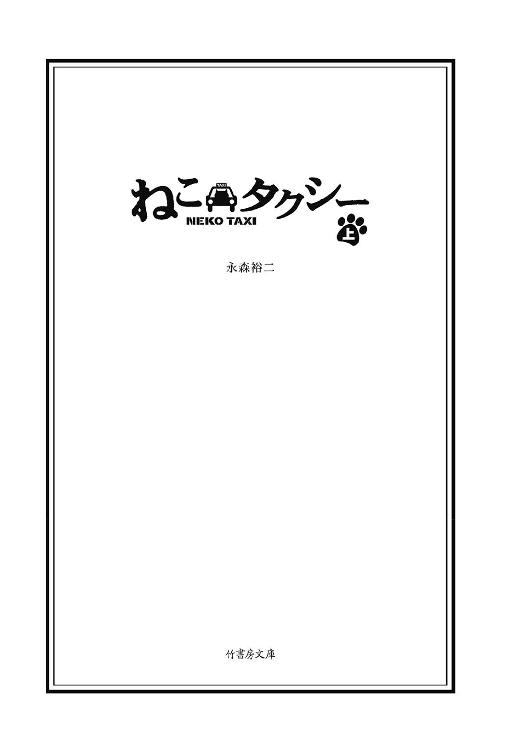
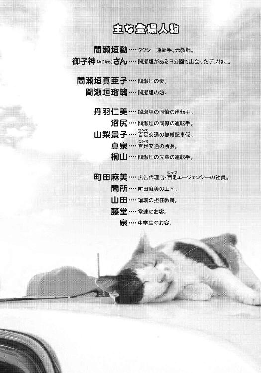

| ねこタクシー ［上］ (竹書房文庫) | |
| 永森裕二 | |
| (2009) | |

この作品は縦書きでレイアウトされています。
また、ご覧になる機種により、表示の差異が認められることがあります。
一部の漢字が簡略字で表示されていることがあります。
(C)永森裕二

ねこタクシー ㊤
ツトムは人を信用しすぎる。人なんて、そんないいもんじゃない。
よく父さんに言われた言葉を思い出していた。
俺は人を信用しすぎる。
人だけじゃない。機械も万能だと思っているフシがある。自分の興味や知能が及ばない領域は、そこに本気で取り組んでいる立派な人々がいて、立派な仕事をしているもんだと。
だから、このカーナビだってすごい人たちの超ナイスな知能で作られてるはずだから安心だと思っていた。
そして裏切られた。
信じていたぶん、傷も深い。
俺はとてもあわてていた。
「ナビって案外バカよ。ああもう、そんな色々押したって無理だって。前見て、前」
背後から指示された。
先ほどまで携帯でビジネス英語を話していた、カマキリのようなメガネをかけたサラリーマン。いかにもできる風情のシャープな語り口が羨ましかった。
目的地のどら焼き屋を通り過ぎてからもう一キロ以上走っていた。通り過ぎたことを指摘されて、焦って小道に左折したのがいけなかった。そこら辺は一方通行地獄で標識の言うがままに走っていたら、どら焼き屋はどんどん遠ざかっていった。
あわててナビを設定し直すと目的地まで五キロとアンサー。
アホかと。
ディスプレイの緑ルートにはカオスのようなジグザグ模様が描かれ、軽い嘔吐感をもよおした。
「ここまで来ちゃったら、もうここでいいやって言えないからさ、何とかしてよ」
カマキリの言葉に動揺した。普通はこういう時どうする？ ナビを見ずに自分の感覚を信じて進むべきか。
人じゃなく自分を信じるしかないと父さんは言った。
それが正解なのか。
でも父さんの趣味は、朝のワイドショーのラスト近くにやる占いコーナーをハシゴ見することだった。自分を信じてる奴が、占いで安心するなよって。
「ほら、前。さっきの国道でしょ。突っ切っちゃいなよ」
ドキリとした。
カマキリが言う通り、さっき走った国道に出るチャンス。
しかしそこへ至る小道。ほんの三十メートル。
その道の入り口には車両進入禁止の標識が立っていた。
一旦停車しよう。呼吸を整える必要がある。
そう教えてくれたのは所長の真泉さんだ。プロでも間違いはある。人の命を預かる仕事だ。動揺したら一旦停車。外の空気を吸って落ち着いてからだ。とりあえずこの上がりまくった心拍数を抑えないと。
俺はゆっくり車を停めた。
「何停めてるのよ。いい加減にしてよ」
「すいません」
カマキリと初めて会話した。カマキリどころか、今日乗せた三人の客で初めての会話。
「ちょっと空気を」
「は？ 空気？」
窓を開けて換気した。深呼吸二回。買い物帰りの主婦が変な目で通っていった。
カマキリが金無垢の時計をチャララッとわざとらしくふりかざして時間を気にした。先ほどの英会話中、うまいどら焼きを買って行くからと言っていたようだった。よく聞き取れなかったが「ドラヤーキ」という単語が何回かヒアリングできた。俺のようにうまく人と喋れない奴ほど、人の言うことはいちいち覚えている。
「早く行こうよ。ここ行って国道左ですぐだよ」
「あの、進入禁止ですから」
蚊の鳴くような声で言った。これを言うために深呼吸したと言っても過言ではない。そして返事を待たずにギアを入れてナビに従って小道を回避した。
「ちょっとさあ、ふざけないでよオタク。もう、停めて停めて」
予想はしていたので、すぐに再び停車。
背後で紙をめくる音がした。普通はお札を財布から取り出す音だと思うんだろうが、経験上違うと思った。
ミラーで覗くと案の定、助手席前に掲示してある俺の乗務員証をメモっていた。大方すぐに会社にクレーム電話をいれるんだろう。
これで何回目だろうか、真泉所長もガマンの限界かもしれない。カマキリは料金を支払って領収書を取り、大股で降りていった。
「何だよ偉そうに。どら焼きなんてセコい土産で外国人喜ばして、気が利く奴とか言われたいのかよ。だいたい最初通り過ぎたのだってお前がハッキリここだって言わないからだろ。ナビ頼ってるのはお前もじゃん」
俺は一人になると車内でとてもうるさい。
嫌な乗客が降りると、言いたかった言葉を最低十分近く途切れずまくし立てる。
そしてその後とてつもない自己嫌悪に襲われる。
決まってやっぱり自分が悪いんだという結論に達するから。
よく怒鳴り散らしたら気が晴れたとか、号泣したらスッキリしたとか聞くが、そんな簡単に感情が追い出せたらどんなに楽だろうと思う。どんどん溜まっていく一方だ。最後はいつもこの一言。
「やっぱ俺、タクシーは向いてないわ」
向いてないことをしてるんだから、まあ、仕方ないわ。そう心のグレーゾーンに結論を漂わせて、もう三年目を迎えていた。
夕方五時。タクシー営業が、さあこれからという時間、俺はいつもこの公園に来ていた。ビルの谷間に何かの間違いかのように取り残された三角形の土地。塗装の剥げた遊具がただ一つ。それも土管のような筒状の遊具が上下に三つ積まれただけのもの。
その公園のベンチで早めの夕飯を取るのが日課だった。
面した道路は一方通行の割には幅広で路駐には適しており、いつ来ても人はおらず、その代わり日もほとんど当たらず、妙に落ち着ける空間だった。
妻の真亜子が作ってくれる弁当は娘の瑠璃に持たせる物と同じおかず構成。体形を気にし出した中三の娘の影響ですっかり緑黄色野菜中心のダイエットメニューになっていた。この湿気の多い日陰の公園で草を食んでいる自分を客観視すると、何か別の種類の生き物になっていくんじゃないかと妄想したりした。
「間瀬垣さんって魚類な感じですよね」
同僚の女運転手、丹羽仁美に言われたことがある。
三十前の女性に四十八歳の俺はサカナに見える瞬間があるのかと、その晩は眠れなかった。
タクシーの車内から、無線の呼びかけが流れてきたが、無視した。
俺は無線を取ったことがない。できればずっと切っていたいが、ルールで待ち受け状態にしておくことが決められている。会社も不景気の影響で最近ピリピリし始めた。
ここ百足市は都心で働く人々のベッドタウンでありつつ、自動車関係や電子部品の工場が立ち並ぶ製造業の町。駅から離れた工場へは定期バスが出ているが、取引相手や工場視察の偉いさんの足としてはタクシーが利用される。俺のもっぱらの営業コースだ。駅から工場。ナビ無しでも行ける。それと百足総合市民病院。いずれも大抵ワンメーターだが、それで充分だった。長距離なんて聞いただけで胃が重くなる。道の不安もあるが、ずっと他人と狭い空間で一緒にいるのが苦痛だった。
だからタクシーにとって稼ぎ時のこの時間以降は、なるべく都心方面に出ないように心掛けていた。実際「ナワバリ」と呼ばれる営業地域の限定もあるし。
タクシーは一台の車を二人が一出番ずつ交代で乗務する。勤務時間は朝四時から翌朝四時ごろまで。みんなはこの間三百キロ以上運転し、中には一日七万近く稼ぐ人もいる。
俺の平均売上は一日二万ちょい。もちろんワーストワン。何せ夜が来たらなるべく客がいないような道を走って時間までの帳尻を合わせてるだけだから。
だったらずっとこの公園で寝てればいいじゃないかと思うのだが、最近のタクシーにはＧＰＳなるものが付いている。あまり長時間停車していると会社からパトロール隊を派遣されて、即刻懲戒免職になってしまう。事実、俺が入る前、競艇マニアの運転手が仕事そっちのけでレースに熱中していたら、連行されて退職届を書かされたそうだ。
やっと見つけた職を失ってはいけない。これ以上妻や娘から疎まれる存在にはなりたくない。そのモチベーションだけが、俺にはまったく向いていないタクシー運転手という職を続けさせていた。
今日もカマキリの一件があって食欲がない。ああいうことは一日一件はあるが、大抵は酔っ払いを乗せた夜が多い。夕方までに起こってしまっては明日の朝までずっと気が重いままだ。妻手製のベジタブル弁当にもほとんど手をつけられず、夜食にとっておこうかと思った。
その時、いつも見ている公園の風景にちょっとした違和感を覚えた。
自分以外誰もいない空間。動くものといったら風で揺れる木の枝と雑草くらいの土地。
あきらかに今、「にょっ」と何かが動いた。
何だ？
見渡してみる。
すると土管型の遊具の上の口から、何やら生き物らしきものが顔を出していた。
「ネコか？」
と、自分に問いかけたくなるような風貌。
世界中のダルさを一手に引き受けたような、やる気のない表情。
ベターッと土管の口に頭を凭れている。
立ち上がって遊具の中を覗くと、その巨大さにびっくりした。肥満にもほどがあるだろうと突っ込みたくなるほどのデカさ。白と茶のフワフワした毛が、より物の怪に見せている。半開きの目がふてぶてしさを助長している。
「にゃあ」
意外にも普通の鳴き声をデブ猫が発した。何かを欲しているのか？
「弁当か？」
その大きさに驚きはしたが、単純に腹をすかせた野良猫にエサをねだられただけだ。
「やらんぞ。シッシッ」
デブ猫は微動だにしない。
もう一度「にゃあ」と鳴いた。じっとこちらを見ている。
「シッシッ」
もう一度言って、弁当を無理やり食べ始めた。
このまま食わないと何か負けた気がする。ここは食うべきだという妙な闘争心が芽生えた。俺にはそういうところがある。
デブ猫にロックオンされながら黙々と食べていたが、じっと見られていることに耐え難くなってきた。
「寒くなってきたな」
わざわざ口に出してから、タクシーへ戻った。
寒くなったから移動したまでさ。
シートで残りの弁当を食べながらミラーを見た。背後の土管にいるデブ猫と鏡の中で目が合った。
デブ猫はそのたっぷりとした巨体を起こし、立ち上がっていた。物欲しそうにこっちに身を乗り出している。だが、やって来る気配はない。ただ下を見たりしてウロウロしている。こっちを見て、土管の中をフラフラして、また見て......あれ？
「降りられないってこと？」
そう分かったら、急に笑えてきた。
上れるけど、降りられないのかよ。
猫は高い所が好きだと聞いたことがある。さてはピョンと上ってみたはいいが、降りられなくなってずっとあそこに居ついてるんだな。
あわれデブ猫。無駄に肥えた報いだ。
むふふふ。意味なく勝ち誇った気分になった。
デブ猫はしばらくウロウロしていたが、すぐにあきらめたのか、またさっきの、べた寝ポーズに戻った。疲れるのも早そうだ。あっという間に眠ってしまった。気ままなもんだ。こっちはこれから深夜営業だっていうのに。さっきは勝ち誇ったが、なんとなく負けに思えてきた。
俺はさっさと弁当を平らげると、少し早めに公園を後にした。
反省文を書くのはこれで五度目だ。いずれも客からのクレームでその都度「もういたしません」的な幼稚な文を書かされる。ひどいクレームの場合、所長がその反省文を持って客に謝罪に行くらしいが、そこまでのクレームは今のところない。客も一言言えばそれで気が済むのか、悪質なクレームに発展するケースは稀のようだ。
午前三時半に帰庫し、営業報告し、売上を納めた後、洗車に出ようとしたところを真泉所長に呼び止められた。
昼間のカマキリの一件だ。
「お宅は、道知らない運転手で営業してるのかってさ」
「ナビで確認はしてたんですけど」
「ナビは目安程度にしないとさ。客も不安になるわけよ。機械に頼んなよって。こいつ道知らねぇぞって」
「すいません」
「ちゃんと接客できてる？ マセさん口ベタだからさ。変な誤解生んでると思うんだ」
「これからは気をつけます」
五回目の反省文のテーマは「ナビは目安程度」になった。
機械を信用しすぎる俺には丁度いいのかもしれない。だが口ベタは治らない。これでも色々頑張ったんだ。でも無理。言ったそばから落ち込んでしまうこの妙なクセが抜けない限り、人とうまく話せるとは思えない。
この仕事を始めた当初は、まだ車にナビが装備されておらず、分からない場所やルートがいくつか想定される時は必ず客に尋ねることになっていた。
当然行き方を尋ねた。まず客は嫌な顔をする。落ち込む。必死で道を覚えたが限界はある。一度「どうやって参りましょうか？」と聞いたら、「寿司屋で握り方分かりませんので教えていただけますかって言うかよ？」と返された。もっともだと思った。
それ以来聞くのが怖くなった。
家に着いたのは、いつもより一時間遅れの朝六時。
会社まで自転車で十分の所にある賃貸マンション。３ＬＤＫで家賃は十四万。そのほとんどを妻の稼ぎでまかなっている。
妻と娘を起こさないようにダイニングへ向かい、音声ミュート状態のテレビを眺めながら妻が用意してくれた夜食を食べる。こちらも必然的に娘の弁当のおかずの延長線上の献立が中心になる。ほうれん草のおひたしを食べながらビールを飲む。
うまいような、空しいような。
朝日がムダに爽やかに部屋を照らし、スズメの呑気なチュンチュンが聞こえると妙に胸騒ぎがする。俺が一日の中で一番嫌な時間。すべてから取り残されたような、そして俺以外の全員がまっとうに生きているような、そんな気分になる時間。
ふと、公園で会ったデブ猫の映像が頭をよぎった。
あの笑える顔。
「あいつ、どうしてるだろう」
口に出したら急に気になってきた。
土管から降りられないデブ猫はエサも捕れず、あそこで寝たまま冷たくなってはいないだろうか。あの時、あんな誰も来ない公園で、俺が最後のチャンスだったんじゃなかろうか。やっと訪れた救世主が、底抜けにつまらない奴で、ただ空腹を訴えただけなのに、やれ勝っただの負けただの妄想して立ち去った。あの時あそこに行ったのが俺じゃなかったら、あいつは助かっていたかもしれない......。
いやいや待て待て。考えすぎだ。いくらデブでもいよいよ死ぬほどハラが減ったら、たとえハードランディングしようが降りるだろう。
きっと俺は色々考えすぎるから、人より不幸なんだ。
「まだ起きてたの？」
妻の真亜子が起きてきた。目も合わせずにポットのお湯を沸かし始める。
「もう寝る。随分早いね」
「今日から早朝補習なの。もうすぐ中間だから」
「中間試験か」
補習。中間。懐かしい響き。俺も昔はそんなことをやってたな。真亜子はいまだにやっている。
真亜子と出会ったのは十八年前。七つある百足市の中学校の一つ、百足第三中学校だった。当時真亜子は第五中学から転任してきたばかりの英語教師。同じく英語を教えていた俺の学科同僚だった。
真亜子はサンタモニカに留学していた帰国子女。若く美しくネイティブ顔負けの英語力を持つ女性が、うちの中学に赴任してきたのは、当時としてはちょっとしたニュースだった。
俺はというと、親のやっていたネジ工場「間瀬垣精工」を継ぐのが嫌で公務員に逃げただけのダメ教師。英語なんてまったく喋れない。あの頃はパズルのように「受験英語」を教えるだけの毎日だった。
「もし時間あったら瑠璃の英語見てあげて。今日も私、遅くなるから」
「そんなの無理だよ」
「なにが無理よ。教師辞めても教員免許持ってるでしょ」
「ペーパードライバーみたいなもんだ」
「協力して」
ピシャリと言われた。
いつもこうだ。泣きを入れるとピシャリと言われる。
これがまた嫌いじゃないからＭっ気丸出しだ。真亜子とのバランスは、いつもこんな調子で取れていた。
「あなた、いい先生だったんだから」
「またまた」
笑えない冗談だ。
真亜子はいつもそう言うが、ちっとも嬉しくない。びっくりするぐらい信憑性がない。俺は人を信用しすぎるが、こればっかりは譲れない。
俺はダメ教師だったんだ。
「もう寝るよ」
そう言って残りのビールを飲み干した。
夕方、部屋に掃除機をかける。俺の家事分担は、洗濯と掃除。
タクシーの運転手になった当初は、疲れてるんだからそんなこといいわよと真亜子は言った。が、黙ってやり続けていたら何も言わなくなった。
真亜子は本来、掃除も洗濯も自分のやり方があって、そこを乱されたくないはずだ。だけど何もしていない自分に耐えられない俺の気持ちを汲んでか、仕方なく俺流を認めてくれているんだと思う。
ただ娘だけは自分の部屋に勝手に入られるのは心底イヤらしく、この生活になってから自分の部屋に鍵を付けてしまった。そこまでしなくても入らないよと言っても聞かない。真亜子も仕方ないわねと鍵を認めた。
今使っている掃除機はマイクロサイクロン方式とかいう最新式で、面白いように吸う吸う。しかも静かでホコリも撒き散らさない。昨年まで使っていた旧式のけたたましい掃除機を見かねた真亜子が、今年の誕生日に買ってくれた。
四十八歳中年男の誕生日プレゼントが、掃除機って。
ただ、こいつのおかげで掃除が俄然楽しくなったのも事実だ。
特に絨毯のホコリ吸引が、ほぼ快感に近い。掃除機のボディがシースルーになっており、取れてくるゴミが掃除機内に吸引されていく様が一目で分かる。毎回、こんなにもかというくらい吸ってくれる。
俺はこいつを密かに「ツトム２号」と命名していた。以前の旧式を「ツトム１号」と呼んでいたわけではないが、一応二代目だし、１号の立場も考えて２号にした。「ツトム２号」と共同作業している時間は、俺が最もミッションを帯びている充実した時間だった。
絨毯サイクロンに夢中になっていたら、リビングの入り口に娘の瑠璃が立っているのに気づいて、ツトム２号のスイッチを切った。
「おかえり。早いね」
「風邪っぽいから早退した」
「熱でもあるの？」
「私じゃなくて、隣の席の子。うつされたら嫌だし」
「そうか」
そのまま行こうとする瑠璃を「ちょっと」と呼び止めた。
真亜子にピシャリと言われていた件。
「勉強順調か？」
「は？」
「もうすぐ中間だろ？」
「そうだけど」
「英語手伝おうか」
「なにそれ」
「いや。手伝ってあげてって。母さんが」
「父さんの頃とは、今授業内容とか違うから」
自分の部屋へ向かう瑠璃の後を追った。
「じゃあ分からない所とかあったら聞こうか」
「塾で教えてもらう」
「そうか」
自室の南京錠を回す瑠璃。ふと俺の視線が気になったのか、右手で「シッシッ」と追い払われた。
こいつ、とことん信用してねぇな。
ほんの少し伸びかけていた「やる気メーター」が一気に下がってリビングに戻った。
親に「シッシッ」て。そんなところのプライドだけはまだ残っているんだ俺だって。一人で勉強できるのがそんなに偉いのか。ツトム二号でうるさくしてやれとスイッチを入れたが、残念ながらとても静かなモーター音だった。
翌朝四時に出勤すると、俺のタクシーはまだ戻ってきていなかった。
一台を二人で交代乗車する相方を、相番という。
相番は都度変わることもあれば、同じ人と共同でメンテ含めて一台を共用することもある。
俺の相番はこのところ我が所でダントツの成績をあげている沼尻という三十九歳の男。
こいつがいけ好かない奴だった。とにかく貪欲な銭ゲバでルール無視して稼ぐだけ稼ぐ。無線配車係の女性、山梨景子に取り入って良い無線をもらおうと画策したりもする。良い無線とは、長距離の良客からのコールを回すという意味。山梨景子は沼尻から高価な時計とか商品券とかを贈られているらしい。すべて人から聞いた話だが。
とにかく車が戻らないと営業にも出られない。仕方なく控え室にある喫煙スペースでぼーっとしていた。家では吸わないと約束しているタバコも、仕事に来ると急に本数が増える。環境のせいか。百足交通の運転手の実に九割が喫煙者だ。ここに来てタバコを始めた奴もいた。そんな喫煙磁場が形成されているんだろう。
などと考えていたら沼尻が戻ってきた。三本目を点けたところだったがもみ消して駐車場へ出た。
今日も荒稼ぎしてきたらしく、疲れ切った表情で降りてきた沼尻。俺を一瞥すると待たせていたことを詫びるでもなく、無言で事務所に行こうとした。
「車、もういいかな？」
少し嫌味っぽい匂いを出したつもりだった。
「ああ、いいっすよ」
普通に返された。
事務所に消えていった沼尻に向かって、本当に小さい声で「ばーか」と言ってみて、
空しくなった。
「ちょっと、タバコ臭くないですか？」
百足総合市民病院へ向かう途中、中年女性の客に言われた。
ミラーを覗くと眉根を寄せた上品そうな女の顔。ギプスをした右手を三角巾で吊っていて、反対の手で鼻を押さえていた。
「すいません」
窓を開けた。沼尻を待っている間に吸ったニオイを連れてきてしまったか。
自分も吸うからニオイに気づかないもんだ。
「タクシーって完全禁煙になったんですよね。運転手さんが吸ってたら意味ないでしょ」
苦手なタイプだ。
この手の女には反論は禁物だ。
「すいませんでした」
「ちょっとすごいわよニオイ。何か消臭剤みたいなのないんですか？」
ダッシュボードからファブリーズを取り出して車内に噴霧した。
「全然足らないわよ。ちょっと貸して」
女は俺からファブリーズを奪い取ると車内中に噴霧し始めた。シートから足元、天井、あげくには俺の後頭部まで。
俺自体がニオうとでも言いたげな執拗さ。ミラーを覗くとアースジェットでゴキブリ退治しているかのように俺に向かって噴射していた。
「あの、もういいでしょうか？」
「そうね」
ちょっと不服そうにファブリーズを返すと、女はそっぽを向いた。ドＳの血がたぎっていて、まだ物足りない様子。
こういう時は貝になるに限る。
「これからは、吸ったら運転しないでくださいね。吸ったら乗らない。タクシーの常識」
「はい。気をつけます」
「こんなこと言いたくないけど、私みたいな人、いっぱいいると思いますから」
そんなにはいねぇよ。
と、思ってしまうのは俺が喫煙者だからか。
「吸う人にとってはタクシー禁煙は我慢かもしれないけど、今まではこっちが我慢してたんだから。歴史が違いすぎると思いません？」
「そうですね」
出たよ。嫌煙家の正論。
こりゃ到着まで続くな。
嫌煙女のお説を散々聞かされた後、病院からの折り返しに男性客を乗せた。
その男が、いきなりタバコに火を点けようとしたので驚いた。
「お客さん、すいません。禁煙なんで」
「知ってるよ」
「あの......申し訳ありませんが」
「どうしても？」
上目遣いにおねだりされた。五十過ぎの自営業店主といった雰囲気。禁煙とは一生無縁な潔さを感じた。
「病院もダメ。路上もダメ。家も換気扇の下しかダメ。じゃあ、俺はどこで吸えばいいの？」
「......さあ」
「タクシーなんて一番吸っていい空間でしょ。移動している以外なんのサービスもないんだから。これでこのシートに肩モミ機能とか付いてたら別よ、気持ちいいから。電車の数倍払って、下手したら電車のほうが早く着いたりして、でもタクシーでって思うのはリラックスできる空間だからでしょ？」
「まあ、はい」
「今日びタクシーなんてみんな使わないんだから。あんただって病院で何分待った？」
確かに、嫌煙女を降ろしてから病院のロータリーに付け待ちして四十分以上待った。みんな近くの駅へ行ってしまう。俺にとっては特にたいしたことじゃないが、これが沼尻だったら五分で見切りをつけるだろう。雨でも降っていれば少しは客足もあるんだろうが、このところ晴天続きで、会社のみんなもうんざりしていた。
傘代わりにタクシーを利用する人口は、まだ存在するようだ。傘なんて三百九十八円で買えるのに。
「サービス業なんだから。もっと客の立場になってさあ」
「あの、嫌がるお客様もいらっしゃいまして」
「何で嫌がるお客様のカタだけ持つの？ 好むお客様は切り捨てか？」
ああ言えば、こう言う。この手も苦手だ。
というか、ほぼ誰でも苦手なんだけど。
「窓開けるから。いいよね」
そう言うと男は申し訳程度に窓を開け、結局タバコに着火してしまった。
あわてて全四面の窓を開ける。
「あんたも吸っていいよ。吸うんだろ？」
「いや、私は」
「吸いなって。こんな客いないよ。こっちも無理言ってるし、ルールなんて臨機応変にやんなきゃ」
共犯にしたいようだが、さすがにその気にはなれなかった。
何で俺ばかり、こんな特殊キャラな客ばかりがつくのだろう。
もしかして俺自身の何かが、こういう奴らを呼び込んでいるんだろうか。きっと俺が発しているダメなオーラを客は瞬時に嗅ぎ取って、ドＳの因子が刺激されるんだ。だから普通の人も、俺と接すると普段隠し持っている心のダークサイドを素直に出してくるんだ。
やだやだ。早く一人になりたい。
夕方五時。いつものように例の土管公園に着いた。
そうだ。あのデブ猫、どうしただろう。
路駐してミラーを土管に合わせた。よく見えないが、いないようだ。さすがに空腹に耐えかねて思い切って地面にダイブしたか。
少し安心して弁当を持って車を降りた。いつものベンチに向かう。その辺からヒョッコリ出てこないかと見回してみた。いつもの誰もいない日の当たらない公園。なんだか拍子抜けしつつ、弁当を食べ始めた。
しかし猫っていうのは日向ぼっこが好きだとばかり思っていた。こんなビルに囲まれた日陰の、さらに土管の中なんかになぜいたのか。たまたま入ってしまって、出て行けなくなっただけか。そう考えると、昨日からほんのり芽生えていた罪悪感もなくなっていった。そりゃそうだ。野良猫にいちいち感情移入するなんて。心が弱っている証拠だ。それに俺のほうがずっと前からここを利用してたんだ。あのデブに遠慮する必要がどこにある。
そう思っていつもよりガツガツ食っていると、真亜子特製のカボチャの煮物に水滴が落ちた。
「え、雨？」
タクシーにとっては恵みの雨。だが今、弁当を食べている俺には迷惑この上ない。
あわててタクシーの中へ戻った。
なんだよ。これじゃあ、みんなタクシー利用しちゃうじゃん。
ここでゆっくり食べて、雨止んでから出発するか。
そんなことを考えていると、どんどん雨脚は強まり、フロントが見えなくなるほどに降ってきた。思わずワイパーをかける。
と、ミラーに人影が映った。五、六歳くらいの男の子と、若い母親。
学校帰りなのか子供のほうは制服を着ている。急な雨に用意がなかったらしく、手を繋いで公園を走って横切ってきた。
子供がふざけて「かーさん雨宿り」と、土管の下へ潜った。
「何してるのコーちゃん。早く出てきなさい」
母親がたしなめるが、なかなか出てこない。仕方なく母親も土管へ入っていった。
次の瞬間、
ぎゃあーという絶叫が。
母親が土管から飛び出てくる。
「コーちゃん早く出てきなさい！」
雨でよく見えず目をこらすと、下の土管からのっそりと、
あのデブ猫が現れた。
「下に移動してたのかよ」
思わずつぶやいた。
「かーさん、でかいよ。デカブツだ！」
喜んでデブ猫を追いかける子供。
雨の中、宿を追われて逃げるデブ猫。
「やめなさいコーちゃん。ほっといて」
「エサ食べるかな」
子供はリュックサックから食べかけのお菓子を出して、デブ猫へ投げつけた。
「何してるの！」
母親は極度にデブ猫を恐れているようだ。
土管の中のビジュアルが余程ショッキングだったのだろう。
デブ猫は地面に落ちた菓子に興味を示したが、それよりも雨を避けて再び土管へ戻ろうと、子供のほうに近付いていく。
母親は、きゃああと奇声交じりで、足元の小石を拾って猫へ投げつけた。
「おいおい」
俺は思わず雨の中、外へ出た。
子供は菓子投げをやめない。猫は土管に戻りたい。
子供を制すればいいものを、母親は自分が近付きたくないのか、小石を猫に投げ続けている。
止めさせなくてはと、一瞬思った。
でも足が動かない。
変に人を刺激するのは得意分野じゃない。巻き込まれたくない。あんなデブ猫を救って何になる。浦島太郎か。
俺はそんな立派な人間じゃない。
「コーちゃん、お菓子やめなさい。そんなのに触っちゃダメよ！」
だが子供は言うことを聞かない。
そのうち母親の投げた石が、まぐれでデブ猫に命中した。
ノロノロ動いていたその巨体が、その瞬間だけ飛び跳ねるようにびっくりして、そしてサササッと走って行ってしまった。
「あーあ」と子供が言い、「いい加減にしなさい」と母親が怒鳴り、手を引いてこっちへ歩いてきた。
母親が俺とタクシーに気づいて立ち止まった。俺はどうしていいか分からず、急いでタクシーに戻ろうとした。というか逃げ隠れようとした。
「あの、乗せてもらえますか？」
「はい？」
「傘持ってなくて。今お願いしたいんですけど」
断る理由を探したが、うまく言葉を導き出せない。マゴマゴしているうちに、
「ドア、開けてもらえますか」
と強制的に言い切られた。
条件反射でオートドアを開けてしまった。
途端にビショ濡れの親子が後部座席に転がり込んできた。
シートのカバーで濡れた顔や手を拭いている息子。
「ほら、こんな所バッチいんだから触らないの」
お前の息子のほうがバッチいんだよ。
あーあ。シート、ドロドロじゃん。
「さっき、ばーばにお風呂頼んだから。帰ったら温まるのよ」
「お風呂入る時間じゃないよ」
「時間じゃないけど濡れたから入るの」
「濡れたら入るの？」
「そう。それにコーちゃん猫触ったでしょ。ああいう動物はバイキンだらけだから」
「猫はバイキンなの？」
「そうよ。噛み付くし、引っ掻くし、危険だから外で見つけても相手しちゃダメ」
偏見を押し付けるのが教育なのか。
こうやって無駄に敵を作らせるのが、しつけなのか。
「運転手さん、タオルとかありませんか、あとティッシュとか」
「......あいにく」
「しょうがないわね。コーちゃん濡れたままだと風邪ひくから脱いじゃいなさい」
言うと同時に嫌がる息子のシャツとズボンとパンツを剥ぎ取った。
真っ裸になった子供が、変にテンションが上がってシートでぴょんぴょんハネ始めた。
「静かにしなさい」
一応は言うものの、母親は全然止める気がない。
次に、あろうことか息子の衣類を足元で絞り始めた。
床に水溜まりが出来ていく。
水がドア付近の隙間から助手席の下まで流れてきた。
一体どういう感覚なんだ。
これも俺のダメオーラが呼び込むのか。
自分たちは突然の雨に遭った被害者で、たとえ回送表示をしていようがタクシーは商売だから当然丁重に乗せなくてはならなくて、しかも車内が濡れようが汚れようが客なんだから当然の権利だと言いたいのか。
「ちくしょう」と思った。
こんな感情は運転手になって初めてだ。
今までどんな失礼な客にも心の中では反駁していたが、悔しいとまでは思わなかった。
抑えられない感情がふつふつと湧いて出る。猫を悪く言われたからか？ 猫に石を投げつけたからか？ 別に俺の猫でもないのに。俺はあいつに、いつの間にか感情が入っていたのか？
「おしっこ」
コーちゃんが言った。
「もうすぐだから我慢しなさい」
「もれる」
「仕方ないわね」
仕方ない？
ミラーを見た。
母親がコーちゃんに耳打ちしている。
その視線は足元に向いている。
まさか......。
まさか、どうせ水溜まりになってるから、
ここでやっちゃいなさいとか言ってるんじゃないだろうな？
息子は「いいの？」と聞きたげな目を母親に向ける。
母親はチラチラと俺を確認しながら、どうせ気づかないわよという目で頷いた。
全部見えてるよこの野郎。
その時、母親が俺の背中を見て、うっすらと笑った。
この人、何やっても何も言わないし。運転も下手だからそっちで必死だし。私たちは雨に濡れた被害者なんだから、こんな人に遠慮しなくていいの。
そう言っている気がした。
頭が真っ白になり、
俺は急ブレーキを踏んでいた。
雨の路面を十メートルくらい滑って停車した。
反動で前のめりになり、母親が驚きに目をむく。
息子はシートに転がった。
「......何ですか一体」
後ろからクラクションライトをパッシングしながら、トラックが通り過ぎていった。
「トイレでは......」
「はい？」
「ここはトイレではありません」
必死で言葉を絞り出した。
何をやってる？
人を刺激したらロクなことにならないんじゃないのか？
「シートは、タオルではありません」
面倒に巻き込まれたら、必ず後悔するんじゃないのか？
俺はそんな立派な人間じゃないだろ？
「ネコは......」
言いかけて、言葉を引っ込めた。ここは、ネコは関係ない。
「トイレって何ですか？ まさかここでさせようとしてたとでも言うの？」
母親は誤魔化したが、目が泳ぎまくっている。
「シッコもれる」
急停車の衝撃で切羽詰まった息子が言った。母親は更に動揺した。
「しょうがないわね。ちょっと待っててください」
母親は逃げるように子供を連れて雨の中、外へ出る。
路肩で用を足す裸の息子。ションベン小僧さながらだ。
我ながら思い切った行動をとったもんだ。多分また反省文だな。
ビショ濡れになった母子が戻ってきた。
「行ってください」
それだけ言うと母親も息子も黙り込んだ。
自宅前まで送り届けると、母親に意味不明な捨て台詞を吐き捨てられた。
「もしこの子が風邪をひいていたらあなたのせいですから。治療費と慰謝料を請求します。あんな雨の路上に子供を裸で放り出して。恥ずかしくないんですかプロとして。もうあなたのタクシーには二度と乗りません」
確率から言って俺のタクシーに再び乗ることはないだろうと内心で突っ込みつつ、息子を裸にしたのも路上に出したのもお前だろうと思ったが、その言葉はいつものように飲み込んだ。
一刻も早くあの猫に会いたかった。裸で居場所から放り出されたのはむしろあの猫だ。
あの時に感じた悔しさは何だったのか。
やっと見つけた居場所を追い出されて、路頭に迷うと不安げな猫。
それに、俺自身の境遇を重ねたのか。
しばらく行くと背後で携帯のコール音がした。
見ると、後部座席に白色の携帯が転がっている。あの母親のものだろう。液晶画面には「自宅」と表示されていた。
彼女も相当頭に血が上っていたんだろう。投げつけるように料金を払って去っていった。今更ながらタクシーに忘れたことに気づいて、必死で電話をかけているに違いない。
「携帯の忘れ物ですか？ ありませんでしたよそんな物」
俺は、数時間後に聞かれるであろう質問の答えを練習した。
公園に戻る頃には雨は止んでいた。ゲリラ豪雨って奴だったらしい。
いつもの駐車位置に停めると公園の土管を見た。
思わず笑ってしまった。
あいつは戻ってきていた。しかもまた土管の上の定位置に。
石を投げられたことも、ゲリラ豪雨もなかったことのように、いつものふてぶてしい表情で眠っていた。
食いかけの弁当を持って車を降りようとする。途端、またバカ母の携帯が鳴り出した。俺は携帯を持って土管へ向かった。
土管に近付くとデブ猫が「みゃあ」と起きた。
「怪我なかった？」
俺は弁当を開けて、目の前に置いてやった。
デブ猫は一瞬すまなそうな目を俺に向け、それから弁当を食べ始めた。
がっつくというより、「ちゃむちゃむ」とよく噛んでゆっくり食べている。
俺はそれをじっと見ていた。
と、エサに夢中のデブ猫の首に、首輪らしき物が付いていた。
飼い猫だったか。
そこにはローマ字で、
「ＭＩＫＯＧＡＭＩ」
と書かれていた。
「ミコガミ......御子神さんか。君、この辺の子なのか？」
喋りかけると耳がピクピクッと反応するが、食べるペースは変わらない。飼い猫の割には随分体も汚れている。迷い猫か？
また携帯が鳴った。
「オモチャ要る？」
携帯を土管の奥に放り投げた。土管の中にコール音が反響する。
その音が気になったのか、御子神さんはやっと顔を上げて、面倒くさそうに音のありかを探った。のそのそと動き、携帯を発見すると前足でウシウシといじっていたが、すぐに興味をなくした。そして、少し座り直す感じになったかと思うと、なんと携帯にシッコをかけ始めた。鳴っていた携帯の液晶ランプが徐々に消えていき、音がプツリと止んだ。
「御子神さん、やるなあ」
その時、俺の中で少しだけ「風穴」が開いた気がした。
目には目を。シッコにはシッコだ。
御子神さんが教えてくれた。
自分の居場所は自分で勝ち取るものだ。
エサを残らず食い終えた御子神さんは、また眠りについた。俺は今日はずっとここにいたいと思ったが、馴れ合ってはいけないとも思った。きっと御子神さんもそれを望んではいない。
「また来るね、御子神さん」
いつの間にか「さん」付けになっていた。
でも、そんな風体なのだ。俺よりずっと色んな風景を見て、色んな体験をしてきた先輩。それに御子神という神々しい名前が素直に猫に対して敬称を使わせていた。
雨上がりの夜が、適度な湿気を含んだ風を運び、御子神さんのぴんと伸びたヒゲを揺らした。
翌朝、会社に戻ると待ちくたびれたかのように沼尻が近付いてきた。
「マセさん珍しいっすね。五分遅刻っすよ」
「すいませんでした」
「五分貸しですからね」
そう言って奪うように車に乗り込み、発車していった。自分のほうの借りはカウントしないのかよと思いつつ、売上を事務所に納めに行った。
案の定、納金を担当していた真泉所長に呼び止められた。
「マセさんの車でさ、夕方くらいに携帯の忘れ物なかった？」
「はい？」
「いや、何か興奮しててさ。お宅のタクシーだけど運転手までは覚えてないって言うのよ」
「そうですか」
「おまけに子供が裸で外に飛び出して、雨で大変だったとか。何か意味分からなくてさ。多分まともな人じゃないと思うけど、一応みんなに聞いててさ」
「何でしたっけ？ 忘れ物」
「携帯。白いのだって」
「携帯の忘れ物ですか？ ありませんでしたよ」
「そう。じゃ、いいや」
何とも言えない気分だった。
罪悪感が、ない。
俺は俺のダメなオーラを、今少しだけ隠せている気がしていた。
俺はこの会社に入って、初めての嘘をついた。
百足交通には三種類の勤務シフトがある。
日勤、夜勤、隔日勤務の三つ。
日勤は普通の会社員のように朝出勤して夕方帰る。夜勤は逆に夕方から翌朝まで。どちらも毎日出勤する。隔日勤務は朝から翌朝。ほぼ一日乗務して次の二十四時間は明け番でお休み。俺はこの隔日勤務にしている。他の運転手が大体このパターンで勤務していることもあったが、一日おきに休めるのが、飽きっぽい俺には丁度良かった。
今は妻の稼ぎでなんとか暮らしていけるし、俺は俺の時間をどう埋めるかだけを考えていた。
百足交通は父さんがやっていたネジ工場「間瀬垣精工」の取引先だったが、特に親しかったわけじゃなく、求人広告を見て応募した。「四十万から五十万 可」と広告にあったが、「可」なだけだった。
嘱託勤務の俺は一ヵ月にだいたい十二出番。一回で二万しか稼げない俺は月二十四万という所内ダントツビリの成績。給料は売上の四十五から五十五パーセントの完全歩合給なので、単純に最大十二万。ここから更に厚生年金や組合費などの各種の控除や経費を引かれて、手取り額は十万に満たない。
まさにバイト以下。
妻にぶら下がっている切なさが俺を家事に走らせ、そしてなるべく家にいないようにさせていた。
今日は週に一度の公休日。
タクシー営業は体が資本なので、運転手は公休を取るのがマストだ。会社としてもその辺のケアは監督官庁向けに必要なのだそうだ。サボりサボりやっている俺に公休なんていらないんだが。決まってこの日は、持病の腰痛と坐骨神経痛の治療に市民病院を訪れることにしていた。たいした稼ぎもないのにずっとシートに座って運転しているので、体だけはおかしくなる。毎週、電気治療とマッサージを受け、シップをもらって帰る。そんな空しい公休日。
「お宅、タクシーの運転手さんじゃない？」
支払いを待っていたら、待合所のソファで声をかけられた。
かなり年配のおばあさん。
「はい、そうですけど」
あいにく覚えていなかった。
俺はこの三年間に乗せた客の顔をほとんど覚えていない。なるべく目を伏せてやり過ごしてきた。
「一昨年の夏に、ここまで乗せてもらいました」
「そうでしたか」
「その節はお世話になりました」
「いえいえ。仕事ですし」
人のいい笑顔で微笑んでくる。人生はシワに表れるというが、きっといい人生を送ってきたのだろう。笑った形にきれいなシワが作られていた。俺なんて将来どんな人相になることか。
それにしても一昨年って。すごい記憶力だ。
「今から家まで送ってくださる？」
「あっと、今日はプライベートでして」
「プライ......」
年寄には難しかったか。
「今日は非番です」
ああ、と頷くおばあさん。
「それじゃあ、お薬もらったら、自宅までお願いします」
は？ ちょっと耳が遠いのか？
「あの、今日は非番なんで、車ないんです」
「車、ない」
キョトンと見ている老婆。
なんだかすまない気持ちになってきた。
一昨年乗ったタクシーの運転手の顔を覚えていてくれた、人のいい老婆。
俺にしては珍しく、何かしてあげたい気持ちが湧いてきた。
俺は自転車の後ろにおばあさんを乗せて走っていた。
これで送りますよと言ったら、ちょっとびっくりしていたが、後ろから精一杯抱きついてくるおばあさんを大事なお客さんだと思えていた。
あの猫の一件以来、色んなことが違って見えている。
おばあさんの家は、古い造りの日本家屋だった。
「どうもお世話になりました。おいくらですか？」
巾着袋から財布を出すおばあさんを制した。
「いや、お金はいらないんですよ」
「そうはいきませんよ」
「本当に。自転車の二人乗りでお金は頂けません」
「だって、今、これでお仕事されてるんでしょ」
「は？」
「自転車なんて驚いたけど。割といいもんでした」
「そうですか」
「何か一緒に走ってるみたいな感じ。ゾクゾクしたわ」
嘘を言っているようには思えなかった。ちょっと頬が紅潮して、冒険をした後みたいな顔つき。俺は少し嬉しくなった。
「みなさん乗って差し上げればいいのに。何でもやってみることね。ほんと」
完全におばあさんは、俺が自転車で営業していると思っているらしい。
「ヒマなのは今だけ。じき忙しくなりますよ」
「はあ」
そんなやり取りを繰り返し、やっとのことでお代を断って帰路についた。「次は必ず払わせてくださいね」と念押しまでされてしまった。
なんだか妙な気分だ。
ちょっと走ったところで気がついた。
「ヒマなんでって、聞こえたか？」
「非番」が「ヒマ」に聞こえていたようだ。
どうりで噛み合わないわけだ。
でも思い切って二人乗りまでして送って良かった。今までの俺にはなかった行動力だ。猫が開けてくれた針の穴ほどの風穴から、いい風が吹いてきている。そんなイメージが頭をよぎった。
ヒマなのは今だけか。
何だか俺までゾクゾクしてきた。
公休日だけは家族一緒に夕飯を取ると決まっていた。妻、真亜子は決めことが好きだ。家の中のルールは、ほぼ真亜子が決めている。
最近、掃除と洗濯で俺流が割って入ったが、それも片目つぶって容認している。家族といっても他人同士の集団なのだから、ルールがないといつか崩壊するんだと真亜子は言った。俺はどっちかというとファジーに流されて生きてきたので、家族なんてなんとなく成り立つものだと思っていた。
ただ、色々取り決めてくれるのはかえってありがたく、あれこれ可能性を考えて最良のジャッジをする真亜子は、実に頼りがいがあった。
娘の瑠璃も母譲りでその気がある。最近では妻と娘の合議によって物事が決定していく。我が家のヒエラルキーは妻と娘のツートップ、大きく離されて俺という逆三角形になっていた。
それにしても一週間に一回、こうして家族三人で食卓を囲むと、回を追うごとに話題がなくなる。真亜子の気遣いで、俺と瑠璃にコミュニケーションを取らせようという意図がミエミエなのだ。かえって俺にはプレッシャーがかかり、瑠璃は無口になっていくという悪循環が生じていた。だいたい何を話せばいいのやら。学校はどうだとか、勉強順調かとか、そんな話題なんだろうが、何せ膨らまない。頑張って喋っても、一問一答コーナーみたいになってしまう。
「聞き出そうとするからダメなのよ。自分のことを話せばいいの」
真亜子に相談した時に言われた。
だって毎日客を避けて最下位成績の俺に、面白いエピソードなんてありゃしない。グチならあるけど、この場でグチってどうする。どんどん家族内でちっぽけな存在になっていくだけじゃないか。
「瑠璃、父さんに言ってないわよね。家庭訪問のこと」
「家庭訪問？」
「そう、来月。先生みえるから、いてほしいの」
「分かった」
気が重かった。
真亜子は現在、百足第二中学に勤務していたが、学区的に瑠璃は百足第三中学に通っている。真亜子もベテランの域に達しており、この辺の中学教員の間では優秀な教師と評判らしい。プラスかつての同僚だった夫にも好奇の目は向けられている。第三中学は俺のかつての職場でもあり、どんな担任教師だか分からないが、絶対俺を値踏みするに違いない。
「母さんにいてほしいんだけど」
瑠璃が言った。
もっともだ。もっと押せ。
「いれるわけないでしょ。大丈夫よ父さんで」
その言い草はカチンとくるけどね。
「父さんだと、先生も聞くことないわよ」
「どうしてないのよ」
「だって二年の時も先生来てお茶すすって、いい部屋ですねって感想言って、それで終わったんだから」
「それで十分なの。うちは特に問題ないってことでしょ」
確かにあれは気まずかった。あっちは値踏みする。こっちは構える。娘はジレる。最悪の空気だった。
そもそも家庭訪問って、色々質問があるから来るんじゃないのか。
「あーあ。うちだけキャンセルできないかな」
いいねその案。賛成。
「バカ言わないの」
来月か。それまでに真亜子から担任の基礎情報を仕入れておかなければ。予習さえできていれば少しはいけるんだ。
タクシー客の、何が恐怖かというと、当然だが今日初めて会う人という、その事に尽きる。予備知識なしに人と接するには、ある程度の適応力と自信が必要で、その両者を俺は持っていなかった。思えば今日のおばあさんも、あっちから一度会っていると言われ、感謝されたことで、ぐっと心のハードルが低くなったのかもしれない。
翌日は朝から小雨が降っており、駅待ちのタクシーは面白いようにはけていった。
こういうのを「イレグイ」と言う。釣り用語で海に釣り糸を入れた瞬間に魚がかかるくらい獲物がウヨウヨいるという意味だそうだ。釣り糸自体を垂らしたくない俺にとってはありがた迷惑なのだが、順番がくれば当然乗せないわけにはいかない。
今日最初の客は、地味だが小奇麗に化粧をしたおばあさん。七十を越えたくらいか。昨日からおばあさんにはツキがある。この人もまた人の良さそうな笑みを浮かべて「すいませんねぇ」と乗り込んできた。目的地を申し訳なさそうに告げ、シートにちょこんと座る。昨日のこともあったので、しっかりお客さんの顔を覚えようと思った。
最大限の親切対応をせねば。
「あいにくの雨ですね。今日は一日降るみたいですよ」
まずは天気の話題。セオリーだ。
「そうですか。この年になると傘を差すのがおっくうでねぇ」
「午後の確率は七十パーセントらしいです」
「じゃあ一日ずっとですねぇ」
「明日は晴れるみたいですけど」
以上天気ネタ終了。話は続かない。
だって仕入れた情報は、これでＭＡＸだし。
しかしおばあさんはその後も、自分が家庭菜園をやっていること、市が一年限定で貸し出している菜園用地の抽選に当たって三坪だけだがトマトを作っていること、最近やっと雨が降ってくれて助かる、菜園なんて興味なかったけど、トマトを作ってみるといいもんだ、というようなことをポツリポツリ話してくれた。
俺は相槌を打っていただけだったが、なんともいい雰囲気だ。
俺、タクシーの仕事してるじゃんと少し浮かれた。
おばあさんはワンメーターだけ行った所でじゃあこの辺で停めてくださいと言った。俺はもう少し話していたいぐらいの気分だった。
初乗りの料金を告げるとおばあさんは柄にもなくルイ・ヴィトンの札入れを出した。
ありゃ、トマトだ何だ言ってブランド物持ってる。意外と資産家か？
「大きいのしかないんですけど」
一万円札をトレイに出す。「全然いいですよ」と自分の財布を出した。年末にデパートのワゴンセールで買った黄色い財布。風水で黄色は金が溜まると真亜子に言われて買った。確か三千円均一コーナーだったか。もう五年使っている。
タクシーを始めたばかりの頃、このお釣りという奴で近所のコンビニに走ったり、ＡＴＭで下ろしたりと散々な目にあっていたので、今は大量に千円札と小銭を入れている。したがって俺の黄色財布は最大限に膨れ上がっていて、かつてのシャープなたたずまいは影も形もなかった。
風水も適当だなどと思いながら千円札を九枚と小銭で返した。
「すいませんねぇ」
お釣りを受け取ったおばあさんは、ルイ・ヴィトンにしまうと席をたった。
そうか、こういう時こそサービス精神だ。
俺はドアを開けると、傘を持って後部ドアに回った。降りてくるおばあさんに傘を差し出す。
「まあ、ご親切にありがとうございます」
「いえ、濡れますので、気をつけて」
おばあさんは、丁寧に頭を下げ、心なしか足取り軽く去っていった。
俺にすまないと思ったのか、時折こちらを振り返ってはお辞儀をする。俺も中途半端ではマズイと思い、おばあさんが角を曲がるまで見送った。
すがすがしい気分だった。
タクシーやってるじゃん俺。
ちょっと伸びをした。猫背がクセになっているので体を反対に反らすと少し息を吸い込める。この伸びすらも忘れるくらい、いや、したくもないくらい猫背に凝り固まっていた。胸を張らせてくれる瞬間が余りに少なかった。なんか普通に嬉しい。むふふと笑った。
シートに戻って発車しようとした時、あれ？ と思った。
トレイに千円札が一枚置かれている。
おばあさんが一枚しまい損ねたかと思った。
ん？ しかし、何かおかしい。
最初におばあさんが出した一万円札がない。いや、違う。
その万札が、この千円札に変わっている？
「もしかして、や、やられた？」
俺が黄色財布をモゾモゾやっている時に置き換えたのか？
何も置かれていないと不自然なので、千円札にすり替えて。
最悪気づかれても俺の見間違いにできるし。
しかし......あの、人のいいおばあさんがそんなことするのか？
俺の見間違いか？
黄色の財布を確認した。でも何度確認しても一万円札は一枚も入っていなかった。
なんたることだ。九千円巻き上げられた。
一日二万の売上なのにいきなりマイナス九千円スタートって。
すがすがしい気分は一転してどん底のドロドロ感に変わった。
何が家庭菜園だ。何がトマトだ。
そう言えば去り際にチラチラこっちを確認してたな。俺が気づいて追ってこないか見てただけだったんだ。マヌケとはこのことだ。おばあさんにツキがあるなんて思いこんで。傘差してあげて見送って、とんだマヌケ野郎だ。
一気に萎えた俺は、しばらく呆然としていた。
人って怖いと思った。
「ああ、ヴィトンババアでしょ。有名ですよ、その人」
ＪＲ百足駅のロータリーにあるタクシープールで同僚の女運転手、丹羽仁美に会った。雨も止み、ひとしきり稼いだタクシーが、昼間の回転が悪い時に付け待ちする場所だ。あまり客もいないので、タクシーを停めると思い思いに車外に出て体を伸ばしたり喫煙したりする。俺が一人しょんぼり猫背に戻ってタバコを吸っていたら、丹羽さんに声をかけられた。
「うちでも何回かやられてるはずですよ。人柄が良さそうだから脇が甘くなるみたい。料金告げるとヴィトンの財布出して、足りないからそこのＡＴＭで下ろしてくるって言って、待ってると帰ってこないんですって」
そんな手口も使うのか。完全に常習だったんだ。
「間瀬垣さんってちょっと奥手だから、狙われやすいんじゃない？」
歯切れのいい女性だ。その通り。
しかし俺の周りの女は、みんなこんな感じだ。
「丹羽さんは、そういうことないですか？」
「私はないですね。女だからハナからナメられてるし。負けないぞオーラ出してますから」
「負けないぞオーラですか」
「女で若いからキャバクラの延長で話してくる酔っ払いとか、小娘が生意気にツンツンしやがってってワザと偉そうにしてくるオッサンとか。いちいち負けないようにしてないと付け込まれるし。お金関係は特に事務的にやらないと」
確かにこの商売、女というだけで相当ハンデがある。
負けないぞオーラか。どうやったら出せるのか知りたい。
負け負けオーラなら容易に出るが。
「でもそのオーラ、客にも伝わるみたいで、嫌なタクシーに乗っちゃったなって顔、みんなするのよね。私に言わせればそっちが悪いんだっての」
彼女は所内では二番目に成績が悪い。最下位の俺に比べれば相当良いが。
彼女のような若くて綺麗な運転手なら人気が出てもよさそうだが、「近付くなバリア」を強固に張ってるんで、指名とかが来ないんだな。
しかし......なぜこの女性、タクシー運転手なんてしてるんだろう。
素朴に疑問だ。
「じゃあ、何で若い女がタクシーやってるんだって顔してますね？」
おっと、しまった。俺は人一倍顔に出るタイプだった。
「その質問、客の十人に七人はしてくるの。あんまりしつこいんで統計取ってるんだけど。聞いてどうするんだよって感じ」
「でも、やっぱりつい思っちゃいます」
「キャバ嬢に、普段何やってる人って聞くのと同じレベルで接してこられるとムカつくのよね」
「あ、すいません」
「元ヤンなんで。単車を四輪に変えただけです」
「そ、そうなんですか？」
「嘘だけど。そうキッパリ言うと黙るんで。今のところベストアンサーかな」
嘘なんだ。本当かと思った。
それにしても、みんなそれぞれ工夫して仕事しているもんだ。
俺は奥手で脇が甘い。
負けないぞオーラなんか出した試しがない。
いや......ある。
あの雨の日。シートを泥だらけにした親子に負けたくなかった。
悔しかった。
あの原動力は、公園のデブ猫、御子神さんだったのかもしれない......。
そう思ったら、御子神さんに無性に会いたくなった。
公園の土管に御子神さんはいなかった。昼間は何処かを徘徊して、夕方ここに戻ってくる、そんな暮らしをしているのだろうか。三時。御子神さんはきっとまだ来ない。
運転席のシートに戻ったが、営業する気も起きずタバコに火を点けた。またニオイがこもってはまずいので窓を全開放する。
ラジオをつけた。俺にはお気に入りのチャンネルがある。地元放送局のＦＭムカデ。無駄なおしゃべりがなくて一日中音楽を流している。聞いたこともないような音楽ばかり。それもそのはずで地元のアマチュアバンドや子供たちがオリジナルで作った曲を流している。
地域文化の活性化とか、流行の発信基地になろうとかいう主旨らしい。ヒットチャートを賑わす曲に何年も前からまったくついていけなくなった俺は、誰も聞いていないようなラジオにヘビーローテーションでかかっている謎の曲を聞いているほうが落ち着いた。
いつからだろう。みんながいいと思っている歌手や曲をちっともいいと思えなくなった。
元々音楽に興味があったほうではないが、流行の歌くらいは口ずさめた。何せタクシー内の娯楽といったらラジオくらいだ。丸一日聞いていたら嫌でも覚えてしまう。
ＦＭムカデを知ったのは、何年か前。
真亜子が担任する生徒が自作の歌を応募したら、選考に通って放送されることになった。流れる週は分かっていたが日程と時間が分からない。一日中ダダ漏れランダムに流していくので局に問い合わせても分からないと。で、一日ラジオを聞ける環境にある俺に聞いておいてほしいと真亜子がリクエストしたのだ。確かに流れたかどうかの確認。
何でもその生徒は何をやってもうまくいかない俺のような生徒で、今回の放送を心から喜んでいる。これを機に勇気を持たせたいということらしい。
真亜子は基本そういう人間をほっとけないようだ。
最初このＦＭムカデを聞いた時はぎょっとするような曲ばかりで驚いたが、次第に聞き慣れるというか、怖いもの見たさというか、飽きないで続けられた。
その生徒の名前が呼ばれたのは聞き始めて三日目の深夜だった。
たまたま酔っ払いの客を乗せていて、名前に反応して「すいません」とボリュームを上げた俺に「この曲流行ってるの？」と客が聞いてきた。「いや、好きな曲なんで」と最短で話題が終わる返し方をした。
曲名は「手ぬぐいになれたら」という、本気なのかギャグなのか判別不能なタイトルだった。
手ぬぐいは、大抵もらい物で済まされる。誰も買わない。けど台所には一本必要。ペラペラでも吸水するぜ。しかも水を含むと重たくなって振り回すと武器にもなるぜ。色落ち上等。広げると意外と大きい。そんなものに、私はなりたい。
という主旨の歌詞を、ギター一本で弾き語っていた。
「好きな曲なんで」なんて言った手前、最後まで酔っ払いと二人でじっくり聞くことになってしまい、大量の冷や汗が出た。
しかし、手ぬぐいになりたいって。なんと志の低いことか。
聞き終わって酔っ払いは「深いね」などと調子を合わせてくれた。
放送されたことを真亜子に告げ、どんな曲だった？ と聞かれたので、「深い曲だったよ」と言っておいた。
それ以来、ラジオをつけると、この局に合わせることにしている。
いつの間にか眠ってしまっていた。ＦＭムカデには強力な催眠効果がある。目が覚めると百足第七小学校の生徒による「誰かが口笛吹いた」の合唱が流れていた。ムリに輪唱とかにしてバラバラな雑音合唱になっている。不協和音とはこのことだ。リズムの気持ち悪さに起きてしまった。
時計を見ると午後五時。二時間も寝ていた。やばい。ＧＰＳ捜査隊にキャッチされてしまう。
あわててエンジンをかけ走らせようとした、その時。
助手席に大きな毛玉のような物がドカッと乗っているのに気づいた。
「うおっ」
本気でびっくりした。
なんと、御子神さんが助手席のクッションの上に丸まって寝ていた。
窓から入ったのか。あんた、そんな跳躍力あったのか。
よく見ると御子神さんのフワフワした毛が心なしか汚れている。ちょっとした冒険をしてきたのか。
口をへの字に曲げた寝顔は、なんともおっさんくさい。
「御子神さん。御子神さん」
起こそうと思って体をさすってみた。
御子神さんの体は温かく柔らかく、当然だが毛だらけだった。揺するとムニムニ動く感じ。全然起きない。
丸まった後ろ足を持ち上げてみる。太くて重い。肉球がドロ水で汚れていた。
俺はティッシュを引き出して御子神さんの肉球を拭いてやった。一つだけというのも悪いので四肢全部の肉球を拭いた。黒くてザラザラしてるが押すとプニッとしていて何とも気色いい。いじり始めるとクセになり、ついプニプニやってしまう。
それにしても、何をやっても起きない。持ち上げてみるか。
と、突然無線が入った。
「十八号車、間瀬垣さん、どうかしましたか？ 移動願いまーす」
おいおい。無線で言わないでよ。運転手全員聞いてるじゃん。
配車係の山梨景子は、どこか間の抜けたところがある。
俺に言われたくはないだろうが、気遣いとか相手の身になってとかの優先順位が異様に低い。言われたとおりのことを普通に悪意なくこなしてしまうので、俺なんて杓子定規にバサバサ規定違反を指摘される。ちょっと遅刻しただけとか、禁煙場所で喫煙したとかで、すぐさま所長に言いつけられる。
だからまず、この状況では車を出さねば。
しかし、御子神さんをどうするか。
「御子神さん、ねぇ降りてくださいよ」
お願いしてみた。
少しだけ耳がピクッとしただけで、瞼は深く閉じたまま。
無理やり持ち上げようと御子神さんの腹の隙間に腕を差し込んでみる。両手で抱きかかえようとしたが......重すぎる。
何キロあるんだよ、あんた。
「十八号車、間瀬垣さん......」
また無線が。あわてて無線を取る。
「了解しました」
言ってすぐ切った。
仕方ない。エンジンをかけて発車した。
御子神さんは眠ったままだった。
ちょっと走って信号待ちの時、変な音が聞こえた。
ぐるるるる？
最後が「る？」っぽく語尾上がり。
御子神さんのイビキかなと思ったが違った。
どうやらお腹が鳴っているようだ。
ぐるるるる？
語尾上がりが気になる。「何かくれる？」って聞かれているようだ。
すると、自分の空腹音で御子神さんの目が覚めた。きょとんと俺を見る。
「おはよう」
言ってみた。まだきょとんと見ている。信号が変わったので発車した。
助手席から見られ続けている。何とも気になる。次の信号待ちの時に、やっと思い出したように視線を戻して再び寝た。まだ寝ててくれたほうがいい。この状況で長く走っていて、もし誰かが手を挙げたら乗車拒否しなくてはいけない。
と、コンビニが見えた。そうか。腹減ってたんだよな御子神さん。
俺はすぐさまコンビニの駐車場にすべりこんだ。
気にもしていなかったが、最近のコンビニはペットフードを扱っている。
「マグロック・アルファ」というマグロの缶詰を何個かカゴに入れた。何がいいかまったく分からなかったが、パッケージ写真がデブ猫だったのと、「ダイエットフード」と書かれていたからこれにした。
内臓脂肪とか気にしたほうが絶対いいよ、あいつ。
御子神さんをいじったせいか、背広の腕のところが毛だらけだったのでエチケットブラシを買った。
「あとは......」
飲み物か。何を飲むんだ猫って。お茶じゃまずいか。とりあえず水だな。あと先ほど入念に肉球を拭いたのでティッシュが少なくなっていた。ティッシュをと思ったが、ウェットティッシュのほうが拭きやすいと思い、円筒形ケースに入ったウェットティッシュを購入。さらにシートが毛だらけになると困るので大きめのタオルを買った。
コンビニの駐車場で御子神さんにマグロックを与えた。
シートをタオルでカバーし、助手席を御子神さん専用シートに作り替えた。
飛びつくぐらい空腹のくせに、何とものっそりした動きで「ちゃむちゃむ」と食べ始めた御子神さん。
俺は上着を脱ぎ、エチケットブラシでまとわりついた毛を取った。猫の毛という奴はなかなか取れないものだ。入念に室内も掃除した。相番の沼尻に何を言われるか分からない。
御子神さんは、一口が多いのか、のんびりした動きの割には、あっという間に二缶食い終わってしまった。
もうちょっとないの？
という視線を向けてくるが、せっかくのダイエットフードなのに何個も食べさせたら意味ないじゃん。
「もうおしまい」
そう言ったが、また例の「きょとん見」をされた。
「ごちそうさまね」
空き缶を取り上げると店前のゴミ箱へ捨てに行った。
とりあえず、あの公園に御子神さんを帰さなくては。
停車するたびに何十分もかけていたら、山梨さんもいい加減所長に申告するだろう。
車に戻って発車させようとした時、後ろの窓をノックされた。
三十代前半だろうか。弁当を入れたコンビニ袋を持った女。
近所に住んでいて、買出しに来た様子だ。
俺は御子神さんがいるのも忘れて、つい後部ドアを開いてしまった。
しまった、と思った時にはすでに女は後部座席に乗り込んでいた。
御子神さんは腹が膨れて再び眠りについている。俺はあわてて脱いでいた上着を御子神さんの上にかけて目隠しした。
「沢渡の交差点まで行ってください」
女は俯きながら暗くポツリと言った。
こうなったら行くしかあるまい。
「分かりました」と返事をし、メーターを倒して発車した。
沢渡の交差点までは五キロくらい。今の時間なら十分もかからないだろう。なんとかその間起きないでくれと、横目で助手席に祈った。
と、例の「ぐるるるる？」が聞こえ始めた。やばい。さっき食ったじゃん。底なしかよ御子神さん。ミラーで確認すると、女は携帯電話を握り締めて何か考え込んでいるようだ。しめた。気づいていない。俺はラジオをつけた。ＦＭムカデからママさんコーラスの歌声が流れる。曲は「グリーングリーン」。いい感じで御子神さんの腹の虫をかき消してくれた。
「ラジオを」
「はい？」
「ラジオ低くしていただけますか」
「あ、すいません」
女は意を決したように携帯をかけ始めた。
「もしもし。あ、マヤちゃん。お母さん。今何してた？ ......うん......そう......」
娘かな？
なんかヘンだ。
母は普段着でコンビニ弁当を買った足で、タクシーに乗って娘に電話。
しかも最大限に暗いトーン。
ワケあり感満載。
こういう時は知らん顔だな。
「運転手さん」
「はい？」
「何分くらいで着きますか？」
「そうですね。十分あれば」
それだけ聞くと女は娘と十分後、沢渡の交差点で待ち合わせて携帯を切った。と同時に俺は「グリーングリーン」のボリュームを戻した。ミラーで女を見ると、握り締めた携帯を見つめていた。少し手が震えている。
娘と晩飯時に交差点で待ち合わせって。うーむ、背景がヘビィそうだ。
「ズズズ」とノイズのような音がした。御子神さんの腹の虫別バージョンかと思い、上着をかけ直した。「グリーングリーン」をさらに大きくしようかと思った時、女が泣いているのに気がついた。
携帯を握ったまま、大粒の涙をこぼしている。
おいおい。何だか大変だな。
こういう時、何か言ったほうがいいんだろうかといつも思う。結局何もしないんだが。
泣いている人に手を差し伸べる器の大きさが、俺にはなかった。罪はないのに無力感が俺を包む。頼むから泣き止んでほしい。
なるべく見ないようにしてあげることが優しさだと真泉所長に聞いたことがある。聞いている人格じゃなく、落ちている石ころになりきればいいと。石ころになろう。俺は目をそむけた。そむけたはいいが、こうなってくると「グリーングリーン」が物悲しすぎるじゃないか。ラジオをつけたことを急速に後悔した。
「これ......運転手さんの猫ですか？」
なに!?
ぶんっと振り返ると、女の足元に御子神さんがまとわりついてるじゃないか！
「あああっと、あれ、どこから入ったかな」
「え？」
ダメだ。言い訳が通用しないだろ、この状況。
いつ起きたんだよ御子神さん。
「すいません。あの、すぐこっちに」
「抱いてもいいですか？」
「え......あの、重いですよ」
見当違いな返答をした。
さっきまで号泣していた女が笑っていた。
女は手馴れた様子で、御子神さんの前足の下に手を差し入れてひょいと抱き上げた。そうやって抱くのか。御子神さんは女の膝で丸くなってリラックスしていた。首の辺りをクネクネ触られて、何とも気持ち良さそうだ。
「名前なんていうんです？」
「えっと......御子神さんって呼んでますけど」
「御子神さん。すごくいい名前ですね」
「そうですか？ いや......」
首輪にそう書いてあったから、と言いそうになって止めた。
色々聞かれると、捨て猫を拾って乗せているだけになってしまう。実際そうだけど。でもこの場合、そうじゃないほうが彼女にはいいんじゃないかと直感的に思った。
「いつもこの子連れてるんですか？」
「いつもってわけでは、ないですけど」
「タクシーで猫に会えるとは思わなかった」
「あの、猫お好きなんですか？」
「......娘にね、いつか買ってあげるって約束してたから」
「そうですか」
ではどうぞ、御子神さんをこれから会う娘さんにプレゼントされては？
そんな俺なりに気の利いたプランを勝手に練り始めた。
「娘が生まれた頃には猫飼ってたんですよ。ここまでじゃないけど大きな三毛猫、ポッキーって名前で。娘も懐いてて」
「そのポッキーはどうしたんですか？」
女が言葉を詰まらせた。
やばいこと聞いてしまったか。きっと亡くなったんだろう。
「すいません。変なこと聞いて」
「いいえ。義理の母と同居しはじめた頃に、いなくなっちゃったんです」
「いなくなった？」
「義母がどこかに捨てたんだと思います」
何だよそれ。キツイ話だなあ。
「でも娘はポッキーのこと覚えてて、いつかポッキー買ってねって」
同じデブ猫なら娘さんも喜ぶかもしれないし、御子神さんだって今の放浪生活よりはマシだろう。女の膝で気持ちよさそうにしている御子神さんを見て思った。
「娘さん来るんですよね」
「はい？」
「いや、あのすいません。さっき電話聞こえちゃったんで」
「ええ、まあ」
「御子神さんに会わせてあげてください」
「ありがとうございます」
女は笑うと、とても綺麗だった。
こんなにお客と喋るなんて。俺史上最長だ。
しかも客のプライバシーまで突っ込んでしまった。何が功を奏するか分からないものだ。
沢渡の交差点に停車して娘のマヤちゃんを待つ間、女は御子神さんと大の仲良しになっていた。
猫をあやすのが余りにうまいので、俺は感心して見ていた。
御子神さんのウィークポイントは首の付け根と、腹のようだ。そこを力強くさすると雷が鳴るようにゴロゴロいう。
マヤちゃんが来て、御子神さんを気に入ったら、わけを話して引き取ってほしいとお願いしてみよう。御子神さんに会えなくなるのはなんだか物悲しいが、きっとそのほうがいい。
しばらくすると、また後ろのドアを外からノックされた。
見るとマヤちゃんというには余りにもお年を召した、いやむしろ女の母親くらいのおばあさんが睨みつけていた。
後部座席で女が絶句しているのが分かった。
もしかして、義母？
「どうしましょう？」
「......お願いします」
俺はオートドアを開けた。
おばあさんは無言で女の隣に乗ってきた。
「適当に走っていただける？」
押しの強い口調で言った。
昨日から数えて三人目のおばあさん。まったくもって、ばあちゃんづいてる。
発車して数分間、後部座席では一言も言葉が交わされない。
ただ、御子神さんだけが時おり「みゃあおお」と小声で鳴いた。
「何なの、その猫」
初めておばあさんが口を開いた。
「いえ。これは、その」
女が困った目を俺に向けた。
「あの、それ私の猫でして。今日たまたまタクシーに乗せてます」
「本当に？」
強い疑念ビームを、俺の後頭部に降り注いでくる。
確かにそんなに有り得る話じゃないが、事実なんだから。
「本当です」
「......そう」
全然納得していない顔だった。
「ミサエさん。自分が何してるか分かってるの？」
「はい」
ミサエさんという名の女は、今にも消え入りそうに小さくなっている。御子神さんもそれを感じてか、心なしか小さくなっていた。
「こんなことならもっと遠くに引っ越してもらうんだったわ。マヤには、ほとぼりが冷めるまで会わないって、念書入れていただいたの忘れたの？」
「すいません」
「今日のことはシンヤには言いませんから。なかったことにして頂戴」
「でも、お義母さん......」
「私がシンヤに叱られるのよ！」
シーン。
気まずさ百二十パーセント。
おそらくシンヤとはミサエさんの元旦那。離婚して父方に引き取られた娘さんに、会わない約束をした。それをミサエさんは、今日破ったんだ。
「お願いだからしばらく家には関わらないでください。こうなった以上、それがマヤのためです」
「......どうしてですか」
ミサエさんの目に、再び水分が溜まっているのが見えた。
「どうして、それがマヤのためになるんですか？」
「あなた、自分がしたことを覚えてないの？ まだギプスつけたままなのよ」
ギプス？
どういうこと？
「そうなってしまったのは......そりゃあシンヤにも、私にも落ち度はあったと思います。それは認めます。認めるけど、だからって起きてしまったことはほっとけないでしょ」
「マヤは、寂しがっています」
「何で、そんなこと分かるのよ」
「電話で無理に笑ってて、私がいないのは自分のせいだって思ってます」
「自分のせい？」
「マヤが言ったんです。私がこんな怪我したから、母さん家にいられなくなったんだよねって。ギプスが取れたら、帰ってくる？ って。そんなこと言われて、私には、ほんの少し娘に会ってあげることくらいしか......」
「そうさせたのは、あなたでしょ！」
修羅場だ。
勘弁して。
御子神さんも耳をピタッと伏せてしまった。
そのまましばらく二人は黙った。事が事だけに仲裁に入りようがない。
ただ、ミサエさんは、どうしようもない気持ちを整え始めたように見えた。
「......すいませんでした」
謝ったミサエさんを、義母は見ようともしなかった。
「その先の信号で停めてください」
義母に言われて停車した。
「降りて」
ミサエさんに義母が言った。
あれ？ ミサエさんを先に降ろすの？
「五分たったら行くから」
ミサエさんが顔を上げた。俺も外を見た。
道路沿いに、ペットショップがあった。
そしてその店内に、猫のケージを笑顔で食い入るように見ている少女。
右手にはギプスをつけていた......。
あれが、マヤちゃんか。
「......お義母さん」
「早く行って」
義母は車を降りると、ミサエさんに道をあけた。
ミサエさんは、抱いていた御子神さんを俺に差し出した。
「ありがとうございます」
「いえ......あの、行ってらっしゃい」
御子神さんを不器用に受け取って、せめてもの励ましを口にした。
ペットショップに小走りで行くミサエさん。マヤちゃんが気づいて駆け寄っていった。
義母はその様子を見つめていたが、改めて後部座席に乗り込んできた。
「五分くらい、このままいいかしら？」
「はい」
俺はドアを閉めた。
辺りはすっかり暗くなり、ペットショップの明かりだけが幸福そうな親子を照らし出していた。
あんまり見るのも悪いと思い、視線を外した。
「女が子供を取られるなんて......」
義母がポツリと言った。
ミラーの中、義母は歯を食いしばって涙をこらえていた。
会いたくても会えない親子もいる。会えないようにしなくてはいけない人もいる。みんな辛い思いをしている。
「この子、随分大きいのね」
義母が御子神さんを抱き上げた。こちらも手馴れている。
そんなに猫嫌いでもなさそうだ。
「マヤがね、孫なんですけど、昔から猫が好きなのよ」
「あ、はい。先ほど」
「聞いた？」
「はい」
「何て聞いた？」
ありゃ。まずい。
あんたが捨ててしまったんだった。
「私がどこかに捨てたって言ってなかった？」
「はあ......」
「そういうことにしたの。そのほうが誰も傷つかないし。それにあのままだったらポッキーが可哀想だった」
御子神さんは義母の優しいタッチに身を委ねていた。
この人は、猫を愛している。
「あの人も可哀想な人なの。何とかしてあげたかったけど何もできなかった。猫を虐待して、あげくに娘まで......」
事実はいつも残酷で、唐突で、受け止めるには余りに俺は無防備だ。
「あの人をああしたのは、息子と私。私たちも辛いの」
もう喋らないで。
他人の人生の深部に触れる度胸が、俺にはないんだ。
「ごめんなさいね。余計なことばっかりペラペラ」
「いえ」
「運転手さん話しやすいから。よく言われない？」
「いえ、まったくもって初めてです」
義母が初めて笑った。
彼女も笑った顔は素敵だった。
「この子抱いてると心がほっとするわね。本当にいい子」
五分後、義母はありがとうと礼を言って料金を払った。
「名刺頂ける？」と言われた。「今度指名させていただくわ」と義母は笑った。会社からもらったままで、手を付けていなかった名刺ケース。俺は、タクシー運転手になって初めて他人に名刺を渡した。
それから義母は、元の厳しい顔を作って、そのままペットショップで戯れる親子の所へ向かった。この人は自分がそうすることで、色んなものを守ってきたんだ。
みんなそれぞれの事情がある。
御子神さんが助手席に戻って丸くなった。
御子神さんにも御子神さんの人生がある。
土管公園に戻ってくると、少し覚えた抱き方で御子神さんを土管まで運んだ。御子神さんは安心できる空間に戻って、いつものポーズで横になった。
「御子神さんって、すごいね」
素直にそう思った。
俺が他人とこんなにコミュニケーションできたのは、御子神さんのおかげだ。
感謝という言葉が浮かんだ。
「ありがとうございました」
わざと口に出した。
感謝する時は、きちんと言葉にしたほうがいいように思った。
今まで感情を言葉にするのは、つまらないことだと思っていた。
でも違う気がした。
思ったことを口にして、それで色々起こるかもしれないけど、
そこから始まる何かもあるんだと思った。
昨日から三人のおばあさんに会った。みんな年の頃は同じぐらいだろう。
それぞれに人生があった。
俺にも俺の人生があるはずだ。
今やれることをやろう。
こんな気持ちは今だけかもしれないし、何かあると尻尾を巻いてしまいそうだけど、でも、今だけでもこんな気持ちになれたのは、なんだかとても良かった。
「また来るね。御子神さん、おやすみなさい」
挨拶して、俺は深夜の営業に戻っていった。
百足交通では、日報が義務付けられている。
タクシーを帰庫した後、売上を納める際に用紙を受け取る。車の点検報告記入欄が並んでおり、その最後に「本日の反省」「次回の目標」という大きな空欄がある。
これが毎回憂鬱だった。何せ書くことがない。
反省というのは、失敗を認識したから書けるんであって、俺みたいに人生が失敗作だと思っている人間は、果たしてどこから書いたらいいか。
ひどく落ち込んだ日など「生まれてきてすいません」と書きたくなる。それに伴って目標と言われても「明日も生きていこう」とか深刻な文章になりかねない。毎回俺の日報は、「反省・今日は頑張れなかった」「目標・次回頑張る」で、終わっていた。
毎日反省して、その都度目標が見つかるようなポジティブな人生に憧れた。
「こんな日報テキトーに書いとけばいいんですよ」と同僚の女運転手、丹羽仁美に言われた。だが、そんな彼女にだって、嘘だとしても書ける反省とか目標のネタがあるわけで、たいしたもんだと思ってしまう。
成績最下位のあんたが反省や目標がないわけないでしょ、と真泉所長に叱られたことがある。ありますよもちろん。でも読んだらギョッとするような身の上話になってしまうわけですよ。なので自分を誤魔化しながら、何とか空欄を埋めてきた。人の日報をカンニングして、いつも笑顔で接客をとか、言葉遣いを丁寧にとか、当たり障りないネタをローテーションで使っていた。
しかし......ここのところ、ほんの少しだが書けるようになっていた。
あの公園で御子神さんと出会ってから、一週間。
俺は出番の日は、必ずあの公園に立ち寄った。
御子神さんは、あれ以来いつも俺を待っているようになった。俺のタクシーを見かけると土管から降りてくる。ドアを開けると、助手席のクッションに乗ってきた。俺は公園に行く時間が近くなると、事前に助手席をタオルでカバーするようになった。
夕方の一時間、そこで御子神さんと夕飯をともにした。
御子神さん用のキャットフードは出勤途中のコンビニで購入する習慣もついた。その時間、御子神さんと色々話した。今日乗せた客のこと、会社のこと、家族のこと。誰かに話すと考えがまとまるというのは本当のようだ。当然御子神さんはノーリアクションなのだが、なんとなく俺が抱えている色んなものの落とし所が見えてくる。その日、御子神さんと話したトピックスを反省と目標に分けて書けばいいのだと気づいてからは、案外スラスラ書けるようになった。
日報を書いていた時、相番の運転手、沼尻が隣の椅子に座ってきた。さっき交替して出ていったはずなのに。
「マセさんさあ、なんか車汚れてるんだけど」
「え？ 洗車しましたけど」
「中。なんか犬連れの客とか乗せた？」
「......あ」
「シート毛だらけだよ。頼むよホント」
「すいません。すぐ掃除......」
「いいよもう。山梨さんに粘着ローラー借りたからさ。時間もったいないし」
沼尻の手にはピンク色のコロコロが握られていた。沼尻と仲の良い配車係の山梨景子が背後で睨んでいた。沼尻は長距離客の無線を自分に回してもらうよう、山梨さんにごちそうしたりプレゼントを渡しているらしい。二人は付き合っているという噂もある。
「四十分くらいロスしちゃったからさ、その分帰り遅くなるけど」
「はい。すいません」
「ま、マセさんの場合別にいいよね。奥さん稼いでるし」
沼尻は嫌味っぽく笑って出ていった。山梨さんも、ため息交じりで配車デスクへ戻った。妻の真亜子は、残業を厭わない熱血中学教師。ただ公務員なので稼いでるって言われてもそれほどの給料ではない。もちろん俺に比べれば高給取りだが。
それにしても沼尻の奴、なんであんなに必死に稼ぐんだろう。はっきり我が所ダントツの成績。ダントツとドンジリが同じ車の相番同士というんだから、嫌なくらい運転手のウデの差だと思われてしまう。
沼尻には借金があると、みんな噂している。タクシーの運転手というのは借金がある人が多い。大概は大した額ではなくて、主にギャンブルで作った消費者金融の借金だ。
運転手という奴は妙にギャンブル好きで、パチンコ、競馬、競輪、競艇。あとほぼ間違いなく何とかジャンボとかの宝くじを大量購入する。一攫千金を常に夢見ているのか。一日中走る重労働の反動で、不労所得に常人以上に執着するのか。とにかく賭け事が大好物なのだ。俺はそっち方面にまったく興味がないので、つまらない奴というレッテルを貼られている。
自転車で自宅に帰る途中、ふと気がついた。
そう言えば沼尻も、ギャンブルはやらなかったな。
じゃあ何で借金があるんだろう。いやいや、そもそも借金まみれで必死に稼いでいるというのも噂に過ぎない。もしかしたらタクシー業を一生懸命全うしているだけの非常に優秀なドライバーというだけなのかも。人はついやっかみで好成績高収入の人間に暗い背景を背負わせたくなるものだ。事実は案外、面白くもない話だったりする。俺は借金はないしギャンブルもやらないが、収入が少ない。沼尻は借金もなくギャンブルもしなくて収入が多い。それだけのことかもしれない。詮索しても俺の小遣いは増えない。
実は、今ちょっとした悩みがあった。
ペットフードが、思ったより高いのだ。
俺の毎月の小遣いは三万円。妻は弁当を作ってくれるが、タバコも吸う俺にとって、意外とあっという間になくなる金額だ。缶コーヒーとか買ってしまうし。それが今月は、もうすでに底をついてしまった。
ペットフードやら御子神さん関連グッズを買いすぎたのだ。おまけに俺のスーツはエチケットブラシじゃ処理できないくらい脱毛被害に遭っている。クリーニングにも出したい。
真亜子との取り決めで、タクシーに関わることは、月三万以内ですべてやってほしいと言われていた。
「どうしてもって時は、最悪出すから」
とは言うのだが、最悪って。言い出しにくいにもほどがある。
だがしかし、現状では明日からの御子神さんの食事にも窮していた。
今日にでも、その最悪の事態を話さなくては。
いくらなんでも野良猫の食事で小遣い使い果たしたとは言えないし。
果たして何て言うか......。
「おかえり」
リビングでテストの採点をしていた真亜子が顔を上げた。徹夜したようだ。真亜子はよく徹夜をする。あなたも徹夜で頑張っているんだからと真亜子は冗談ぽく言うが、俺は翌日明け番だが教員に明け番はない。本当に中学教師という仕事は、本気度が増せば増すほど割に合わない。あのまま俺に勤め上げられるはずがなかったと、今になって確信している。
「体壊すよ。少し寝たら？ まだ二時間寝れるよ」
「これやっちゃって、弁当作らないと」
真亜子は少しイラついた口調で言って、ペンを指先で回した。
真亜子はペン回しがうまい。俺は何度トライしてもできない。
弁当くらい俺がやっとくよと言いたいところだが、それは無理だった。瑠璃の弁当はカロリー計算とか色々されているので、手出しできない。
一度真亜子が風邪で倒れた時、事情を知らない俺が親切心で弁当を作った。イシイのミートボールとレタスと米で構成。
それを瑠璃は一口も手を付けずに、翌朝食卓に戻してきた。
レタスだけでも食べてよと言ったら、タレがかかってるから嫌だと。ああそうですかと。それ以来一度も娘の弁当には関わっていない。
俺はいつものように真亜子が作り置きしてくれた夜食を食べながら、邪魔にならないように息を潜めていた。
「テレビつけてもいいわよ」
「いや、特に見たいのないし」
「そういえば、瑠璃の英語見てくれてる？」
知ってるくせに。わざと聞いてくる。
機嫌が悪いときの兆候だ。
「塾で教えてもらえるからいいってさ」
真亜子の手が止まった。
ため息をついてこっちを見る。
「瑠璃が、塾の夏期講習受けたいって。週三回で一ヵ月」
「へぇ」
「いくらかかると思う？ たった十二回の授業で八万よ」
「でも、仕方ないんじゃないの」
「英語教師が二人いる家の子なのよ？」
「俺は、だって、今はさ」
「言いたくないけど。先月いくら家に入れてくれたの？」
おっとこれは。
よくない流れになっちゃったよ。
「仕方ないなんて言えるの？ そりゃ瑠璃の受験は大事よ。だからって何でもお金で解決できるほど裕福じゃないでしょ」
あーあ。
こりゃ御子神さんの食費なんて、とても言い出せないぞ。
「慣れないことしてるのは分かってるけど。もう三年でしょ。コツっていうか、技っていうか、自然と身についてくるんじゃないの？」
「今タクシー業界、不況だからさ」
「日本の全業界が不況よ。学校だってヒーヒー言ってるし。みんな生き残りかけて頑張ってるんじゃない？」
確かに。世間が必死の形相で頑張ってるのに、俺だけが、頑張ってない。
「工場やってた時よりは気楽なのかもしれないけど。何か、だんだん、私も疲れてきちゃった......」
「今月は、ちょっと頑張れそうだから」
根拠のない発言。
そんな言葉だけでも言わないと、申し訳なくて消え入りそうだ。
「......ごめん。さっきちょっと瑠璃と言い合いみたいになっちゃったから」
「塾のことで？」
「勉強したいのに親がケチるみたいで、本当嫌になっちゃって。だからあなたにもやれることは協力してほしいのよ」
「分かった。もう一度瑠璃と話してみるから」
「お願いね」
そう言って真亜子は採点を再開した。
寝室に来て布団にくるまったが、全然目が冴えていた。
俺は一体何をやっているんだろう。
なるべく聞きたくなかった現実。このまま毎日が消化していければいいなと思っていた。だが、そうはいかないということだ。真亜子も瑠璃も闘って成長している。俺だけが敵前逃亡を繰り返し、停滞している。
また風穴が開けば......。
御子神さんと初めて会った日に感じた、あの感じ。自分の居場所は、自分で勝ち取るものだ。思えば俺の人生は与えられたり、促されたり、誰かにしつらえてもらった物ばかりで構成されていた。唯一あった俺の意思といえば、親の工場を継ぎたくないという逃走思想のみ。身近な職業が工場と先生しかなかったので、勉強して教師になった。あの頃、目標が見つかって、教師になりたいと強く思っていたような気もするが、どんなパッションだったのか、その内訳は今はもうすっかり忘れてしまった。
父さんのやっていた「間瀬垣精工」は、創業三十五年の老舗工場。既製品にはない、特殊ネジをはじめ特殊リベット、ボルト、ピン、ナットやそれらを含む締結部品を製造していた。材料も鉄、ステンレス、銅、アルミなど多岐にわたっていた。父さんはいつもその切削カスのついた服を着ていて、鉄臭かった。
この金属臭から逃れるためなら何でも頑張れると、青春時代の俺はいつも思っていた。
教員試験に受かった時、父さんが日記帳をくれた。五年間書ける分厚い日記帳だった。日記をつけろ。俺もつけている。お前は人を信用しすぎる。こいつは信用できないと少しでも思ったら、その名前を書いておけ。人の記憶は時間で中和されるようにできている。お前も社会に出たのなら、周りに敵が潜んでいることを忘れるな。
俺はその晩、一ページ目に父さんの名前を書いた。
それ以来、あの日記は書いていない。もうどこかにいってしまった。探す気もない。
それから教員生活を頑張って続けたが、俺には到底無理な職業だと気づいて五年前に辞めた。
唯一の奇跡は、真亜子と出会ったこと。
そして、なぜか結婚できたこと。
教師を辞めると言った俺に、何も反対せず「残念だけど」とだけ言って認めてくれた。
俺はやることもないので、父さんの工場を手伝った。あれほど嫌っていた金属まみれの生活が、その時の俺にはほっとできた。収入は少なかったが、それでも今の三倍以上あっただろうか。ほどなくして大手メーカーの不況が本格的になり、ある日急に発注が止まった。本当にある日突然だった。何十年という付き合いの業者もあっさり取引を断った。
父さんはあきらめの早い男で、それからたった二週間で三十五年続いた工場を人手に渡した。一ヵ月後には、千葉の海岸沿いにある中古の一軒家に夫婦で移り住んだ。
人を信用しない父さんは、いずれ引き際が来ることを予感し、終の棲家を安価で購入済だった。お前も来るかと言われたが、真亜子の仕事もあったし、何より俺が一緒にいたくなかったので断った。少ししてタクシーの運転手の募集広告に応募した。給料は下がり、暮らしはキツくなり、真亜子の負担が増えていった。分かっているが片目つぶってやりすごしてきた。
でも、今日、それではいけないと言われてしまった......。
一睡もできないまま、いつものように家の掃除と洗濯を終え、早めに会社に出勤した。
俺にはある決意があった。
昨日眠らずに自分に言い聞かせた一つのこと。
お金を稼ごう。
真亜子の一言でパンドラの箱は開けられてしまった。
俺は人生で初めて甲斐性を持とうと思った。
瑠璃が生まれた時は夫婦共に教員で、何となくこのまま行くような気がしていた。今回は違う。明らかに色んな意味で家族にぶら下がっている自分がいて、騙し騙しやってきた。だが、つまりはもう限界なんだ。御子神さんひとり食べさせられない中年男に、家族を持つ資格はない。
ただ、意思は固まったがやり方が分からない。今までだって何とかしようと思ってはいた。でもすぐ挫けてしまう。昨日一晩考えた結論は、我が所の稼ぎ頭、相番の沼尻に教えを乞おうというものだった。どうやったらそんなに稼げるのか。そんな簡単に教えてくれるとは思えないが、場合によっては沼尻が配車係の山梨さんにしているように何か付け届けをしてもいい。これは俺への投資なんだ。
そんな決意を胸に、会社の喫煙所で沼尻の帰りを待った。
「俺、酒飲めないっすよ」
沼尻はヘラヘラッと言った。
思い切って誘ったのに一笑に付された。
だがここで終わったら、今までの俺だ。
「じゃあ、メシだけでも......ちょっと話したいことがありまして」
「何ですか？ マセさんからメシの誘いって、想像を絶してるんですけど」
「相番同士だし、少しくらいお互いのこと知ってたほうがいいかなって」
「キモイっすよ。この前の犬の毛の件とかですか？」
「いやいや。そうじゃないんですけど」
当たらずも遠からずだけど。
「お互いのことっていっても、実際顔合わせるのは一瞬だし」
「そうだけど、同じ車の住人ですし」
妙に粘る俺に、沼尻は納金と洗車が終わったら、少しだけならいいすよと言った。
百足交通から歩いて三分の所に、二十四時間開いているファミレスがあった。深夜はヤンキーのたまり場になっていて、まず行かない。朝方になると閑散とするので、話すには丁度いいと思った。そこで待ち合わせ、俺はドリンクバーを注文してウーロン茶を飲んで待った。
十五分くらいしてやって来た沼尻は、眠そうに大あくびをした。二十四時間五百キロを走破し、目も腰も疲れ切っているだろう。じっくり話をするわけにもいかなそうだ。
「お疲れのところすいません」
「なんすか一体」
おまけに機嫌も悪い。単刀直入に言おう。
「笑わないで聞いてほしいんですけど、その、沼尻さんは何でそんなに稼げるんですか？」
「は？」
「同じ運転手として、しかも同じ車に乗っていて、何でここまで売上が違うのかと思いまして」
途端に沼尻はムッとした口調に変わった。
「俺が何か悪いことしてるって言いたいの？」
「いえいえ。そうじゃありません」
「じゃあ何？」
「教えてほしいんです。どうやったらそんなに稼げるのか」
沼尻はタバコに火を点けた。
「バカバカしいと思うかもしれないけど、必死なんです」
「だからって、じゃあこうすればいいですよって、何で俺が教えなきゃなんないの？」
「仰るとおりですが、もうこれ以上家族に迷惑かけられなくて。先日沼尻さんに言われた通り、妻に養ってもらっている生活を変えたいんです」
「だから、それを手伝うのが何で俺なの？」
「沼尻さんはうちのトップだし、相番だし、それに......」
「それに？」
「俺と同じで、所内でちょっと浮いているっていうか......」
はんっと沼尻が笑って、含んでいた煙を吐いた。
「似たもの同士ってこと？」
それからしばらく、俺の家庭事情を話した。
俺がいかに会社でも家庭でも浮いているか、そんな話でもテコにしないと、この強欲男に自分の利益にならないことをお願いできないと思った。話していて俺の人生って何てつまらないんだろうと自分で嫌になった。沼尻もどんどんつまらなそうになっていった。
ひとしきり話したが、沼尻のハートを掴んだ手応えはまったくなかった。
「先生だったの？」
おっ。変なところに食いついてきた。
「ええ、まあ。昔の話ですけど」
「じゃあ噂は本当だったんだ。山梨さんが前言ってたのよ。間瀬垣さんって昔、中学の先生だったのよって」
事務関係もやっている山梨さんだったら、俺の職務経歴書くらい見ることがあったのだろう。
「教員免許は？ まだ持ってるの？」
「一応持ってますけど」
「ふーん......そうか。まだ持ってるんだ......」
何だ何だこの展開。教員免許にこの際何の意味がある？
ふと俺の脳裏に、沼尻が考えているであろう、一つのどす黒い策略がよぎった。
「分かりました。教えますよ色々。何が聞きたいんです？」
「あ、ありがとうございます。えっと......」
頭の中がぐちょぐちょになっていた。
もしその予感が正しければ、これはマズイことになる。
「何から聞けばいいかも分からないですか？」
「はあ、まあ。すいません」
「じゃあ明日、俺の助手席に乗りますか？」
「え？」
「研修だとか言えば大丈夫ですから。実地で見たほうが身につくでしょ」
願ってもない申し出だが......しかし......。
「その代わり、研修が終わったら一つ頼みを聞いてもらえますか？」
「どんな？」
「まあ大したことじゃないです。終わったら言いますから」
危ないっ。
これは危険度Ａだ。
しかし、背に腹はかえられない。
「ちょっと......怖いですね」
「じゃあ、やめますか？」
どうする俺？
やめたらせっかくここまで話したすべてが無駄になる。
「......あの、お願いします」
言ってしまった後、頭が真っ白になった。
その後、沼尻は早々に明日の研修打ち合わせをして帰ってしまった。
沼尻が要求してくることを想像して、心臓が破裂しそうになっていた。
以前、同僚の先輩運転手、桐山さんから聞いたことを思い出していた。桐山さんは借金まみれで消費者金融四社から満額借りまくっていた。タクシーの運転手は乗務員証があるので身元がハッキリしているため、少しは借りやすいんだそうだ。しかし貸すほうもバカじゃないので五社目ではつまめなかったらしい。その時、俺が元教師だと知っていた桐山さんが言った言葉。
「マセさんは、乗務員証と教員免許二つあるから借り放題だね」
つまりタクシードライバー同様、身元がハッキリする教員免許があれば、さらに借金がしやすいということだ。
沼尻には相当の借金があるという噂があった。もうこれ以上借りられない状況なのかもしれない。それで必死に働いているが、なかなか返済が追いつかない。そこで俺の教員免許を利用して......。
身震いがした。俺はとんでもない墓穴を掘ったのではないだろうか。研修とか言って適当に教えて、ものすごい要求だけされるのではないか。
たまに勇気を振り絞るとこのザマだ。自分で仕掛けておいて、一気に憂鬱になった。
だがしかし......。
これしかないんだ。
俺はどん底の気分を引きずりながら、会社に戻っていった。
御子神さんがいつものように助手席で丸くなる。
ちょっと不貞腐れた感じ。
小遣いを使い果たした俺は、真亜子の弁当を御子神さんとシェアした。ただでさえ野菜中心のあっさり弁当なのに、それを半分しかもらえないので、御子神さんはあっという間にたいらげてしまった。
「まさか、これで終わりかね？」という目で、じいっと見られた。
「ダイエットしようよ御子神さん。このくらいで丁度いいんだよ」
御子神さんは大あくびをして、つまらなそうに寝てしまった。
「そんなに怒らないでよ」
ぶよぶよな背中を撫でて、ご機嫌を伺った。
すると、あんなにもっさりした動きの御子神さんが、前足をシャッと掻いて、俺の手の甲にうっすらと傷を作った。
「いたっ。なんだよ御子神さん。ぶつことないだろ」
御子神さんからの初めての暴力。
贅沢に慣れると、すぐこれだ。
いつの間にか、猫にせっせと貢いでいる格好になっていた。
傷のところをさすっていると、御子神さんがむっくり頭を起こし、
「いたかったの？ ごめんね」という目をした。
まあ勝手に俺がそう思っただけだが。
「大丈夫だよ。もうぶたないでよ」
「うん分かった」そんな感じで目配せして、御子神さんは再び丸まった。
こんな妄想会話が今の俺は心の底から楽しい。
いつまでだって続けていられる。とんだ一人上手だが、楽しいんだから仕方ない。沼尻にノウハウを学び、明日から必ず腹いっぱい食わしてやるからな。
たとえ沼尻の要求が何であれ、久々に持つことができた目標をきちんと目指そうと思った。
思えばタクシーの助手席に座るのは初めてだ。
昨日御子神さんが丸くなっていたシート。そこに今日は、借りてきた猫のように俺がチョコンと座っている。
沼尻の運転はとにかく荒く、いかに早く進むかをテーマにしていた。早朝から二時間ですでに十五組の客を乗り降りさせている。朝イチこそ駅の付け待ちをしたが、そこからは獲物を狙うハイエナのように流しまくり、山梨さんからの無線もひっきりなしに入る。まさにフル稼働。俺の足元には沼尻が毎日持参するバッグが置かれている。何が入ってるのかと思ったら、疲労回復のドリンク類がぎっしり詰め込まれていた。
「マセさんトイレ近い人？ ちょっと我慢してもらうけど」
朝イチでそう言われてしまい、さっきから尿意を我慢している。
同じ百足市を営業していて、俺がまったく知らない抜け道を、もうすでに五，六本通った。沼尻はカーナビを一切使わない。すべての道が頭の中に叩き込まれている。実は陰で相当な努力もしているようだ。客を乗せている間以外、沼尻はずっと黙っていた。いちいち教えないから目で見て盗みなさいよって意味らしい。俺は用意していたメモを必死で取っていた。三半規管が弱いのでちょっと車酔いしてしまった。車に酔いやすいタクシー運転手って......しかも尿意まで......。
なんだか早くも挫けそうになっていた。
「マセさん、タクシー運転手の平均月収っていくらか知ってます？」
急に沼尻が喋り出した。
「え、分かりませんね」
「約二十三万だって。こんな重労働なのに二十三万ですよ？ 年収で三百ないんです」
俺はそこにすら到底及んでないわけだが。
「規制緩和でタクシーの台数が全国で八千台増えたのに、客は年間五千万人減ってるんだそうですよ。そこに来て初乗り料金の値上げだとか、タバコ禁止とか、シートベルト着用しろとか。全部守ってたら商売になるはずないでしょ」
確かに沼尻は、乗せた客にシートベルトをお願いすることはなかった。きっとタバコも許すんだろう。
「所詮俺たち個人商店ですからね。甲斐性一つで結果は違ってきますよ」
出た。甲斐性。
俺に最も欠落しているもの。
とか思っていたら、知らない間に我々百足交通の営業外エリアに来ていた。客を乗せている場合はもちろんＯＫなのだが、空車状態で入ってはいけないとされている。
「これ、出ちゃってますけど」
「出たことないの？」
「だって、禁止されてるんじゃ」
「ルールは、営業区域で乗せるか降ろすかするなら、別エリアに出てもいいってなってるでしょ」
「そうですけど」
「空車のままこっち走っちゃダメ、とは言われてませんよ」
「でもこっちで拾って、うまく百足市方面に行ってくれればいいけど」
「そういうことにすればいいじゃない」
「そんなのアリですか？」
「ナシですよ。でも誰も気づかないでしょ。誰も指摘できないならやればいいじゃん」
おわー。そういうロジックか。
俺だったらエリア出るってことは、一方通行を逆走するくらい緊張するが。
「それに紳士協定ってだけで、罰則があるわけじゃないし。逆にここら辺のタクシーだって百足市に入ってますよ。ナワバリなんて古い古い」
その後沼尻は昼前までに百足交通の営業エリア以外で中長距離含めて二十五組の客を乗せた。「エサ場」と呼ばれるターミナル駅や病院、結婚式場、葬儀会場等々をしらみつぶしにしていった。見事なくらい効率良く回遊する。エリア外なので当然俺が知らないスポットとルートだった。
それにしてもよく働く。感心してしまう。
止まったら死んでしまうかのように息をつくヒマもない。こいつ、マシーンだなと思った。完全にタクシードライビングマシーンと化している。運転は荒いが、とにかく早いので誰一人文句は言わない。片側二車線あると、俺の場合右車線を走る。左車線は路駐が多く、いちいち避けなくてはいけなかったり、バイクが走ってきたり、つまりは怖いからなのだが、沼尻は左車線専門だった。本当に心臓が止まるかと思うくらいスレスレを行く。路駐車とミラー同士の間隔一センチ以下を高速で通過したりする。恐るべき側方感覚。それと黄色信号は百パー「進め」とジャッジする。赤になってもその一秒以内に交差点に差し掛かれば迷いなく突っ切った。俺はヒヤヒヤして体をこわばらせていた。このような捨て身の走りが必要なのか。沼尻と俺の危険認識の温度差は、相当激しいようだ。
百足市に戻って夕飯を食べた。今日はさすがに御子神さんには会えないな。でもこれも御子神さんのためだ。
立ち食いソバをすすりながら、沼尻は携帯をいじっていた。メールのようだ。さっきから頻繁にやり取りしている。三十九歳で独身。家は賃貸アパート。一体何のためにそんなに稼ぐ必要があるのか。やはり借金か。それとも恋人でもいるのだろうか。あ、その人にメールをしているのかもしれない。今日は俺がずっと横にいるから電話できないのかも。
「あの、メールよく使うんですね」
「え？ ええまあ」
「電話してもいいですよ。いや俺に遠慮してメールにしてるのかなって」
「は？ 違う違う。お客さんですよ。ほら」
沼尻は懐から自分の名刺を一枚出した。それは会社から支給されたものではなく、自分で作ったものだった。名刺というよりはチラシに近い。携帯のメールアドレスがでかく書いてあり、
「誰よりも早い電撃タクシー」
とキャッチコピーが付いていた。
ここまでやるか。
「会社に頼って、ルール守ってたらお客なんて捕まらないですよ。自分から攻めないと」
「何で、ここまでするんですか？」
つい口に出してしまった。
「歩合制の仕事だからですよ。給料制ならもっと、のほほんとしてますよ。マセさんみたいに」
のほほんか。メンタル的には割とそうでもないんだが。
「みんな客が減ったとか、生活が安定しないとか、被害者みたいに言うけど、タクシー運転手になったのも、今の生活を選んだのも全部自分の意思だからね。俺に言わせればピーピー不満言ってるヒマがあったら努力しろよって話ですよ」
耳が痛い。
「でも、マセさんはマシですよ。勇気出して俺みたいな気に入らない後輩に頭下げて頼んできたし。そういうところある人だって思わなかったけど」
「そうですか」
褒められたのか？
いや油断させておいて、付け込もうと思ってるかもしれん。
駅のタクシープールには夕方になると付け待ちのタクシーが溜まってくる。沼尻は珍しくその列に加わった。
「ちょっとトイレ行ってくるから、順番来たら前出しておいて」
そう言って、駅のトイレへ走っていく。
俺もしたかったのに。すっかり使用人だ。
タバコでも吸って待つか。
夕方のかき入れ時を前に、しばしの休息を取る運転手たちが自分の車にもたれて喫煙している。
と、隣でタバコをくゆらせていた他所の会社の運転手がこっちを見ていた。俺と同じくらいの年齢に見える。運動不足を絵にかいたような腹をさすりながらニヤニヤ笑っている。目が合ったので「はい？」と返した。
「あんた、あいつの同僚？」
あいつとは沼尻のことのようだ。
「そうですけど」
「何で一緒に乗ってるの？」
「今日は、彼に色々教わりながら回ってまして」
「あいつに？ 教わるってルール違反のやり方？」
相当敵意丸出しだ。
所内だけじゃなく、他所の運転手にも評判悪いのか。
「あんなのに教わったってロクなことはない。業界のルールも守れない上に交通法規も無視してるし、社会常識もないときた。ありゃ早晩死ぬな」
「あの、そんなに......」
「ここら辺の運ちゃんみんな知ってるよ。ワンメーターの客は平気で乗車拒否だし、横入りするし、居直るし、そっちの会社で問題になってないの？」
まったく知らなかった。営業成績だけに目がいっていて、沼尻がトラブルを起こして叱られたという話は聞いたことがなかった。
「金まわりとかも危ないよ。ああいう奴はでかい組織に借金作って追われてること多いから」
「でかい組織ですか？」
「じゃなきゃ、あんなに荒稼ぎしないよ。おそらくエントツ立てて着服もしてるよ」
エントツとは、業界用語で売上を申告しないで着服する行為。客を乗せても料金メーターの空車表示を立てたまま営業するからエントツと言われるらしい。バブルの頃は多かったらしいが、今の不況で誰もやってないと聞いていた。
「あんた一緒に回ってるならチェックしてみなよ」
「はあ」
沼尻が帰ってきた。
男はバツが悪そうに、自分の車に乗り込んだ。
「出るクイは打たれるって言うでしょ。あんなの何も気にしてませんよ俺」
沼尻が運転しながら急に言った。
男の話が聞こえていたのか、大体想像できたのか。
「タクシーってサービス業でしょ。最速で目的地に着くのがお客さんにとって最大のサービスじゃないですか。ノロノロ走って人の顔色ばかり窺ってて、お客さんのニーズに応えられますか」
沼尻の説にはブレがない。有言実行。
でも俺が気にしているのはそんなことではなく、「でかい組織に追われている」という言葉だった。
何それ。組織とか。ものすごく怖いんですけど。
ちょっと走っていると路肩で手を挙げている老人がいた。
問答無用で素通りしていく沼尻。
「あれ、今お客さん」
「ワンタコですよあれ」
ワンタコとは、ワンメーターの距離しか乗らない客のこと。
「何で分かるんですか？」
「勘ですけどね。市民病院まででしょきっと。夜にかけては長距離狙っていきますから」
沼尻は客の見極めが早い。
道を普通に歩いている人は、その時点では客でも何でもないが、手を挙げた瞬間、客になる。この手を挙げそうな人の見極めがすさまじく早く正確で、獲物を狙う野生動物のようだ。手を挙げた客の風貌で行き先と売上をジャッジするなど、俺には到底できない。
「よく駅で終電待ちしているタクシーいるでしょ。ピストン輸送できるから鉄板営業だなんてみんな言いますけど、所詮バス代わりにタクシー使ってるだけで、ほとんどワンタコですよ」
「なるほど」
「ただ、事故か何かで電車が止まって、駅に人があふれてタクシー待ちの行列ができる時はチャンスです」
「でも、そんなこと普通に車走らせていたら分からないですよね。ラジオとかで知るんですか？」
「ラジオで流れる頃には一段落しちゃってますよ。俺ナビは使いませんけど、携帯で電車の運行情報だけ取ってるんですよリアルタイムで。道の渋滞情報なんてのは時間帯と勘で分かるようになりますけど、電車だけは分かりませんから。マセさんもやったほうがいいですよ」
なるほど。何もかも計算ずくだなこの男。
しかし、さっきのおじいさん、すれ違いざま目が合ってしまった。
悲しい顔をしていたな。
客を差別しないと、売上は上がらないということか。
俺はメモ帳に「選球眼」と書き込んだ。
携帯メールでやり取りしていた客を迎えに行くと言って、また営業外エリアにやってきた。
うちのタクシーには迎車メーターというものがあり、待ち合わせの場所で待っている間、迎車料金として初乗り料金分に上乗せする。指名料みたいなものだ。ただ、三十分待たされても初乗りの料金なので、待ち時間が長いと割に合わなくなる。だが、沼尻はこの迎車メーターを使わなかった。なぜかと聞くと、そのために綿密にメールで時間の指定もしているし、初乗り分上乗せできたからって、たかが知れてる。その分サービスするんで客も喜ぶ。このやり方にしてチップも増えたし、お得意さんリストも急速に増えたらしい。
頭使ってるなあ。商人だな。起業でもすればいいのに。
車を停めて一分としないうちに、金持ち風のインテリ中年が乗ってきた。
「悪いねいつも」
「いつもありがとうございます。行き先はあちらでよろしいですか？」
「うん、頼むよ」
そう言った後、インテリが初めて俺に気づいた。
「こちらは？」
「今日は彼の研修を兼ねておりまして。お気になさらないでください」
「すいません。お邪魔しております」
今日、何回同じことを言っただろうか。
お邪魔しておりますって。変な感じ。
「研修ね。沼尻さん、大丈夫なんだろうね」
「は。ご心配なさらず。よく言っておきますので」
「まあ信用してるけど。いつものように時間がないんで頼むよ」
「かしこまりました」
ちょっと会話のかみ合わせがよく分からなかったが、何か秘密がありそうだ。ミラーを覗くと、インテリは手帳に何か書きものを始めていた。
そのしぐさに覚えがあった。会ったことがある。
テレビに出ている人か？ 前に乗せたことのある客か？ いや、違う。普通に会っている。どこかで......。
あっ。そうか......思い出したぞ。
もう七年くらい前。俺が教員だった頃、一度だけ百足市の教育委員会で行われた生徒指導要綱の研修会に出たことがある。その時、中央の席に座っていた。
この人、百足市教育委員会の教育長だ。
少し老けたが、あの時と同じように気難しい顔で手帳にペンを走らせている。当然俺なんて覚えてないと思うが。教育長がお得意様なんて、さすが沼尻。どういう営業をしてれば知り合えるんだろうか。
ものの五分走ったところで沼尻は停めた。
「今日は何分ほど？」
「三十分でいい。出張があるんだ。連れて行くんで、一緒に空港まで行ってくれ」
「かしこまりました」
教育長は、少し周辺を気にしてから降りて、目の前のマンションに入っていった。
路駐しやすい場所に停め直した沼尻は、ニヤリと笑って俺を見た。
「どういう状況か分かる？」
「いや、でもあの人百足市の教育長ですよね」
「お、さすが元教師」
「連れて行くって言ってましたけど？」
「愛人ですよ。いつもお忍びでここに来て、帰りまで待っててくれって言われるんです」
「でも迎車メーター上げないんじゃ赤字ですよね」
「チップくれるんですよ。口止め料。社会的地位のある人は色々と大変だ。このマンションだって自分の金だけで買い与えてるとは思えないもんなあ」
「え、教育委員会のお金を横領してるってことですか？」
「ヤボなこと言わないの。俺にとっては金に糸目を付けない良いお客ですよ」
軽くショックだった。
かつては俺も属し、今でも真亜子が勤めている学校の上部組織の長が、公金横領して愛人囲ってるなんて。
「何時の便だろう？ あの人いつもギリギリのスケジュールなんですよ。ただでさえ分刻みで会議やら打ち合わせやらこなしてて、そこに無理やり愛人の時間作ってるから。今だって急いでるんなら入り口に女待たせておけばいいのに、ちょっと三十分とか言っちゃって」
「どんな、女性なんですか」
「見れば分かりますよ」
それだけ言って、沼尻はシートに凭れて仮眠を取り始めてしまった。
教育長が愛人と戻ってきたのは四十分後だった。
丁度三十分で仮眠を終えていた沼尻は二人の姿を見て「遅えよ」と一度舌打ちしてから後部ドアを開けた。
「悪いね」
教育長に続いて乗ってきたのは、かなり若い、ハデめな女だった。どれだけの年の差カップルだよ。
「あれぇ、運転手さんが二人いるぅ」
口調は今時の低能さ満点。
「研修でして。お邪魔しております」
「空港でよろしかったですね」
そう言って沼尻は車をスタートさせた。
「九時半の便だ。ちょっと急いでくれるか」
「かしこまりました」
後部座席が気になる。沼尻は慣れているようで、淡々と運転していた。女の名前は「ルミ」というらしい。
娘の瑠璃と一字違いなのが、いちいち癇に障った。
このルミという女、教育長を「せんせぇ」と呼び、終始教育長の腕にだっこちゃんのようにくっついている。教育長も満更じゃなく、さっきまでのクールな口調から一オクターブ調子を上乗せした感じ。どうやら沖縄に出張で、視察と称して愛人とバカンスらしい。
先ほどからルミちゃんは、「どうしてせんせぇだけ四泊五日でルミは三泊四日なの？」と、おかんむりだった。
アホかと。一応仕事なんだよルミちゃん。言ってやれよ教育長。
教育長はデレデレと、むくれるルミちゃんをなだめるばかり。
情けない。これがわが町の教育のドンか。
真亜子が急速に不憫に思えてきた。
「ねぇせんせぇ。帰りはルミ一人になっちゃうの？」
「飛行機は手配してあるから、たった三時間で帰ってこれるし」
「すごい不安なんですけど」
「いくつになったんだルミ。来年十九歳だろ」
じゅ、十八歳かよ。淫行だよ教育長。
「じゃあ、帰りに沖縄のデューティフリーで買い物していい？」
「ああ、いいよ」
「高いの買うよ。欲しいバッグとかあるから」
「いくらするの？」
「三十万くらい。でも免税店だから安いのよそれでも」
「じゃあ、とりあえずカード使いなさい。振り込んでおくから」
それを聞くと「きゃー」と絶叫して教育長にチューをした。
何なんだこの茶番は。愚かだ。愚かすぎる。
こっちは猫のエサで困ってるんだ。
三十万のバッグ？
十八で低能な子供に買い与えるのが、教育者として正しいと思ってるのか。
真亜子は一月に幾晩も徹夜してテストを採点したり、指導方法を考えたり、それだけじゃなく俺のことや瑠璃のことも気になっていっぱいいっぱいなのに。そのずっと上の上司がそれかよ。
だんだん俺は許せなくなってきていた。
が、当然研修中の未熟なドライバーの俺が何か言えるはずもなく、じっと黙って耐えていた。
その時、ドンッと何かが車のボディに当たった。
さすがの沼尻もあわてて急ブレーキを踏んだ。
後ろの二人もびっくりして会話を止めた。
「どうしたの？」
「何か音がしたぁ」
「すいません。何も見えなかったんですけど」
確かに俺にも見えなかった。一方通行の暗い道。沼尻だからこそ知る抜け道だった。
「見てきましょうか」
俺が言うと、沼尻は腕時計を確認した。
「いや、何でもないでしょう。すいませんでした。発車します」
俺も時計を確認する。もう九時を回っていた。空港まであと三十分。いや、正確には搭乗手続きがあるからあと十五分くらいで到着しなければならない。一緒に乗っていながら全然気にしていなかった。このタクシー内で時間を気にしていたのは沼尻だけだった。
再び走り出した時、サイドミラーにちらっと何か映った。
白い生き物。
猫だ。
心なしか足を引きずっていたように見えた。
「沼尻さん、猫ですよ」
俺は焦って、少し大声で言った。
「猫？ いました？」
「今ミラーで確認しました。横の植え込みに入っていきました」
沼尻は体を捻って、教育長たちに向き直った。
「猫だったみたいです。ご安心ください」
え......ご安心？
「なんだ猫か。驚かしてくれる」
「びっくりしたぁ」
何なんだこの人たちは。
猫を轢いたんだぞ。
「あの......沼尻さん」
「は？」
「だって、猫......」
「え、猫でしょ？」
この人たちは最低だ。
心のどこかが欠落している。
俺に甲斐性が欠落しているように、この人たちも何かをなくしている。
「停めていただけますか」
「は？」
「ちょっと気になりますし」
「何言ってるの。そんな時間ないから」
俺たちの会話に、教育長が初めて時計を確認した。
「おいおい。間に合うのか？ 停めるって何だね」
「いえ。このまま行きますんで」
沼尻はこれ以上喋るなという目で俺を威嚇した。
「猫が轢かれたんです。怪我したかもしれません。大変申し訳ありませんが......」
「マセさん」
沼尻が、ほぼキレかかって制した。
「猫を轢いたのは君たちだろ？ その落ち度に付き合って飛行機乗れなかったらどうするんだ？」
「空港でキャンセル待ちとか絶対イヤなんですけどぉ」
「私は！」
視界が真っ赤に染まった。
血液が逆流しているのか。
もう、制御できなかった。
「私は、降りたいと思います！」
宣言して、沼尻の肩をぎゅっと掴んだ。
驚いた沼尻は、ブレーキを踏んだ。
「大変申し訳ありませんでした」
助手席から外に出た。
ドアを閉める時、沼尻の恨めしそうな顔が一瞬見えた。
ルミが「ウケるぅ」と笑っていた。
教育長が「早く出せ」と手を振っている姿が視界に入った。
俺が来た道に向かって走り出すと同時に、背後でタクシーが走り去っていく音が聞こえた。
白い猫を探したが、見当たらなかった。
ただ、現場のアスファルトに、常夜灯に照らされてほんの小さな血痕が見えた。
怪我をしたんだ。あんな人間たちの勝手なスケジュールを守るために、こんな暗い道を猛スピードで走って、いつもは呑気に通れる所で、あの猫は怪我をしたんだ。
俺は今日一日、沼尻の横に座って色々学んだと思っていた。感心もした。
でも、これじゃない。
覚悟はしてても、ここを捨てたらダメなんじゃないかと思った。
自分のやり方でやろう。
タクシーはサービス業だと沼尻は言った。
サービスにも、色々あったっていいじゃないか。
俺は、ポケットからメモ帳を取り出し、白い猫が消えていった植え込みの方へ投げ捨てた。
それからとぼとぼと歩いて、気づいたら例の土管公園に来ていた。
こんな時間に来たのは初めてだったが、御子神さんはいつものように土管で寝ていた。今日は何か食べられただろうか。ぐっすり眠っている御子神さんの背中を撫でた。ブヨブヨのヒダヒダな感じで、ほっとした。今日一日気を張りすぎていた。
しばらくそうしていると、携帯が鳴った。
「あの、間瀬垣さんの携帯でよろしいかしら？」
品の良い女性の声。聞き覚えがあった。
「私、清水と申します。何日か前、ペットショップの前で停めたまま少し待っていただいた者ですけど」
ああ。娘さんと別れた母親を会わせてあげたおばあちゃんだ。
帰り際に名刺をあげたんだった。
「はい。覚えてます。その節はありがとうございました」
「こちらこそ無理を言ってしまって。それでね、孫娘に、猫がいるタクシーの話をしたら、どうしても乗ってみたいって聞かないんです」
「はあ」
「明後日、もし可能なら一時間くらい乗せてほしいんですけど」
「そうですか」
「家まで来ていただいて、別にどこへ行くわけでもないんですけど、チャーターっていうのかしら、その辺グルグルしてほしいの」
「了解しました。住所をお伺いできますか」
後先を考えず、受けてしまっていた。
御子神さんを乗せていかねばならない。
電話を切った後、しまったと思った。御子神さんの行動は意表を突くことが多いので、いざとなったらここにいない可能性もある。
「まいったな」
御子神さんがいないのに俺だけで行ってもまったく意味がないし。
「御子神さん、明後日までここにいてくれる？」
御子神さんはぐうううとイビキだか腹の虫だかを響かせて寝ている。
空腹に耐えられなくなったらこの場所を近日中にひきはらってしまうかもしれない。路頭に迷って、さっきの白い猫のように車に轢かれてしまうかもしれない。
これは、運命って奴なのか。
俺は寝ている御子神さんを起こさないように、
ゆっくりと持ち上げた。
大きな毛だらけの生き物を抱いた俺は、家の玄関の前にいた。
おそらく二人は寝ているだろう。こっそり入って、今晩は何とか凌ごう。どこか隠せる所があるはずだ。
御子神さん、起きないでくれよ。
あまりの重さにプルプル震えている俺の腕の中で、
御子神さんが「ぐるうう」と寝ながら返事をした。
我が家の間取りは３ＬＤＫ。三部屋の振り分けは、夫婦の寝室が六畳、娘の部屋が六畳、そして主に真亜子の書斎として使っている三畳の物置部屋があった。造りは今風の洋式マンションで、いわゆる押入れ的なものがなく、クローゼットも極端に少ない。仕方なく三畳の部屋に棚を組んで、収納代わりに使っていた。そこにはデスクとパソコンが置いてあり、たまに真亜子が調べ物やテスト問題の作成などに使っている。中間テストも終わったばかりだし、ここ最近は使っていないと記憶していた。
俺は玄関を極限まで小さい音で開けると、眠ったままの御子神さんを抱いて、物置部屋へ向かった。家の中は静まり返り、灯りはどの部屋もついていない。
よし。今がチャンス。
とりあえず物置に連れ込んで、あと数時間、二人が学校へ出かけるまで何とか誤魔化そう。そして、明日会社へ連れて行って、その先は......いやいや先のことは考えず、今を乗り切ることだけに集中しよう。
物置部屋の扉の前に来て、ノブを掴んでからビクンとした。
ドアの隙間から灯りが漏れている。まさか、真亜子が何か作業をしているのか？ 耳をそばだてる。何も物音はしない。単に消し忘れか？ あの真亜子が消し忘れなんてありえないが......。消し忘れだとしても、夜になってこの部屋を使っていたということになる。朝また立ち寄る可能性が高い。危険だ。
ここがダメとなると、これは困った。あとはベランダか。でも御子神さんはドン臭いから寝返りうって、ベランダから落ちてしまうかもしれない。ここは五階だし、いくら猫は敏捷だといっても御子神さんの場合、普通にボテッと落ちてしまいそうだ。
悩みモードに入ったので、とりあえずトイレに向かった。トイレで考えをまとめよう。
俺の腕力は、そろそろ御子神さんの体重を支えきれなくなっていた。
コソコソとトイレの前までやって来た時、
中から「ジャ───」と水洗音が聞こえた！
やばいっ。
そう思った時は遅かった。
目の前の扉が開き、パジャマ姿の瑠璃が現れた。
「わっ、何、え、どうして？」
目の前に父が立っていて一ビックリ。
その父が、でかい猫を抱いていて二ビックリ。
「何なのこの子？」
瑠璃は、多分目覚め度十パーセント程度だったのが、目の前の光景に急激に覚醒していた。
もはや目覚め度八十パーセントか。
「いや、ちょっとこれは仕事で」
「仕事？ 仕事って何？」
「あの、同僚の運転手の猫で」
「え、預かったの？」
「そ、そうそう」
「だって、いいの？ うちペットダメでしょ」
「だからさ、今晩だけ、母さんには内緒でさ」
ちょっと声を潜めると、瑠璃も調子を合わせてウィスパーボイスになった。
「内緒ったって」
「明日連れて行くからさ」
「どこに隠すのよ」
「物置部屋にと思ったんだけど」
「ダメよ。母さん今日使ってたわよ」
「まだ起きてるのかな？」
「分かんない」
と、物置部屋から「ポーン」と電子音がした。
俺と瑠璃はビクッと音のほうに反応した。
「メールだ」
瑠璃が言った。メールの着信音って奴らしい。
俺はパソコンが世の中に導入されたと同時に、すべてのビジネスから置いていかれた。
教師を辞めた時もテストをパソコンで普通に作るようになった頃と同じ時期だ。真亜子はあっという間に慣れてしまったが。
続いて物置部屋からはキーボードを打つ音が。
まだ真亜子は、起きている。
ということは、一旦寝室に逃げ込むか。しかしいつ作業を終え、真亜子が戻ってくるか分からない。
「貸して」
瑠璃が手を出した。
え？ どういうこと？
「だって、重いよ？」
「見れば分かるよ」
瑠璃は、どこで覚えたのか俺なんかより全然うまく御子神さんを抱き上げた。
「私の部屋に隠しとく」
「え？ それはちょっと」
「じゃあどうするのよ。母さんにバレたくないんでしょ」
真亜子に変な秘密は作りたくないが、でも状況説明がややこしすぎて、できれば避けて通りたかった。
「いいの？」
「仕方ないじゃん」
御子神さんのお腹が「ぐうううう」と鳴った。
うるさいよ。思わず御子神さんの腹にダメ出しした。
「この子、お腹すいてるの？」
確かに、最大丸一日何も食べてない可能性がある。
「そうなんだけど」
「冷蔵庫に何かあるでしょ。こっそり持ってきて」
「何かって何を......」
それには返事もしないで、瑠璃はさっさと自分の部屋へ戻ってしまった。何たることだ。真亜子に秘密を作っただけじゃなく、瑠璃に弱みを握られたんじゃないのか？ しかし善は急げだ。真亜子に気づかれないうちに色々やってしまおう。
冷蔵庫には、コンテンツが乏しかった。野菜室だけはぎっしりだったが。
ここ数日で自分なりに仕入れた情報では、猫に野菜はなるべくあげないほうがいいらしい。ロースハムが皿にラップしてあったのでそれと、シャケフレークのビンがあった。さらにミネラルウォーター。これで食料はいいか。あとはトイレをどうするか。ふと見ると、ベランダに面した窓際に真亜子が育てている鉢植えがいくつか並んでいる。鉢植えの下のトレイを取った。ちょっと小さいが、まあ応急処置にはなるか。ついでに鉢から土を幾握りかトレイに移した。猫砂ってやつだ。
とりあえず一晩だけこれで凌ごう。真亜子が出てくる前に瑠璃の部屋へ運ばねば。
小さくノックをして瑠璃の部屋を覗いた。久々に見る娘の部屋は、思ったより整頓されていて、女の子の部屋って感じ。部屋に鍵をして一切親を入れないようにした分、きれいに使っていないと自分のプライドが許さないんだろう。ことごとく真亜子に似ている。
「エサとか持ってきたけど」
「その辺置いといて」
御子神さんは、瑠璃が応急で作った寝床でぐっすり眠っていた。クッションをスポーツタオルで包んで器用に作られた寝床。そこにずっしりと体躯をめりこませて、すやすや寝息を立てていた。瑠璃はシャケフレークのビンを手にして、中身を使っていない缶ペンケースに移した。シャープペンでほぐす。
何かすべてが予定されていたように、なめらかな動きだ。
「ハムあったけど、これは？」
「それは味濃すぎるから、多分猫には毒よ」
冷蔵庫に戻そうかと思ったら、瑠璃はラップを取って自分で食べはじめた。
「働いたらお腹すいちゃった」
「いいのか。こんな夜に肉とか」
「さすがに毎日野菜弁当じゃ、飽きるでしょ」
親の心子知らずとはこのことだ。瑠璃のためを思って毎日野菜をストックしている真亜子を、そしてそのメニューに毎日付き合ってる俺を何だと思ってる。いやいや。今はまあいいか。俺のために一肌脱いでくれているんだ。感謝しよう。
「はい、父さんも」
そう言って、ハムを一枚ペロンと渡された。
「毎日野菜なんでしょ」
「ああ、確かに腹減ったな」
ロースハムが、こんなにうまいと思ったのは生まれて初めてだった。冷たく、使いかけで乾きかけた、どうってことないサンドイッチ用ハムなのだが、それはそれは美味だった。瑠璃が俺を気遣ってくれたことで、数段旨味を増していた。
そんな俺の感動が伝わったのか、御子神さんがパチッと目を覚ました。
「あ、起きた」
瑠璃が頭を撫でると、「ここはどこ？ あんたダレ？」という目を瑠璃に向けた。
「こんにちは」
瑠璃が微笑んでいる。
娘の笑顔を見たのはいつ以来か。
御子神さんの視線は、次に缶ペンケースのシャケフレークへ。いつもののっそりした動作で食らい付いた。「ちゃむちゃむ」と食べる御子神さんをじっと見つめる瑠璃。
「何て名前なの？」
「ああ、御子神さんっていうんだ」
「御子神さん？ さんまでが名前なの」
「そうじゃないけど、さん付けのほうがしっくりくるから」
「確かに」
笑った。瑠璃が、俺の言葉に屈託なく。
ありがとう御子神さん。
「ほら、母さん出てきちゃうよ」
「そうだな......じゃあ、一晩だけ悪いけど」
「分かった。あ、鍵の番号」
「あ、そうか」
明日二人が出ていった後、この部屋に入れないと御子神さんを連れて出られない。瑠璃は南京錠の四桁の番号を言った。それは瑠璃の誕生日というイージーなものだった。もしかしたら妻はとっくに知っていて、俺だけが知らなかったのかもしれない。
「でもいいの？ 番号教えちゃって」
「いいよ。明日すぐ変えるから」
そっけなく言われて、瑠璃の部屋を出た。
まだ物置部屋の灯りはついている。今のうちに寝室へ。
パジャマに着替えて、初めてほっと一息ついた。
長い一日だった。クタクタだ。
娘の部屋に残してきた御子神さんが心配だし、俺が寝ている間に真亜子に発覚したりしないかドキドキして眠れないかもしれない。
が、すぐに睡魔が襲ってきた。
瞼を閉じると同時に、俺は随分久しぶりにぐっすり眠った。
目覚めるとすでに昼の十二時だった。いつもより一時間遅い。夢も見なかった。毎日キテレツな夢ばかり見るのに。カーテンからの日差しに目を細めて、御子神さんのことを思い出した。
「そうだ......御子神さん」
がばっと起き上がり、リビングへ向かった。
当然真亜子も瑠璃も外出した後。いつものように整然と片付けられたリビングのテーブルに俺用の弁当が置かれていた。すぐさま瑠璃の部屋へ。教えてもらった番号を合わせて鍵を抜き取ると、扉を開けた。
御子神さんが、今まさに俺が用意した植木鉢トレイに用を足そうとする瞬間だった。
トレイをまたいだ御子神さんは、急に入ってきた俺に驚き、ビクッと反応してこっちを見た。
「あ、ごめんなさい」
俺は、一度扉を閉めた。
それから、思わず自分に笑ってしまった。
何やってるんだ。猫の排泄にごめんなさいって。
御子神さんが普通に部屋にいてくれたこと、瑠璃がきちんと約束を守って匿ってくれたこと、御子神さんが俺の作ったトイレを使用してくれたこと、すべてが嬉しかった。
ちょっとしてから改めて中に入った。
御子神さんはトイレを済ませ、部屋中を物珍しそうにウロウロしていた。
「御子神さん、あんまり汚しちゃだめよ。瑠璃が怒るから」
俺はとりあえず、昨日運び込んだものを片付けにかかった。
トレイも鉢植えに戻しておかねば。スポーツタオルも案の定毛だらけになっていた。
と、見慣れないアイテムが目に入った。シャンプーらしいが、パッケージに猫の絵が入っている。読むと「猫用シャンプー」と書かれていた。瑠璃が買ってきたのか？
さらに新品のネコ缶がいくつか袋に入っていた。きっと早朝にコンビニへ走って買ってきてくれたんだ。朝の忙しい時間だというのに。何たる優しさ。普段じゃ百パーあり得んことだ。
しばし感慨にふけっていたが、シャンプーを買ってきたということは、この猫汚いよというメッセージともとれる。そりゃそうだ。野良猫なんだから。そういえばノミとか大丈夫だっただろうか？ 俺は幸いどこも痒くないが。瑠璃に変な虫がついていたらどうしよう。
今日はこの部屋に久々に入れたことだし、マイクロサイクロン方式の掃除機「ツトム二号」で、完璧にきれいにしてやろう。そう決心しつつ、まずは御子神さんのシャンプーのため風呂へ向かった。
御子神さんは水が大嫌いだ。
土管公園で大雨が降った時も、水を嫌がって必死で土管に戻ろうとしていたっけ。
風呂に一緒に入り、猫用シャンプーを使って泡だらけにしたはいいが、なかなか流させてくれない。俺は全裸で、それこそ猫の額のように狭い洗い場で、御子神さんと格闘した。
ただでさえ巨大で洗いづらい上にパワー全開で嫌がるし、おまけに泡が飛び散って足が滑るし、さんざんな思いをして、やっと全身を洗い上げた。
フワフワした毛がお湯でベッタリ倒れて、なんだか貧弱になった御子神さん。全身をプルプルして脱水している。瑠璃が買ってきたシャンプーは独特のニオイがしたが、どうやらこれが猫の好きなニオイらしく、最後のほうは御子神さんも満更でもなさそうだった。
風呂からあがると、ドライヤーで全身を乾かした。これがまたじっとしていない。御子神さんは風にも弱い。逃げようとするのを何とか抱き止めて、熱くならないように離し気味にブローする。
ドライヤーをあてると「ぐろろろろ」と変な声をあげる。
だんだん気持ち良くなってきたようだ。
顔を乾かすと、目を閉じて口を少しパクパクさせている。ヒゲや毛が一斉に揺れて、至福の表情になった。
「気持ちいいのか御子神さん？」
パクパクパク。
ドライヤーをオフにすると、「もう終わり？」と目を開ける。
もう一度オンにすると、目を閉じてパクパク。
面白いので何度もやってしまった。
瑠璃の部屋を「ツトム二号」で完璧に掃除した後、きちんと部屋の南京錠をかけ直した。
御子神さんはリビングで、瑠璃が買ってきたネコ缶を食べていた。
その光景を見て、何ともいえない、ほっこりした幸福な気分になった。
このまま御子神さんと、ここで一緒に生活できたら。
つい昨日まではまったく想像していなかった。
「まあ、無理だけどね」
言い聞かせるように自分に言って、御子神さんを抱き上げた。そろそろ行かねば。真亜子が帰ってくる前に早めに出勤しよう。会社でも御子神さんの隠し場所を探さなくては。真亜子が御子神さんを受け入れてくれるとは到底思えなかった。稼ぎのない俺がそれを言い出せるはずもない。それにここ、ペット不可だし。話にならない。
子供っぽい妄想は捨てよう。
会社の駐車場に、俺の担当車が停まっていた。沼尻がもう帰ってきたのか？
相番の沼尻とは昨日、嫌な別れ方をした。何とか沼尻の高収入テクを盗もうと申し出た研修だったが、最悪の結果に終わってしまった。
あの後沼尻は、無事教育長とバカ愛人を空港まで送れたのだろうか。少し罪の意識を感じた。いつも時間ギリギリまで粘って一日五百キロ走破する沼尻が、今日は時間内に戻ってきている。きっと何かあったんだ。俺は沼尻に合わせる顔がないので、車がフリーならもう出してしまおうと思った。御子神さんの居場所も確保しなければならない。
例のおばあさんとの約束は明日の朝。
一応考えていたアイディアがあった。ちょっと狭くて暗いが、車のトランクに御子神ルームを作る。そのためのクッションやトイレになりそうなものを用意してきた。
周囲に誰もいないのを確認してトランクを開け、そそくさと御子神ルームを作った。ちょっとオイル臭いのでファブリーズした。御子神さんは満更でもなさそうにクッションに丸まった。これでとりあえず何とかなる。トランクを閉めてみる。鳴いたりしないか確認。大丈夫のようだ。トランクを開ける。御子神さんは早くも眠っていた。なんたる図太さ。
このハートの強さの一パーセントでも俺にあれば。
そう思いつつ、再びトランクを閉めた。
「何してるの？」
目の前に沼尻が立っていた。
あまりの驚きに、二歩ほど後ずさってしまった。
「い、いや、車もういいのかなって」
「自分が何したか分かってます？」
「あ......その......」
すいませんと、すぐ謝罪する気分にはなれなかった。
猫を轢き逃げして、笑って猫で良かったねと言った男。詫びては負けだという意識があった。
「行きましょうか」
沼尻は、問答無用で車に乗り込んだ。しかも助手席のほうに。
なぜに？
助手席でシートベルトを付け始めている沼尻。
俺は運転席に乗り込んだ。
「あの、行くって？」
「昨日俺の運転見てたでしょ？ 今日は逆。そっちが走って、俺がチェックします」
どういうことだ？ てっきり昨日の一件で愛想を尽かしたと思っていた。それほどまでに俺に教えてくれるメリットは何だ？ 例の教員免許を持っていることか？ あるいは昨日やはり何かあって、その仕返しをしようとしているのか？
「昨日、教育長さんと何かありましたか？」
「別に。あの後、普通に空港まで送って終わり。ちょっと小言言われたけど」
「小言？」
「あんな奴はクビにしろとか」
あんな奴とは俺のことか。最低の教育者だ。
今頃沖縄にカラ出張してバカンスか。
「でもそんなことはどうでもいいですよ。教えると約束したから教えるんです」
「あの、でも、悪いですし」
「悪い？ 何を今更」
「昨日あんなことになって、これ以上迷惑かけても」
「だから迷惑かかってませんて」
トランクには御子神さんがいる。
明日の朝には猫を期待して予約している客がいる。
この状況は非常にマズい。
「いいんですか？ このまま大した甲斐性もなく、家にも会社にも居場所なくなったままで」
俺がほんの二日前に言った言葉だ。
「本気だから、俺なんかに頭下げたんでしょ」
その通りだ。猫のエサも買えない俺は、自分を変えたいと思ったんだ。御子神さんも、昨日はうちに泊まってもらったけど、今日のミッションが終わったら土管公園に帰さなきゃならない。そして元の生活に戻る。
沼尻がこう言ってくれるなら、もう一度お願いしてみよう。
「じゃあ......すいませんが」
「はい。出してください」
俺は助手席に沼尻、トランクに御子神さんを積んだまま、車を発進させた。
横で沼尻がイライラしているのが分かる。
さっきからずっと、貧乏ゆすりが止まらない。それが左目の端にチラチラ見えて、俺はどんどん緊張していった。貧乏ゆすりとは、ここにいたくないという心の表れだと雑誌で読んだことがある。
今日出発してから、沼尻の指示に従って運転してきた。おかげで過去に類を見ない売上を達成していた。今乗せている中年サラリーマン二人組で、実に十六組目のお客様だ。時間帯ごとに沼尻から指示が出て、次に行く場所をすべて指定され、その通りに無駄のないピックアップができている。ただ、客が降りるたびに沼尻のダメ出しがこってり続いた。
曰く、愛想がない、コミュニケーションがなってない、運転がノロすぎる、信号や標識を守りすぎる、客の言うことを聞きすぎる、ルールばかり押し付けて客がシラける等々。
「あ、そこ右ね」
後ろのサラリーマンのデブのほうが急に言ってきた。ヤセのほうが少し年配の上司。デブのほうが部下。俺に言われたくはないだろうが、ちょっと使えない男のようだ。
「右ですか？」
「右、右」
三車線の国道の、一番左車線を走っていた。
最も苦手な車線変更を、ダブルですか。
これが嫌だから俺はいつも三車線は真ん中と決めているのに。
夕方で道は混み始めており、「ぜってぇ譲らないぞビーム」が各車から発せられている。
仕方なく右ウインカーを出す。ふとミラーを覗くと入れてくれるどころか、車間を詰めて意地でも入れさせない気配。
嫌だ嫌だ。人間の嫌なところが運転には出る。
人生に消極的な俺の運転は、そのことが如実に出るんだろう。でも、右って言ってるし、入らなきゃ。ちょっと無理やりハンドルを切ると案の定クラクションを鳴らされた。
ドキリとする。クラクションの音がすると、絶対俺のせいだと思ってしまう。普通に走っているだけでもクラクションが聞こえると、罪の意識にさいなまれる。今のは完全に俺のせいだけど。
ええい。もういっちょ。さらに右ウインカーでハンドルを切った。なんとか一番右に潜り込めた。
ほっと一息。こんなタクシー運転手、いないわな。
ふと見ると沼尻の目が心なしか血走っていた。客を降ろした後、何を言われることか。
「あれ、違うだろ。左だよ」
ヤセが言った。
なんだと？
「あ、そうでしたっけ？ じゃ、左で」
このデブめ。
左って。もう交差点じゃん。
右折レーンで待っちゃってるじゃん。
「あの、お客様右折......」
言おうとしたら沼尻が小刻みに首を振った。
「左。ウインカー」
沼尻から小声で指示が出た。
俺は右折車の列に並びながら左ウインカーを出す。直進の車が行き過ぎるのを待った。しかし、国道の車は流れてはいるもののぎっしり混んでいて、たとえ信号が変わっても左車線まで辿り着けないだろう。
ドキドキしてきた。どーすんのこれ。
信号が変わって直進が止まり、右折が青になった。やはり直進レーンは車がぎっしりで誰も入れてくれる気配はない。
「交差点の真ん中まで出て。先頭車のハナ先通って左」
沼尻がささやいた。
なんと、そんなのアリか。
右折レーンが進んでしまうので、そのまま交差点の中央まで出て、ど真ん中を逆に折れて左折した。
無事成功。誰からもクラクションを鳴らされなかった。
でもあきらかにこれ交通違反だよね。
沼尻は満足そうに前を見ていた。貧乏ゆすりが止まっていた。
こういうところが「融通」って奴か。
子供の頃から融通が利かないとか、臨機応変さがないとか、応用問題ができないとか言われてきた。俺に欠けているものが、また一つハッキリした。
「甲斐性」と「融通」だ。
デブ＆ヤセコンビを降ろした直後から沼尻のダメ出しが始まった。
まったくなってないと。
お客さんは勘違いをする。記憶だって曖昧で、タクシーに乗ったら基本、運転手が何とかしてくれると思っている。それどころか、何とかしてくれないなんておかしいとさえ思っている。客を不安にさせない話術、そこから的確な情報をヒアリングする能力、それらすべてが劣っている、とのことだった。
仰るとおり。ぐうの音も出ない。
「右折レーンに入ったけど、左って言われた時、何考えました？」
「えっと......もう」
「もう右折に並んだんで、ぐるっと迂回してきますって？」
「はい」
「それだとロスでしょ。何だよこの運転手、素人かよってなるでしょ」
「ですけど」
「マセさん。右折レーンから交差点の中央通って左に折れて、誰かに迷惑かけましたか？」
「でも違反ですよね」
「右折レーンに並んだけど、間違った。左ウインカー出す。後続や周りは、ああ間違ったんだなと思う。でもみんな意地悪だから、横入りしてきたら脅してやるとも思ってる」
「クラクション鳴らされると思ってました」
「でも違ったでしょ。みんなマセさんが間違ったの知っていて、自分が少しでも犠牲になるのは嫌だけど、赤で自分たちが止まってる鼻先を左折していくのをコラーとは言わないわけですよ。後続車だって左ウインカー出しながら走り出したら、左行くんだなって思ってますよ」
なるほど......いちいち説得力がある。
「マセさん、運転は想像力です。素人だったら違反はマズい。我々はプロです。人の運び屋。ただ杓子定規にルールばかり言ってる奴は、プロにはなれませんよ」
沼尻御用達の立ち食いソバ屋の駐車場で、こっそりトランクを開けた。自分は弁当を持ってきたと言って、沼尻だけ行かせた。そのスキに御子神さんの無事を確認しなくては。
御子神さんはぐっすり眠っていたようで、トランクを開けるとパチリと目を覚ました。
「大丈夫？ 窮屈じゃない？」
じっとこちらを見るその目は「まあ、大丈夫」と言っていた。想像だけど。
俺は自分の弁当を御子神さんの前に置いた。置いておいたネコ缶はすべてたいらげられていた。
「むちゃむちゃ」と食べ始める御子神さん。
約束は明日の朝八時。それまでに沼尻を降ろすか、ワケを話すかしなくてはならない。ルールばかり口にするプロ失格の俺が、こんなルール違反を犯しているとは、沼尻もさぞ驚くことだろう。そろそろタイムリミットだ。思いのほか本気モードの沼尻を、もうここで結構ですからと下車させるのは、難易度が高い。
ということは、何とかして打ち明けなくてはならない......。
「タクシーにも色々サービスがあってもいいと思うんですよね」
「例えば？」
「例えば......動物と戯れて、癒されるとか......」
はんっと冷笑された。思い切って言ったのに。
沼尻には、運転のすべてがままならない俺の逃げ口上に取れたようだ。
「やっぱり不況ですし、付加価値っていうか......」
「マセさん。そんなことばっかり考えてると、いつまでたっても成長しないよ」
「やっぱり、そうですよね」
「ほら、お客さんいるよ」
路上で俯いたまま手を挙げている男。足もとがフラついている。相当酔っているようだ。停車してドアを開けると、転がるように乗り込んできた。
「ああ？ 何で二人乗ってんだ？」
吐く息がアルコール分を大量に含んでいる。見たところ五十代のサラリーマン。メタボ万歳と言いたげな腹を苦しげに撫でた。
「本日、研修を行っておりまして、お気になさらないでください」
沼尻が言った。メタボはケッと不愉快な意思表示をした。
「新米かよ。新米割引とかあるんだろうな」
またやっかいな客だよ。
「いえ、そういうサービスはございません」
とびっきりの笑顔で返した。
メタボはまたケッと言った。口癖のようだ。
「とりあえずまっすぐ」
俺はメーターを倒して出発した。
メタボは、酔っている割には道順を的確に指示した。
普通タクシーの客は、目的地を言うものだが、中には言った通りに走ってくれと指示されることもある。俺はこれが苦手で、ゴールが分かっていないと、どうにも不安になる。
メタボを乗せてからもう三キロ走って、途中右左折を五回していた。道順をいちいち指図する距離ではないと思うのだが。
「あの、お客様。目的地をお聞かせいただければ、休んでいただけるんですけど」
「なんだと？」
メタボは気に障ったらしく、ギロリと酔っ払った半開きの目を向けた。
「こっちが親切に指示出ししてるのに、ありがた迷惑だってか？」
カラんできた。まったくもって面倒くさい客だ。
「いえいえ。ご親切に言っていただいて助かるんですが......」
「タクシーなんて信用できねぇんだよ。ちょっと目を離すと、とんでもない道通りやがる」
俺が新米運転手だという導入だったので、必然的に道を知らないと決めつけているらしい。ここは普通に折れたほうが得策だ。
「あ、では御指示通りに参りますので、よろしくお願いします」
その後もメタボの指示は的確だったが、だんだん不機嫌になっていくのが手に取るように分かった。言い方がいちいちトゲトゲしくなっている。的確な指示だが酔っているので少し遅れる。昼間のデブサラリーマンの車線変更事件がトラウマになっており、どうしてもゆっくり運転になってしまっていた。
七キロくらい走ったあたりで、メタボが突然声を荒らげた。
「おい。何かの冗談か？ ここまででこんなにメーター上がったことねぇぞ」
「はい。申し訳ありません」
「おい、お前、指導員なんだろ？ 何とかしろよ」
沼尻に矛先が向かった。
沼尻は、少し会釈しただけで黙っている。
「案外お前さんが一番イライラしてんじゃねぇの？ こんなタラタラした運転見てられねぇよな？」
「申し訳ございません」
沼尻が反応しないので一応俺が謝っておいた。
ちょっと沼尻の様子がおかしい。
「でもよ、この運転手さん新米かもしれないけど、ルールはちゃんと守ってるわな。偉いよ。ルールも守れないバカ運転手がここら辺多くてな。あんたん所いない？ 勝手に他所の営業区域に乗り入れたり、横入りして客取ったり、交通ルール無視して人に迷惑かけてるのに早いだけが自慢の、バカ運転手がさ」
ん？ 何だか雲行きが怪しい。
完全に沼尻に向かって言っているようだ。
しかもやたら詳しいし、全部当たっている。
ミラーを確認して「あっ」と思った。
このメタボ、昨日タクシープールで沼尻の批判をしていた他所の会社の運転手だ。
沼尻はすでに気づいていて、黙っていたのか。
俺は本当に人の顔を覚えるのが苦手だ。
「そんな運転手は、決まって多重債務者なんだってさ。何だろうね、単なる人生の負け組のクセに業界荒らしてヒーローにでもなったつもりかね」
完全に沼尻批判だ。
このメタボ、偶然乗ったタクシーに沼尻がいて、酔いに任せて言いたいことを言い尽すつもりだ。
「なあ、指導員さんよ。そんな運転手がいたら、即刻クビにするべきだと思うけど、指導する立場としてどう思うんだよ？」
「ちょっと、分かりませんね」
沼尻が前を向いたまま真顔で言った。
後ろから、メタボの空気熱が膨らんだ気配がした。
「バカかお前。クビに決まってるだろ。世の中バランスが大事なの。だからルールがあるんだよ。それ無視して指摘されなきゃ勝ちだなんて言ってる奴はクズだよクズ」
「あの、お客様......」
俺はたまらず口を挟もうとしたが、完全に無視された。
「そんなクズ運転手はどうせロクな人生歩んできてないんだから、業界のイメージダウンなんだよ。小銭掴んだんなら、それ持ってどっかに行ってくれよ。みんなが迷惑してるんだよ」
「そんなに迷惑ですか？」
沼尻が逆ギレに入った。
これはマズイ流れだ。
「ああ、大迷惑だね！ クズはクズなりにつつましく生きてりゃいいんだよ」
「そのクズに嫉妬してボヤいてるだけなんじゃないですか？」
「客に向かってそんな口きいていいのか？」
沼尻が、運転している俺の足元に手を伸ばした。
そこには「ドライブレコーダー」という装置の手動スイッチがある。フロントガラスのそばに付いているカメラが作動し録画する。事故などのショックで自動オンするのだが、車内トラブルなどの監視用に手動でも切り替え可能だ。俺は一度も使ったことがない。
沼尻がレコーダーを作動させたということは、何かするつもりか。
「客にも色々いますからね。あなたもご存じでしょ。酔って運転手に無意味にからんでくる悪質な客。自分のダメな毎日をこんな場所でしか吐き出せない可哀想な人たちです」
「てめえ、ふざけるなよ」
「そんな人は心がささくれてるんでしょうね。同情しますが軽蔑もします。自分自身がダメなのにそれを認めたくない。だから成功している奴に嫉妬して自分と同じレベルに引きずり下ろしたくなる。まあ、分かりますが。小さい人間ですね」
突然後ろから風圧が襲ってきた。
隣でバチンと破裂音がし、沼尻が顔を押さえてうずくまった。
見ると興奮したメタボが、顔を真っ赤にして沼尻の襟首を握りしめていた。
「てめえ、もう一度言ってみろ！」
「お客様！ やめてください」
急停車した。
何とかメタボと沼尻の間に割って入った。
「監視カメラが作動してます。これ以上は、やめてください」
「マセさん。通報、通報」
沼尻がうずくまりながら言った。
メタボもことの重大さに気づいたらしく、あわてだした。
「ドア開けろ」
俺もパニくって、咄嗟に右手の開閉レバーを引いて後部ドアを開け放った。
「マセさん、逃がしてどうするの」
「だって......」
メタボが降りがけに、吐き捨てるように言った。
「沼尻っていうんだろ、あんた。一度事故ってるんだって？ それで借金があるって？」
沼尻の動きがピタリと止まった。
「あんたの元同僚がうちにいてな、言ってたよ。いつかやると思ってたって。しかも被害者ってのが......」
「やめろ！」
沼尻が睨みつけた。
「通報しないから出てってくれ」
メタボは気圧されたのか、「ケッ」と言って、車を降りていった。
太陽がうっすらと昇り始めた。
俺は、例のおばあさんとの待ち合わせ場所へ向かっていた。
あれ以来、沼尻は口をきかなかった。ただ黙って、前方の風景を見つめている。
さっきメタボが言った言葉が気になっていた。
沼尻は、かつて事故を起こした。そしてその被害者は、何かワケありのようだ。
客もまず捕まらない時間なので、少し停めて沼尻に御子神さんのことを切り出そうと決めた。
「ちょっと停めますね」
俺は人通りのない早朝の道に、車を停めた。
シートベルトを外して、トランクの御子神さんを連れてこようと思った。
「沼尻さん、ちょっと」
「......息子なんすよ」
は？ 何の話だ？
「俺、自分の息子をひっかけちゃいましてね。脳にちょっと機能障害が残ってて、今もずっと入院中なんですよ」
自分の息子を轢いた？
「脳の障害っていっても、いたって普通なんですけど、後遺症とかあるらしくて......小学校三年生なんですけど、まだ学校に行ったことないんです」
「あの......奥さんは？」
「カミさんと離婚して、息子引き取って、しばらくしてからの事故だったんで。全部俺の責任ですし」
「どうして、息子さんがそんな被害に？」
それを聞くと、沼尻は黙った。
あまり話したくないような感じだった。
「俺、最初の頃、マセさんと同じで全然ダメだったんですよ、営業成績。人付き合いは苦手だし、運転下手だし、何も取り得がなかった。別れたカミさんと息子が、そんな俺を励まそうって、たまに予約電話入れてワンメーターだけ客になってくれたんです。あっちは遊び気分で楽しそうでしたけど、俺はそのたびに実は落ち込んでましてね。ああ、こんなこと、家族にさせてるのかって」
驚きの事実だ。沼尻にもそんな過去があったなんて。
「カミさんと別れて、そんなこともなくなっていたんですが、ある日息子が覚えていたんでしょうね、会社に自分で電話して俺のタクシーを予約したんです。無線で聞いて、別れたカミさんかなって思って現地行ったら、息子が手を振っててね......」
沼尻の目に、涙が溜まっていた。
「ムカつきましてね。バカにされてると思った。俺だって必死にやってるのに、息子もカミさんも根っこでは認めてないんだ。だからいつまでも遊び半分でチャカしに来る。そう思ったらアクセル踏んでました。そのまま通り過ぎようと思ったんです。ところが、車が停まると思った息子が車道に出てきて......」
「そうでしたか」
「脳の障害って金かかるんですよ。みんな俺のこと借金まみれだって思ってるみたいですけど。ああいう病院に入院している子供たち見ると、差別があるんです。やっぱり金持ちには金持ちなりの治療や環境が整うんです。張り合ってもしょうがないけど、俺は絶対に息子に最高の治療を受けさせたい」
沼尻の言葉の重さに愕然としていた。
俺は、何とちっぽけな悩みしか抱えていなかったんだ。
息子の気持ちを理解できなかった反省と悔しさを噛みしめながら、沼尻はタクシーの鬼になったんだ。
「マセさんに息子の勉強を見てほしかったんですよ。それが研修の代わりにお願いしたかったことです」
つまらない想像を膨らませて、不安にさいなまれていた自分が恥ずかしかった。
俺が沼尻と同じ状況になって、ここまで立派に目標を持てるだろうか。多分一刻も早く尻尾を巻いて逃げるだろう。何にもチャレンジせず、何で俺だけこんな目に遭うんだと嘆き、手を差し伸べてくれない誰かのせいにして、ひたすらエスケープしていただろう。
「沼尻さん。俺、勉強教えますよ」
きちんと約束を果たそう。
俺にできることをやろう。
そして、沼尻に「俺のやり方」も見てもらおう。
ここ数日、何回も胸に刻んだ言葉を、実行に移すんだ。
「ありがとうございます」
沼尻からの感謝の言葉。
「こちらこそ、ありがとうございます」
そう言って、俺は車を降りた。
後ろに回り込み、トランクを開ける。
そして、寝ていた御子神さんを抱き上げた。
すべてを沼尻に見せたかった。
約束の時間になった。
待ち合わせ場所のファミレスの前で、生まれて初めて「迎車」と表示して、俺は清水さんと、その孫のマヤちゃんという子を待っていた。
そして、俺の隣では憮然とした表情で、御子神さんを抱いた沼尻が座っていた。
何も言わず、俺の営業を見てくださいと頼んだ。
確かに何も言わなかったが、その表情にはツッコミたい気持ちがありありと表れていた。御子神さんは沼尻に抱かれて、じっと沼尻の顔を見たまま動かない。一方、沼尻は冷や汗をかいて御子神さんと視線を合わせようとしない。
「猫、ニガ手ですか？」
「いや......別に」
さっきまで、どうやってこの沼尻に御子神さんのことを打ち明けようかとクヨクヨしていた。
すべてはやってみればどうということもない。
世の中きっとそんなことばかりが溢れているんだ。こうやって一歩ずつやってみること。
そうやって、俺は俺のやり方を見つけていくんだ。
「おはようございます」
見ると、清水さんが立っていた。
窓からマヤちゃんが車内を覗き込んでいる。
俺は後部ドアを開けた。
「清水さんですね。いらっしゃいませ。お待ちしていました」
「デブ猫ちゃんは？」
マヤちゃんが車内を見回しながら、乗り込んでくる。
「沼尻さん」
俺が言うと、沼尻は抱いていた御子神さんを後部座席のマヤちゃんに手渡した。
マヤちゃんが歓喜の声を上げ、自分と大して違わない体重の御子神さんに抱きついた。
「ごめんなさいね、こんなことで予約なんて」
清水さんが言った。沼尻にも会釈した。
沼尻も、渋々挨拶を返す。
「こちらは？ 動物の飼育関係の方？」
沼尻は否定しようと後ろを向いたが、俺が「まあそんなところです」と言ったら、ムっとして黙った。
なんだかそんなリアクションが微笑ましく思えた。
「電話でも言ったけど、目的地は特にないの。適当に三十分くらい走っていただけますか？」
「かしこまりました」
俺はレバーを下げて走り始めた。
それからの三十分はあっという間だった。
俺は幸福そうに御子神さんと戯れるマヤちゃんの笑い声と、嬉しそうにそれを見つめる清水さんと、そしてヘンに御子神さんに懐かれて右往左往する沼尻に囲まれて、
初めてタクシーの運転手になって良かったと思った。
目的地もない、時間に急かされることもない、御子神さんが繋いでくれた人間関係の中で、いつもの百足の町をのんびりドライブした。
別れ際、またお願いできないかしらと清水さんに言われ、ぜひお声かけくださいと心から言った。マヤちゃんは、御子神さんと離れるのが名残惜しいらしく少しグズった。清水さんにたしなめられると聞き分け良く御子神さんを沼尻に返した。マヤちゃんが俺と沼尻と御子神さんにバイバイをした。沼尻が御子神さんの前足を振ってバイバイを返していて思わず笑ってしまった。笑っている俺に気づいて沼尻は照れ笑いをした。
そして、二日間にわたった、俺と沼尻の研修は終わろうとしていた。
それから土管公園に向かった。車を会社に戻す前にやることがある。
いつもの駐車位置に停め、助手席を見る。沼尻が御子神さんを抱いたまま眠っていた。本当に安らかに。いい顔で寝ている。
「沼尻さん」
起こしては悪いと思ったが、御子神さんを帰さなきゃならない。
目を覚ました沼尻は、「ここどこ？」と辺りを見た。
「あそこの土管が御子神さんの住み家なんですよ」
「どういうことです？ マセさんが飼っているんじゃないの？」
「ええ。残念ながら。うちでは飼えないんですよ」
「ここから毎回ピックアップするんですか？」
「いえ。こんなやり方をしたのは今回が初めてなんです。予約が入ってしまったんで、昨日は仕方なく家に泊めましたけど」
「野良猫ってこと？」
「そうです。だから元の居場所に戻さなきゃ」
「それは、おかしいでしょ」
「え？」
「おかしいですよマセさん。それじゃ利用してるだけじゃないですか」
ドキリとした。
俺が御子神さんを利用している？
確かにここ最近の心の拠り所ではあったが、利用してやろうなんて気はなかった。
しかし......。
「ちゃんと引き受けないと、いいとこ取りに見えますよ」
「だって、こんな猫連れた営業、認められるワケないじゃないですか」
「やってたじゃない」
「いや、今日はたまたま」
「俺が黙っていればいいんでしょ」
何を言ってるんだ沼尻は。
およそ彼らしからぬ発言。
御子神さんを俺に飼えと？
そして御子神さんを連れてタクシー営業をしろと？
「それがマセさんのやり方なんでしょ」
「俺のやり方......」
「こいつは、マセさんの家族なんじゃないんですか？」
御子神さんが、家族......。
それは、昨日の夕方、リビングでくつろぐ御子神さんの姿に抱いた妄想。
そんな夢のようなことを、本気で考えていいのか？
「相番として認めますよ。マセさんのやり方。俺とは違うし、稼げるかどうか分からないけど、俺にはないサービス精神がありますよ」
「そう思いますか？」
「思います。だから、ちゃんと家族にすべきです」
息子を不幸な事故で辛い生活に追い込んでしまった男が、家族という言葉にどれだけの重みを抱いているか、想像して胸が熱くなった。
御子神さんを家族にしよう。
真亜子を説得してみよう。
そこから、すべてが始まるような気がしていた。
朝五時。自宅リビング。
俺の足元では御子神さんが丼に入ったミネラルウォーターを、「ちゃみっちゃみっ」と舐めていた。
真亜子も瑠璃もまだ眠っている。いつもはたった一人で夜食を食べる時間。東向きの窓から朝日が猛烈に差し込み、小鳥のさえずりが耳障りな、俺が一番嫌いな時間。それが今日は違う緊張感に包まれている。
瑠璃には見られてしまったが、真亜子にとっては初めての「御子神体験」になる。さぞ驚くことだろう。何せインパクトがすごい。
これが小さな子猫とかだったら、さほど驚かないかもしれない。
多分、寝ぼけ眼に御子神さんの姿は「どーん」という効果音と共に飛び込んでくることだろう。悲鳴を上げるかもしれない。そして驚きで一気に上がったテンションのまま、激怒するに違いない。
俺は、さっきから何度も真亜子のリアクションに対する処し方を頭の中でシミュレーションしていた。まるで親に切り出しにくいお願いことをする時の気分。いや、少し違う。語弊はあるが、息子が親に結婚したい女性を初めて紹介する感じのほうが近いか。
御子神さんは呑気に水分を摂っている。
「ちょっとさ、行儀よくしててよね」
初見が大事。賢くて飼いやすい良い子というファーストインプレッションを残したい。風貌はいかんともしがたいので、せめて悪戯グセのない安心感を分かってもらいたい。
なんて思ってたら、御子神さんが舐めていた丼をカランとひっくり返した。
「あーもー」
フローリングの床に水溜まりができた。御子神さんは水を避けるように窓のほうへのそのそと避難していった。「こうなったら知らんよ」と尻尾で合図している。
俺は雑巾を取りに洗面所へ。早く拭いておかないと。
洗面所で雑巾のありかを探っていると、横を黒い影がふっと通った。
真亜子だ。
俺に気づかずリビングへ向かった！
やばい。すぐさま後を追った。
が、遅かった。
真亜子が驚いたままの顔を俺に向け、無言で指差した。
見ると、最悪なことに、御子神さんがレースのカーテンを物珍しそうに引っ掻いている最中だった。「ギギギギ」と明らかに繊維が破れる嫌な音がしている。
真亜子は大きく口を開けたまま、何度も御子神さんを指差した。
一瞬「どこから入ってきたんだろうね」などとトボけてこの場を切り抜けてしまいたい衝動に駆られた。
しかし、すぐ思いとどまった。ここで逃げてどうする。
「うん。ちょっと、説明するから」
俺は御子神さんを抱き上げてカーテンから離し、床を雑巾で拭いた。
「どういうこと？」
やっと絞り出した真亜子のセリフ。
「あの......」
「あなたが、連れて来たの？ え？ どういうこと？ まったく意味が分からないんだけど」
「それは......」
「まさか飼いたいとか子供みたいなこと言わないわよね？ しかもよりによってこんな......」
「いや、あのね......」
「どこから連れて来たの？ 返せるんでしょ？ 買ったんじゃないでしょ？」
真亜子の怒涛の質問コーナーが始まった。
こうなると聞くだけ聞いて、相手に回答の時間を与えないのが真亜子の常だ。
このモードはマズい。
「聞いてほしいんだけど」
「聞きたいことは山ほどあるわよ。ちゃんと答えて。この猫は何なの？」
「家族にしたいんだ」
そう言った途端、真亜子の空気がサッと変わった。
真亜子のテンションが沸点を超えた。落雷が来る。
『元祖天才バカボン』でバカボンのママが突如キレるシーンが頭をよぎった。
ママのカミナリが落ちそうなのだ。
「何を言ってるか分かって......」
「瑠璃は、賛成してくれると思う」
咄嗟に瑠璃を使ってしまった。ズルい父を許しておくれ。俺一人ではバカボンママに太刀打ちできない。
「瑠璃は......多分、いいって言うと思うんだ、けど......」
真亜子の興奮は昇天寸前のままだが、瑠璃の名前を聞いて少し脳内を整理しているようだった。
と、無言で踵を返し、瑠璃の部屋へ向かう。
あわわわ。何も今すぐ起こさなくても。
「瑠璃、ちょっと起きなさい！」
ドンドンドンとノックする。うわあ、待ってくれ。
瑠璃も賛成してくれると思うって言っただけなのに。この白黒つけたがる性格は、いつから覚醒したのだろう。もうちょっとソフトランディングしたかったのに。
リビングのテーブルに家族が揃っていた。第一回緊急家族会議だ。
瑠璃は無理やり起こされて極度に不機嫌だったが、リビングにいる御子神さんに気づくと、急に笑顔になった。それを見た真亜子が反比例して不機嫌になり、俺的には、心の平穏は相殺されていた。
俺は、今までの御子神さんとの経緯を洗いざらい話した。同僚の猫だという嘘を瑠璃は最初から見抜いていたようだ。俺の持っているあらゆるボキャブラリーを駆使して、御子神さんを家族にしたいと主張した。
しばらく聞いていた真亜子が、ゆっくりと口を開く。
「うちが、ペット不可のマンションだって、知ってるわよね？」
「はい」
「飼えない環境なの。これがまず一点。二点目......」
「はい」
「見たところかなり大きな子だけど、この子がいるスペースがうちにはないの。さらに三点目、うちには今、ペットを飼う経済的余裕なんてないの」
痛い。痛すぎるほど的格だ。
「そして四点目、タクシーに猫乗せて営業するって言うけど、そんなこと許されるの？ せっかく見つけた仕事、こんなことでおかしくならないの？ それと五点目、瑠璃は今年受験なのよ。今が一番大事な時期なのに猫なんて飼って何かあったらどうするの？ 最後に六点目......」
「何かって何よ？」
瑠璃が言葉を挟んだ。
うわ。喧嘩はやめて。
「今年受験だからって、猫飼って何か問題あるの？」
「そりゃあ、集中とか」
「関係ないって。かえって息抜きになるわよ。御子神さんかわいいし」
「ミコガミ？」
あ、真亜子に名前を言ってなかった。
「御子神さんっていうんだ。首輪にそう書いてあって」
「......名前まで付けて。エサあげて可愛がってたらそりゃ懐いてくるわよ」
「御子神さんを父さんが救ったんだよ。そんなこと今までなかったじゃん」
そう。俺は、今までの俺と違う行動をとっている。
「だからって」
「タクシーに猫乗せるのだって、冒険かもしれないけど、父さんなりのアイディアなんでしょ。そんな仕事の話、父さんから初めて聞いたし、面白いと思う」
「そりゃ、そうだけど」
「家の環境やお金のことは、私たちが頑張ればいいんじゃないの？ 父さんが初めて自分の意見言ってるんだよ」
瑠璃にそこまで言われて、真亜子は黙った。
こんなに瑠璃が俺の味方をしてくれるとは思わなかった。
急激に旗色が変わった。
何とか真亜子が納得してくれればいいが......。
「そう。それほど言うなら、二人でちゃんと面倒見れるのね？」
「見るわよ、ねぇ父さん」
「も、もちろん」
「じゃあ勝手にしなさい」
そう言うと、真亜子はキッチンへ行ってしまった。
ちょっと後味の悪い結末だ。
瑠璃も言いすぎたかなと真顔で俯いた。
俺は、真亜子が言いかけた、最後の六点目が気になっていた。
二人が出ていった後、俺は寝るのも忘れて「御子神スペース」確保にやっきになっていた。
真亜子は絶対に許さない姿勢を最後まで崩さなかったが、
一．好きに部屋中歩き回らせてはいけない。
二．衛生的に飼える工夫をする。
という当面二つの課題を命じた。そして嫌がりつつも、古くなって捨てる寸前だった毛布やシーツカバーを何枚か物置部屋から出してきて、「これ捨ててもいいから」と放ってきた。さらに、きちんとケアするためのグッズが要るだろうと、一万円札をくれた。俺はその一万円を持って近所のホームセンターへ走った。まずはエサとエサ入れ、トイレとトイレ用の砂、そして部屋の隅の一角から御子神さんが出ないようにするプラスチック製の柵などを購入した。
今、そのセッティング中だ。
御子神スペースと言っても、瑠璃の部屋にやっかいになるわけにもいかないし、夫婦の寝室は百パーセントダメだろうから、あとは物置部屋かリビングか。物置部屋はあまりにも狭いし、真亜子もたまに書斎として使っているので、消去法でリビングの隅を確保するしかない。俺はなるべく食卓から離れた辺りで、カーテンが床まで下りてきていない壁際の一畳程度を柵で囲った。その中に毛布とシーツで作った特製ベッドと、トイレ、エサトレイなどを配置した。何だか殺風景だが、まずは仕方ない。こういう風にでも家族にできたことが奇跡なんだ。贅沢は言っていられない。
御子神さんを抱き上げ、御子神スペースに投入した。柵に囲まれて窮屈そうにするかと思ったが、思いの外のんびりしている。すぐに毛布の寝床に丸くなった。いい感じじゃないの。そう言えばさっきホームセンターで買い物した時にオマケをもらったっけ。猫が迷子になった時用の首輪に付けておくネームプレート。オマケだけあって相当チープなアイテムだったが、丁度いい。表札にしよう。
俺はプレートに「御子神さん」とペンで書き、柵の正面に引っ掛けた。
「御子神さんの家だ」
改めて全体を眺めた。狭いスペースだが、御子神さんは気持ち良さそうに伸びをしている。基本的にトランクの中とか狭い所が好きなようだ。
これで、とりあえず真亜子からの課題はこなした。
俺はしばらく御子神さんを眺めていたが、次第に睡魔に襲われ、そのままリビングのソファで寝てしまった。
起きたのは夜中の二時だった。またまた随分寝たもんだ。もう二人は寝てしまったか？
真亜子と瑠璃が、学校から帰ってきて夕飯食べてお風呂入ってテレビ見て、寝るまで起きなかった俺。相当疲れていたのか。リビングは真っ暗で、電気をつけようと起き上がった。
「電気つけちゃだめ」
ん？
暗がりに瑠璃の声。
よく見ると、瑠璃がパジャマ姿で御子神さんの寝顔を見ていた。
「まだ起きてたのか？」
「御子神さん寝てるから。電気つけたら起きちゃうよ」
電気ぐらいで起きるタマじゃないのよ。そう思ったが、あえてつけなかった。
「そんな風に作ってみたんだけど」
「いいんじゃない。母さんも柵があったんで、今日のところは何も言ってなかった」
そうか。ひと安心だ。
だが、真亜子がこのまま引き下がるとは思えない。
「でも母さん、基本反対なんだろうな」
「負けちゃダメよ父さん」
御子神さんのことになると瑠璃は異様に頼りになる。
「瑠璃、何で......その、そんなに御子神さんのこと？」
「味方するのかって？」
「え、うん」
「別に。ただ面白いネタが舞い込んできたから」
面白いネタか。
瑠璃は面白さに飢えていたか。
確かにオモシロ動物といえば御子神さんだ。
「飼うの初めてでしょ。猫の飼い方とか勉強してるの？」
「ああ、それはこれから」
瑠璃が手元に置いてあった本を持ってきた。
『すくすく猫ライフ』という飼育ガイドブック。
背表紙に学校の図書室シールが貼られていた。
「図書室にあったから。一週間借りてきた。父さん読んどきなよ」
「なんか、すまない。ありがとう」
本の後ろに図書カードがささっていて、引き抜くと何人かの名前。その末尾に「間瀬垣瑠璃」とあった。俺、応援されていると思った。
まず、家族にすること。次に仕事のパートナーにすること。
「私、寝るね」
「おやすみ」
行こうとして瑠璃が立ち止まった。
「母さん、案外猫好きかもよ」
「何でそう思うの？」
「なんとなく」
かすかに笑うと、御子神さんに挨拶して瑠璃は自分の部屋に戻っていった。
真亜子が猫好き？
まあ好きでもおかしくはないが。たとえ好きでも、飼うのにはやっぱり反対だろう。無理を言ってるのは、どう考えても俺だし。むしろ情けないと思っているのかも。四十八歳で甲斐性のない夫が、よりによって猫で起死回生を図ろうとしている。その貧困なアイディアに閉口してるのかもしれない。
そろそろ出勤の準備をと思って立ち上がると、食卓の上の弁当箱に目がとまった。
あれ？ 二つある。瑠璃の分か？ いや。明らかに違う。箱が大きい。
フタを開けてみると、ドライフードとネコ缶の中味がセパレートされて盛り込まれていた。真亜子がブツブツ言いながらも、御子神さん用のお弁当を作ってくれたんだ。
真亜子も、俺を応援してくれている。
そう思ったら、ぱあっと道が開けた気になってきた。
夜中の出勤は、こうなってみると非常に好都合だった。何せ深夜なので人に会わない。ペット不可のマンションで御子神さんを連れまわすのはとても危険だ。どこで誰が見ているか分からない。しかしこの時間帯なら安心だ。むき出しの御子神さんを堂々と抱いてエレベーターを降り、自転車置き場へ。かごに御子神さんを押し入れて、俺はいつもより軽快にペダルを漕いで会社へ向かった。
朝日がアスファルトを照らし、長い電柱の影が続いている。
助手席は完全に「御子神シート」と化し、御子神さんが朝日を眩しそうにしている。
いつも走る早朝の道が違って見えていた。
俺は一人じゃない。
ただこの一点だけでこんなにも違うものなのか。御子神さんを、客が何と言うかのドキドキ感はあった。でも、何とかなるさと楽観的になれている自分がいた。こんなこと、今まであっただろうか？
御子神さんに初めて会った時から、俺はずっとこれを望んでいたような気がした。
駅へと向かう道中、大きな荷物を持った初老の夫婦が手を挙げた。見たところ、旅行へ行く感じだ。停車し、後部ドアを開ける。
「トランクいいですか？」
「あ、はい」
俺はトランクを開けて、車を降りる。
荷物は大きなスーツケースで、多分海外旅行だなと思った。
トランクに入れるのを手伝ってから、車に戻った。
「緑川の駅へ行ってください」
ん？ 空港じゃないのか。
緑川市はここから二十キロくらい都心方面へ行った中規模都市。てっきり旅行かと思ったが、どうやら違うようだ。
ふと見ると御子神さんは助手席に丸くなって眠っていた。老夫婦はまだ気づいていない。
二人とも六十を越えて、気ままなリタイア生活を送っているといった感じ。着ている服も洒落ている。旦那はジャケットの胸ポケットからハンカチーフなんて出しちゃって。奥さんも大きなバラのブローチを付けている。いいとこの人なんだろう。
しかし、さっきから一言も口をきかないな。無口な夫婦なのか。
「換気扇」
随分走って、初めて聞こえた言葉がそれだった。
奥さんが、思い出したように口にした。
「換気扇つけっぱなしにしてきちゃった」
「いいよもう。掃除した後だから丁度いいよ」
「でも、ずっと回りっぱなしよ」
「誰か消すよ」
「誰かって誰よ？ しばらく誰も入らないかもしれないわよ」
「大家さんとかが入って消すよ」
「本当に？」
「知らないけど、多分大丈夫だって」
消し忘れた換気扇をめぐるちょっとした小競り合い。
大家さんが入って消す？ どうやら二人は引っ越しの最中のようだ。
それで大荷物だったのか。
「でももし、誰も気づかないで何ヵ月も回っていて、その電気代を急に請求されたらどうしよう？」
「そんなことありえないって」
「絶対？」
「絶対かは分からないけど、普通ないだろ」
「普通って何よ？」
「普通に考えたらってことだよ」
奥さんは極度の心配性らしい。旦那は常日頃からこんな感じでリアクションしているんだな。旦那も奥さんに強く聞かれるとはぐらかすので、奥さんの不安を一層煽っている。
「もし台風とかが来て、ヘンな物吸い込んだりして、換気扇の羽根壊れたりしたら、それの請求は私たちに来るのよね？」
「だから来ないって？」
「どっちが？ 請求が？ 台風が？」
「どっちも来ないよ」
「どうして分かるのよそんなこと」
「分かるんだよ。いい加減にしろ」
旦那がキレた。
元々ムシの居所が悪かったようだ。喋り方もギスギスしていたし。
奥さんは、可哀想にシュンとしてしまった。
「いつもそうね。私が色々言うと煙たがって、最後はわーって怒鳴って終わり」
「取りとめもないこと言うからだ」
「可能性の話をしているの。最悪のことが起こった後じゃ、取り返しつかないでしょ」
「何でそうやって、悪いほうにばかり考えるんだ？」
「いいことばかりあるわけないじゃない」
確かに世の中いいことのほうが少ないが。要は奥さんはマイナス採点なのね。旦那さんが、どんどんイライラしてきた。
「今度の家だってそうだ。せっかく見つけてきたのに難癖ばかり。この年で借りられる物件なんてそんなにないんだぞ？」
「だから無理して引っ越す必要なかったのよ。まだ半年住んでていいって言われてたんだし」
「たった半年だぞ？ 緑川の物件断って、半年で出物なかったら路上暮らしだぞ」
「大げさよ。すぐ大げさに言う。そうすれば私が怖がって黙ると思ってる」
「黙らないじゃないかお前は！」
旦那は怒鳴り癖があるようだ。
さすがの御子神さんもタクシー内に大音量で響いた旦那の声にムクッと起き上がった。
後部座席を覗き見る御子神さんに、夫婦が初めて気づいた。
「あら、ネコちゃん」
奥さんが声を上げた。猫好きなようだ。声から鋭利なものが取れた。
御子神さんは「そっち行っていいの？」という目を二人に向けている。
奥さんが「おいで」と両手を伸ばした。
「これ、運転手さんの猫ですか？」
旦那が当惑気味に聞いてきた。知らなかったとはいえ、大声を上げて猫を起こしてしまったのを悪いと思ったようだ。
「ええ。御子神さんっていいます。一緒にやってるんですよ」
「うわあ、大きいのね」
御子神さんを抱き上げた奥さんが言った。
「お前、そんな持ち上げて大丈夫か？」
「大丈夫よ。本当おとなしいネコちゃん」
御子神さんは人懐こいを通り越して、こういう時、完全に人に身を任せる。その巨体を脱力させ、べったり頼り切る。だから御子神さんと接した人はみんな、御子神さんに獣に対する警戒心をなくしてしまう。
これはもう御子神さんの人徳だ。
「お前、そんな無理して、引っ掻かれたりしないのか？」
「引っ掻かないわよ。ほら、あなたも撫でてあげたら」
今度は旦那のほうが心配性になっている。旦那は動物全般に少し臆病なようだ。どでかい猫に何のためらいもなく接している奥さんを感心して見ている。奥さんに促され、旦那さんは恐る恐る手を出し、御子神さんの頭を撫でた。御子神さんの頭部は肉と皮がダブついていて、触ると「ぐにょぐにょ」と動く。そのたびに顔に皮のヒダヒダが降りてきて、何とも奇妙な表情になる。旦那さんはそれが気に入ったらしく、執拗に頭を撫でた。
「うわ。すごいな。ほら、顔が変わるよこれ」
初めて旦那が笑った。さっきまでのギスギス感が嘘みたいだ。
「エサあげてやってもらえますか？」
俺は助手席からドライフードの袋を旦那に渡した。
「これ、普通にあげればいいんですか？」
「ええ、手のひらに十粒くらい取って」
旦那さんが慣れない手つきでドライフードを手に落とした。御子神さんは旦那さんの手からドライフードを食べた。
「わあ、食べた食べた」
「なんか、くすぐったいな」
御子神さんはすぐ食べ終わり、旦那さんの手のひらをペロペロ舐めている。
「私もあげたい。運転手さんいいですか？」
「どうぞどうぞ」
今度は奥さんが同様にエサをあげて歓声を上げた。何かするとすぐに大騒ぎする二人に、「あんたたち何ですか？」という目を向けている御子神さん。その無垢な目が、二人の心をどんどん解しているのが手に取るように分かった。
「この子、いくつなんですか？ 随分大きいけど、十歳くらいかしら」
「実は分からないんですよ」
「分からないって？」
「ついこの前から飼い始めたんです。公園で知り合って」
「そうなの」
「御子神さんのおかげで随分助かってるんです」
「助かってる？」
「御子神さんといると、あれこれ心配するのがバカバカしくなっちゃうんですよ」
「猫って気ままですもんねぇ」
奥さんはそう言うと、御子神さんを改めて抱きしめた。旦那さんもさっきから頭ナデナデを止めない。
「確かに、こうしてると色々考えてるのがバカみたいに思えるな」
旦那さんが言った。
「猫ってすごいですよ」
俺は少し自慢げに言った。
「猫というより、御子神さんがすごいのよ運転手さん」
そうか。つい偉そうに猫論を語ってしまったか。俺が知っている猫は、御子神さんだけだもんな。
そうこうしているうちに緑川の町に到着した。老夫婦はその間ずっと御子神さんと遊んでいた。別れ際、俺は用意していたウェットティッシュを二人に手渡した。
「あら、嬉しいサービスね」
一応、俺なりに考えてあった。
猫を色々触った後は、消毒したほうがいい。
「また、機会があったら、お願いします」
俺は二人に名刺を渡した。初めて自分から積極的に営業した。
「ぜひ、またお願いします」
そう笑顔で言った二人の、最後は笑顔だった。
老夫婦は大きなスーツケースを引きずりながら、町の中へ消えていった。
完全に営業エリア外に出てしまったので、回送表示にして戻ることにしよう。緑川なんてタクシーやってて初めて来た。隣町なのに来たことがないなんて。小さな範囲で生活していたもんだと改めて思ってしまう。
発車しようとした時、目の前にベージュのスーツ姿の若い女性が飛び出してきた。
びっくりして停めた。
ＯＬは携帯で喋りながら、車の後ろに回り込んでくる。俺は仕方なくドアを開けた。携帯に話すＯＬの声が聞こえてくる。
「はい。今まだ緑川の営業所出たところです。これから本社戻りますんで。はい。すいません。すぐやりますんで......」
電話口から甲高い女の声が漏れ聞こえる。
明らかに怒られているようだ。
「もうタクシー乗りますから。はい。分かってます。自腹で乗ります。はい」
携帯を切ると、乗り込んでくるＯＬ。
まいったな。行き先はどこだろう？
「新屋橋までお願いします。ちょっと急いでるんですけど」
新屋橋は、俺の営業エリアを通り越した先だ。ざっと三十キロはある。
タクシー業界には決まりがあって、自分の営業エリアで「乗せる」か「降ろす」かしなくてはルール違反になる。ここは断るしかないか。
「お客様すいません。今、回送中ですんで、乗せられないんですけど」
「回送？ どういうこと？ 急いでるんです。お願いします」
「そう言われましても......」
客に業界のナワバリの話をしても仕方がない。
こんな時、沼尻なら何の躊躇もなく乗せるんだろうが。
「とにかくお願いします」
そう言うと、また携帯をかけ始めてしまった。
うわ。頼むよもう。
どうしたものかと思案していると、シートの後ろをドンドンと叩かれてしまった。携帯で話しながら指で「行け行け」と言っている。
俺は渋々発車した。
ＯＬは相当なミスをしたらしく、電話するたびに大声で叱られている。「未熟者ですいません」「まだ始めたばかりで」などと言ってるので、多分新人さんなんだろう。
そんなにセカセカしないで、一回落ち着いてから話せばいいのに。焦って勢いで話してしまうから相手の逆鱗に触れる。
彼女はとにかく言い訳が多いのだ。謝っているクセに、要約すると自分の能力のせいではないと言っていた。若いのにプライドが高いのか、必ず他の誰かや、何かのせいにする。これでは相手もイラつくだろう。一度深呼吸して、少し考えてから話せば、相手も分かってくれるはず。例えば、御子神さんと戯れて、一瞬トラブルを忘れて、それからもう一度トライすれば。そんなおせっかい心が芽生えてしまう。
後部座席は別世界と割り切って、見ざる聞かざるでやってきた俺がこんなことを思うなんて。信じられないような心境の変化だ。
ＯＬはひとしきり話すと、大きくため息をついて携帯を切った。途端ピピピッと携帯からアラーム音がした。
「運転手さん、携帯の充電なんて、できないですよね？」
は？ 充電？ そんなサービスやってるわけないだろ。
「ちょっと無理ですね」
彼女もさほど期待していなかったようで、電源が切れる寸前の携帯を眺めながら、再びため息をついた。
ちょっと休憩したほうがいいって。
ふと助手席を見ると、御子神さんが「出番ですかな？」って感じで上体を起こした。
そして、のそのそと後部座席へ移動していく。
わっと、小さく驚く声。
「何ですか、この猫」
「御子神さんっていうんです。一緒にやってるんですよ」
「一緒にって、いつも乗せてるってことですか？」
「もしよかったら、エサあげてやってください」
「何で......私が？」
おっと。それどころではないか。
喜ばない客に無理強いしてはマズイ。
「失礼しました」
御子神さんは狭い車内で、ＯＬのまわりをウロウロしていた。仕事のことで頭がいっぱいだった彼女も意表を突かれたのか、ちょっと呆けた表情になった。
「......御子神さんっていうんですか？」
「はい」
「かわいい」
ＯＬは、躊躇しながら御子神さんを撫でた。
ブヨブヨの背中をさする。
「気持ちいいですね、背中」
「ブヨブヨしてるでしょ」
「あったかい」
御子神さんを撫でながら、ＯＬはちょっと落ち着きを取り戻したようだった。もう少ししたら俺の携帯を貸してやろう。俺はそのまましばらく無言で走った。
車はホームタウンの百足市に入った。ここを抜けて、十キロ行った所が新屋橋だ。もう携帯を貸さなくても目的地に着くかなと思っていた時、
後ろからクシャミが聞こえた。
一回だけじゃない。
ＯＬは急に、連発でクシャミをしはじめた。
「大丈夫ですか？」
あまりにもクシャミが止まらないので、俺はティッシュを、箱ごと渡した。
ＯＬは、箱を受け取る暇もないほどクシャミと格闘している。
「すいません」
やっとティッシュを受け取って鼻をかむ。
しかしクシャミは止まらない。
そのうち、胸を押さえてうずくまり、まとわりつこうとする御子神さんを、手で追い払った。
御子神さんが少し驚いた様子で助手席に戻ってきた。
「どうしましたお客さん」
「胸が......」
一大事だ。
俺は急いで車を停めた。
後部ドアを開く。
ＯＬが転がるように外に出た。
外気を欲しがっているようだ。
これは......もしかして......。
「大丈夫ですか？ 病院行きますか？」
「ちょっと私、アレルギー体質なんで......」
やはり......。
猫アレルギーという奴か。
そんな人が結構いると聞いたことがある。
迂闊だった。こんなにもひどい症状になるのか。
俺は助手席できょとんとしている御子神さんを抱き上げると「ごめんね」と謝ってトランクへ入れた。
「ここからすぐの所に市民病院があります。とりあえずそこへ向かいましょう」
「でも、仕事がありますから」
「私が連絡しておきますから、さ、早く」
俺はもう一度ＯＬをシートに戻し、病院へと急いだ。
気が気でなかった。病院の待合所に座って、俺は頭を抱えていた。
何を調子に乗っていたんだ。家族にしたいと思い、一緒にタクシーに乗れたらと望み、瑠璃や真亜子や沼尻や、みんなに協力してもらって思い通りになった。
でも俺には覚悟が足らなかった。
もらうばかりで、肝心のお客様のことを考えていなかった。
誰もが御子神さんに癒されて喜ぶものとばかり思っていた。
猫なんて乗せてタクシー営業できるのかと真亜子は言った。その通りだ。色んな可能性を想定しなければいけなかった。勉強も準備も不足していた。
ＯＬは、町田麻美という名前だった。町田さんが持っていた保険証で俺が手続きした。内科の担当医は落ち着いた様子で、「大丈夫ですよ」と診察室へ入っていった。俺は町田さんに言われていたので、会社に事情説明の電話を入れた。
もらった名刺には「総合広告代理店 ムカデエージェンシー」と書かれていた。上司の間所さんという女性に電話を入れたら、「まったくどこまで使えない子かしら」と捨て台詞を言われ、ガチャンと切られた。相当虐げられているようだ。さぞストレスもたまっていたことだろう。そんな時に苦手の猫をけしかけて......俺は最低だ。
さっきの担当医が診察室から出てきた。そのまま素通りしそうだったので、あわてて呼び止めた。町田さんは大丈夫でしょうかと尋ねると、素っ気なく「大丈夫って言ったでしょ。よくあることですから」と切り返された。
何か拍子抜けして、ちょっと質問の方向を変えて聞いてみた。
「こういう、猫アレルギーの人って結構多いんですか？」
「割といますよ。猫だけって人は少ないけど」
「猫だけじゃないんですか？」
「ある日突然、猫アレルギーになるということはないんですよ。必ず違う原因が複合的に作用してますから」
「違う原因？」
「疲れとか、免疫力の低下とか、ストレス、ハウスダスト、ダニ、色々です」
なるほど。
町田さんも、かなりストレスがたまってそうだからな。
「アレルギーや喘息がひどくても、猫と暮らし続けてて免疫力が上がって症状が緩和した人もいますしね」
「あの、どうしても猫を飼いたい時は、どうしたらいいんでしょう？」
「猫の毛をバリカンで刈るとか」
「まさか」
「全部じゃないですよ。ある程度です。毛に付くホコリやフケが減るし、体も洗いやすくなります。あとはブラッシングしたり、抜け毛をなるべく減らすことです」
「なるほど。あとは？」
「掃除ですね。それと換気。今は空気清浄機でアレルゲンの濃度を減らしたりできますから」
空気清浄機か......。
それは、いいことを聞いた。
「現代医学では、まだ猫アレルギーの原因を百パーセント究明できてないんですよ。ただ、あまり怖がらず、神経質になりすぎないことです」
「あの、ありがとうございました」
最初は澄ました嫌な医者かと思ったが、意外といい人だった。
あきらめかけていたが、何とか御子神さんとの営業を続けられるかもしれない。
町田さんは一時間ほどベッドで寝ていたらすっかり体調が戻り、憑き物が落ちたように笑顔になっていた。
「本当に申し訳ありませんでした。猫アレルギーの方にあんなこと......」
「いいんです。私、猫でこんなになったの初めてだからびっくりしたんですけど。さっき先生に聞いたら猫よりもストレスと過労だって言われました」
「そうでしたか」
「さっきの猫ちゃん、会えますか？」
「え？ やめたほうがいいんじゃ......」
「もう大丈夫だと思います。さっき悪いことしちゃったし」
「全然悪くないですよ」
「お願いします」
笑顔で言われ、仕方なく俺は車へ案内した。御子神さんはさっきトランクに入れたままだった。
トランクを開けると、御子神さんは「何だったの？」という目で俺と町田さんを仰ぎ見た。
「さっきはごめんねぇ」
町田さんは御子神さんを抱き上げると頬ずりした。
俺はヒヤヒヤして見ていたが、どうやら大丈夫のようだ。
「この子、私が苦しくなったのが自分のせいだって思ったはずなんです。私あっち行けってやっちゃったし」
「そんなこと思ってませんよ」
「大丈夫だからねぇ。キミは悪くないからねぇ」
御子神さんを撫でる町田さんは笑顔だった。
この人はいい人だ。人は余裕がなくなると、本来の自分じゃなくなる時がある。色んなものに流されながら、本当の自分でいられる人なんてきっと少ないんだ。
「ありがとうございました」
逆に感謝されてしまった。俺は迷ったが名刺を渡し、いつでも声かけてくださいと営業した。町田さんは必ずまた電話しますと約束してくれた。
病院前で駅へ向かう町田さんの後ろ姿を御子神さんと一緒に見送った。町田さんが言うとおり、御子神さんは責任を感じていたのかもしれない。じっと町田さんの背中を見つめていた。自分が何かしたから、お仕置きでトランクに閉じ込められたと思ったか？
「御子神さんは悪くないよ」
俺は念を押した。
御子神さんといつまでも一緒にいられるように、俺にはやることがあった。
何年ぶりだろう。学校の校門の前に立ったのは。
真亜子が勤める百足第二中学校は「ムカニ」と呼ばれている。百足第三中学は「ムカサン」。校庭で部活の一団が、「ムカニ、ファイトー！」と掛け声をかけている。夕方、放課後の学校に残っているのは部活動の生徒たちだけだ。今時の中学生というのは、随分昔と変わったと聞くが、こうして見ているとたいして変わっていない気がする。違うのは、この子らがみんな携帯を持っていて、メールとかを頻繁にやっているということくらいか。それと、こうして外から眺めている部外者を極端に不審者扱いする風潮があるようだ。さっきから出入りする生徒たちに警戒心丸出しの目を向けられている。確かに色々な事件が起きる時代だからな。
真亜子が校庭を横切って小走りに来るのが見えた。あわてているようだ。そりゃそうだ。こんな時間に俺が真亜子の職場を訪ねるなんて、あり得ないことだし。大事件と思っているのかな。実は金の無心に来たと知ったら、何て言われるだろう。でも、このまま客を乗せるわけにはいかない。何としても買わねば。
空気清浄機を。
車の助手席に座って、黙って俺の話を聞いていた真亜子は、すぐさま財布を取り出した。
「手持ちないから、カード使って。タクシー用と、家用と二つ買ってきて」
「二つも、いいの？」
「痛いけど、仕事で要るんなら、しょうがないじゃない」
俺は、恐る恐るカードを受け取った。こんなにあっさり許可が出るとは思わなかった。
「あれから、色々考えたの。瑠璃が言ったことも分かるし。確かにあなたが仕事に積極的なの、久しぶりに見た気がする」
「すまないな」
「でも基本は、まだ反対よ。どう考えてもタクシーでそんなこと、うまくいくはずない」
「......うん」
「家だって飼えないルールなんだし、この子にとっても残酷なことをしてると思う」
後ろで丸くなっている御子神さんが、覗き見るように「みい」と小さく鳴いた。
「でも、この子が来て、私たち随分喋ってると思ったの」
「そうだな」
「こんなに家族で喋ったの、久しぶり」
「うん」
「だから反対だけど、いいの。やれるところまでやってみてほしい」
「分かった」
俺には一つ、どうしても気になっていることがあった。
真亜子に御子神さんのことを打ち明けた時、反対理由を列挙されたが、最後の「六点目の理由」をまだ聞いていなかった。
俺はこの六点目の理由を、「真亜子は実は猫嫌い」と推測していた。嫌いなのに、俺が久々に頑張っているから我慢しているのではないかと。
でも、それでは俺たちは家族にはなれない。
真亜子が猫を嫌いなら、御子神さんを飼うのはあきらめるしかない。
「真亜子、猫......嫌いか？」
「どうして？」
「本当は、猫があまり好きじゃなくて、それで困ってるんじゃないのか？」
真亜子のことだ。自分の好き嫌いなんて、優先順位の最下位に位置付けていそうだ。
無理強いするのは俺のエゴだ。
すると、真亜子はちょっとバカにしたように吹き出した。
それから、あきれたように笑った。
「そんなこと気にしてたの？ 相変わらずね」
「違うの？」
「違うわよ」
「じゃあ......あの......」
「動物を飼うのが怖いの。それだけ」
「怖い？」
「昔、実家で犬飼ってたのよ。思い出しただけで泣いちゃうから言わなかったけど。小学生の頃から飼ってて、丁度私が瑠璃くらいの年の時、死んじゃった」
「......そう」
「本当に悲しかった。何日くらい泣いたかしら。それで決めたの。もう絶対に生き物は飼わないって」
そうだったのか......。生き物は、死ぬんだよな。
当たり前のことを、改めて思い知った。
「だから、怖いの。動物を好きになって心許すと、いなくなった時、本当に辛いから」
「そうだな」
「縁起でもない話ね」
そう言って笑った真亜子の目は、少しだけ涙ぐんでいた。
余程の悲しみだったんだろう。
「もう行かなきゃ。じゃあね」
ドアを開けて出ていこうとする真亜子に聞いた。
「犬、何て名前だったの？」
「......笑うわよ」
「笑わないよ」
「ツトムっていうの」
ツトム......。
それは、俺の名前だ。
「偶然ね」
そう言って、真亜子は行ってしまった。
偶然のわけないだろう。
ってことは何か？ 俺はツトムの代わりか？
俺と結婚したのは、俺がツトムだからか？
なんだか妄想が一気に膨らんでしまう。
複雑な気分だった。
「どう思うよ、御子神さん」
御子神さんは小首を傾げて「みい」と鳴いた。
ま、いいか。
俺は夜の営業体制を整えるべく、
いつものホームセンターへ車を出発させた。
瑠璃の部屋に「御子神スペース」を引っ越していた。
あらかじめ瑠璃は部屋を片付けておいてくれた。俺は御子神さんのベッドとトイレを配置し、柵で囲った。買ったばかりの真新しい空気清浄機を設置。ペットの毛に最強に効き、アレルゲンの九十五パーセントを取り除いてくれるという優れもの。メーカーが「ギャリソン」という聞いたこともないメーカーだということ以外は、機能も値段もうってつけの一品だった。近所のホームセンターでタクシー用の小型タイプと同時に購入した。シガーソケットからバッテリーが取れ、こちらも抜群の浄化力を発揮していた。
スペースに御子神さんを抱き入れると、すぐに馴染んでベッドに横になった。
今日の午後、瑠璃の担任教師がやってくる。
一年で一番嫌な、家庭訪問の日だ。
この地域の中学は今週一斉に家庭訪問を行うらしく、真亜子は「訪問する側」をやっている。訪問される側は俺一人で受けて立たねばならない。母は市内で有名なベテラン教師、父も元英語教師。当然担任はガッチリ構えてやってくる。さぞすばらしい教育論をぶつだろうと警戒しているに違いない。そう思うとプレッシャーだった。だって俺のほうには何も話すことはないんだから。あっちが構えて喋らないと、実に間が持たない。瑠璃も「何やってるのよ」的な視線をビシビシぶつけてくるし。
ペット不可のマンションに猫はマズイだろうと、御子神さんを瑠璃の部屋に一旦避難させた。朝その話をしたら、真亜子も瑠璃もそれは大変だと協力してくれた。あとは、この二週間で少し汚れたリビングの御子神スペースを掃除するか。
俺はマイクロサイクロン式最新掃除機「ツトム二号」を物置部屋から運び出した。
しかし早いものだ。御子神さんが、我が家に来てから二週間。
最初こそ反対してそっぽを向いていた真亜子も、今では御子神さんにまとわりつかれながらテストの採点をしている。瑠璃も受験勉強の合間に部屋から出てきては、御子神さんとオモチャで遊んでいる。
特に大きなトラブルもなく、すぐに御子神さんは間瀬垣家に馴染んだ。俺は公休日に御子神さんを動物病院へ連れて行き、定期検診やワクチン注射を受けさせた。診察券には「間瀬垣御子神」という呪文のような名前が書かれていた。
医者の見立てでは、御子神さんは十歳は越えているそうだ。
人間で言えば還暦過ぎ。そりゃ貫禄あるわけだ。
十歳越えて、この健康状態は奇跡だと医者は言った。
ストレスなく生きてきたんでしょうと。
何と、羨ましい人生。俺も御子神さんにあやかりたいものだ。
だいたい掃除が終わった頃、瑠璃が学校から戻ってきた。
「準備できてる？」
「うん。御子神さん、移動しといたから」
御子神さんが来て以来、家族の会話は以前と比較にならないくらいに増えた。特に瑠璃は、よく笑うようになった。瑠璃が笑うので、自然と真亜子も俺も笑った。重たかった家の空気が、少しだけ暖められて軽くなった。
しかし今日はちょっと勝手が違う。御子神ムードで和んでいられない敵襲がある。瑠璃の担任は、山田先生という二十代後半の男性。真面目で実直な先生らしく、保護者からの人気は高い。生徒には割と威圧的に接するので「怖い先生」で通っているようだ。陸上部顧問で、自身も大学時代は高跳びの選手だったという。きっとでかいんだろうな。でかくて、真面目で、生徒に畏怖され、保護者に人気の青年教師。これでイケメンだったら俺とは完全に正反対だ。
真亜子からヒアリングしたところによると、瑠璃はこの先生があまり好きじゃないらしい。贔屓をするんだそうだ。出来る子と出来ない子の格差を是とする傾向があると。瑠璃はどちらかというと出来る子側なのだが、自分が贔屓されているのが嫌ということのようだ。まあ、色々ある。俺から言わせたら好き嫌いの対象になっているだけ、大した先生だ。俺なんて透明先生だったもんな。
部屋の片付けを終えると、俺はソファで貧乏ゆすりをしながらソワソワと待った。
時間丁度にチャイムが鳴った。瑠璃が廊下を駆けていく。
「入れるわよ」
そう言って玄関に向かった。
映画『七人の侍』のラスト近く、志村喬が野武士を村の中へおびき入れる時のセリフ「残りは全部村に入れる」を思い出した。
野武士が攻めてくる。ああ、怖い。
やがて「お邪魔いたします」という野太い声がして、瑠璃に続いて山田先生が登場した。案の定、でかい。天井に頭がつくんじゃないのかというくらい。
急に我が家が小さく思えた。
俺は立ち上がり、挨拶すると、山田先生をソファへ促した。
気まずい。
こうなることは分かっていたが、何て無口な先生なんだ。過去最強じゃないか。
山田先生は最初こそ挨拶をして、瑠璃は家ではどんな感じかと質問してきたが、俺が適当に用意しておいた答えを返すと、それ以降黙ってしまった。瑠璃も早く終わってくれないかとモジモジしている。
やはり多少はこちらから攻めないといかんのか。せっかく盛り返す兆しが見えた瑠璃からの信頼も、このまま終わったら、やっぱり父さんはダメねってことになりそうだ。
何か喋らねば。
「あの、お茶冷めないうちにどうぞ」
そんなことかよ。つまんねー男だよ、俺は。
「あ、いえ。学校から、茶菓子の接待は受けないようにと指導されてますんで」
「え、あ、そうなんですか」
「一応公平を期すために。あと保護者の方に御負担をかけないようにと」
「それは、失礼しました」
俺はあわてて瑠璃が出した茶を引っ込めようとした。
「父さん」
瑠璃が、鬼のような顔でたしなめた。そりゃそうだ。一度出した茶を引っ込めることはない。あわてるとつい変なことをしてしまう。それにしても保護者の方の負担って。だったら茶を出す時に言えよ。
こいつちょっと緊張してるな。
そう思ったら、少し心に余裕が生まれた。
「瑠璃は、学校ではどうなんですか？」
「あ、間瀬垣さんはクラスの中で頼りにされているんですよ。成績もそうですが、掃除や課外活動にも積極的に参加してくれますし。みんな間瀬垣さんを陰の学級委員って呼んでるくらいなんです」
陰の学級委員？
なぜ陰である必要がある？
「今年は受験ですから、この時期になるとみんな焦ってきて、なるべく授業以外のことには無関心になるんですが、ここのところ間瀬垣さんは生徒会の集まりにも参加してくれてますし。本当に助かっているんです」
そうなんだ。知らなかった。世話好きだとは思っていたが。
「そうでしたか。でも先生、学級委員さんは他にいるんですよね？」
「ええ......まあ」
ん？ 急に表情が暗くなったぞ。
瑠璃も視線を外した。
「いや、別に陰の学級委員って呼ばれるのも、何かかっこいいので、いいんですが......」
「あの、こんなこと言うのは釈迦に説法ですけど」
いやいや。釈迦じゃないから。過大評価だけはやめて。
「三年になりますと受験があります。そうすると内申書を気にする生徒も出てきますでしょ？ 学級委員に立候補する生徒が増えるんですよ」
「そうなんですか」
初めて聞いた。
「学級委員やっておくと内申書の評価が変わりますから。昔も今もあるんですよ、そういうの」
昔もあったのか。ってことは瑠璃は委員の仕事をやっているが、立候補しなかったので、陰の存在になったということか。
「じゃあ、今の委員さんは内申のためになったと」
「お父さん」
瑠璃が般若のような顔になっている。
この話題はやめたほうがよさそうだ。
「それだけではないと思いますが、お分かりになりますよね？ 人を出し抜くには、人と違うことをしなくてはいけないんです」
「なるほど」
「間瀬垣さんは優秀なので、それが分かってると思います。でも中にはそんなことまったく気にしないで、先生や親が何とかしてくれるもんだと思っている生徒が余りにも多いんですよ。正直頭が痛いです。いや、こんなこと元教員だった、あなただから言えるんですが」
「はあ」
「委員になってでも内申点を上げるとか、全然アリだと思いますよ。そういうところに気が行ってるのは冷静に自分を見つめられてるからだと思います」
急に喋り出した。なるほど、格差社会賛成派丸出しだな。
持論を熱くぶたれるのは苦手なので、適当に相槌を打っておこう。
「中学生にもなったら、そろそろ自覚しないと。何かにすがって生きていくのは小学生までって、うちの生徒たちにはよく言うんです」
御子神さんにすがって生きている俺は、小学生レベルか。
「すいませんベラベラと。同じ教職の方なんで、つい」
「いえ」
「ただ、勝ち負けは何にだってあるわけで。そこをみんな仲良く、幸せもシェアできるなんて思っていたら、大人になって負け組になって、誰のせいにもできませんからね」
山田先生の目が、少し勝者の光を帯びているのに気づいた。
俺が今タクシーの運転手をやっていると知っていて、わざと言っているなと思った。
先生は手を付けないはずのお茶を一口すすった。俺が大したことないので、安心したか。瑠璃は完全にそっぽを向いてしまっている。
何か無性に腹が立った。この人が優秀で、確固たる持論があって、生徒に絶対の自信を持って教えているのはよく分かった。
だが、何かがおかしい。
「先生は......」
「はい？」
「先生は、なんで先生になったんですか？」
「え、私ですか？」
瑠璃が、少し驚いたようにこっちを見た。
俺は、どうしても聞きたかった。
「先生は、先生って感じが余りしませんね」
「そうですか？ じゃあ、何に見えますか？」
余裕の笑みを浮かべて、山田先生が聞き返した。
「何って言うか......私、今タクシーの運転手をしてるんですが、同じ会社に先生そっくりな同僚がいます」
さっきからの山田先生の持論が、沼尻のそれとそっくりだったから。
でも、その時、明らかに山田先生の目に敵意が宿った。
「タクシーの運ちゃんなんかと一緒にされたくないですよね」
「いえいえ、そんな」
この若者はプライドの塊だ。とんでもないことを言ってしまったかもしれない。チラリと瑠璃を見た。またそっぽを向いてしまっている。失敗した。プライドの高い担任教師に反感を買ってしまった。
「あの、忘れてください。すいません」
一応、謝っておいた。
「そんな全然気にしてませんから。あ、そろそろ次のお宅の時間ですから」
そそくさと立ち上がる山田先生。めちゃくちゃ気にしてんじゃん。瑠璃があわてて後を追って玄関へ。
俺はちょっと呆然として、固まっていた。
ドアが閉まる音がして、瑠璃が戻ってきた。
「ごめん、瑠璃、父さんな......」
瑠璃は目を合わさず、そのまま自分の部屋へ行ってしまった。
やっちまった。
御子神パワーで回復傾向にあった信頼メーターは、地の底まで落ち込んだ。何であんなしょーもないこと聞いたんだろう。しばらく瑠璃は口をきいてくれないな。
ここのところ、朝方の営業は百足総合市民病院に行くことにしていた。
玄関口の付け待ちの列に並んで待った。俺の横では御子神さんが「じゅるる」とヨダレを飲み込んでいる。
毎日この時間に腰の治療に来ている男性がいる。藤堂さんというそのおじさんは、この二週間毎日予約してくれていた。頑固そうなその風貌とは裏腹に、一発で御子神さんのファンになってくれた。猫のおやつを日替わりで買ってきては、振る舞ってくれるので、御子神さんもすっかり朝のこの時間が楽しみになっている。さっきから藤堂さんが現れるのを、正確には藤堂さんが持ってくるおやつを想像してか、チャカついている。
御子神さんを連れて営業を始めて以来、藤堂さん以外にも何人か不定期で予約してくれる客がついた。そういうことがあると自然にやる気も増す。流しも付け待ちもいちいちうまくいっており、俺って、こんなにポテンシャルあったんだと驚いている。
あの町田さんの一件もあって、車内は空気清浄機をはじめ、出来る限りの防御策を講じている。が、中には単純に猫嫌いの人もいるだろうと思い、必ず乗車の際「ネコがおりますが、大丈夫でしょうか？」と尋ねるようにしている。今までのところ、それで乗らなかった客はいない。ちょっと不審がる客はいたが、車内で御子神さんと戯れているうちに、すっかりハッピーになって降りていく。降車時にはエチケットブラシのサービスと、消臭殺菌効果があるウェットティッシュを渡している。これが好評で、最初にそれを言うと安心して御子神さんに触れるようだ。用意したアイテム類の出費は痛かったが、それも今月だけで元が取れそうだった。
タクシー会社には「足切り」という制度がある。その日のノルマみたいなもので、一日のノルマが百足交通は三万円と決められており、それに達しないと歩合の率が下がる。達成しないと四十五％、達成すると五十五％。だから俺はいつも足を切られ続けており、実際は売上の四十五％しかもらえなかった。中には「ぶっこみ」と言って、足切りになりそうな時に、空車なのに自腹を切ってメーターを作動させ、ノルマを達成させる人もいる。そのほうが歩合率から言ってトータルで得をするんだそうだ。まあ、それはノルマ近くまで稼いでいる人がやることで、俺は遠く及ばないので考えたこともない。
そんな俺が、この二週間全日で、足切りをクリアしている。所内全員が驚き、真泉所長にも「何があったんだ」と真顔で聞かれた。御子神さんのことを言うわけにもいかないので、照れ笑いを浮かべておいた。
藤堂さんの今日のおやつは「ささみチップス」という、ささみを乾燥させてポテチみたいにした代物だった。パリパリといい音をさせて、御子神さんが食べている。
星一徹そっくりな藤堂さんは、いつもムッツリ顔を崩さない。しかし、手先だけは優しいタッチで御子神さんを撫でている。
「いつ見ても、いい食いっぷりだ」
藤堂さんは何を思ったか、ささみチップスを自分も一口食べた。
「マズいんだな」
「そりゃそうでしょう」
「こいつが食べるの見てたら、あんまりうまそうだったから」
その気持ちは分かる。最近のペット食品のパッケージたるや、本当にうまそうだ。ネーミングセンスも抜群で、「とろける荒ブシ」とか「超熟成ジャーキー」とか、腹が減っていたら俺でも即食いたくなる。あれは、人間に食いたいな、さぞうまいんだろうなとイメージさせて買わせる作戦なんだろう。まったくもって巧妙極まりない。猫に字は読めないのに。
「そう言えばあんた、この前病院の中で見かけたな」
「そうですか」
「誰か入院してるのか？」
「ああ、知り合いの息子さんなんですけど。たまにお見舞いに行くんです」
「そうか。まだ小さいのか？」
「小学三年生です」
「三年生か......」
「ええ。頑張ってますよ」
俺は、脳の障害で入院している同僚の沼尻の息子に、週に一度勉強を教えていた。
沼尻から営業テクニックを教えてもらう代わりに約束したことだった。
沼尻の息子は、謙太という名前で明るく素直でよく笑う子だった。事故にさえ遭わなければ友達もたくさんできて、クラスでも人気者だっただろう。詳しい病名は沼尻に遠慮して聞かないことにしていた。事故のショックで脳に機能障害が残り、記憶の一部がたまに欠落するらしい。だが、勉強に対しては貪欲で知識をスポンジのように吸収していき、毎回持っていくドリルを一週間ですべて埋めてしまう。
俺は教職に就いていたというのも昔の話で、しかも英語しか教えた経験がない。最初頼まれた時、できるかどうか不安だった。だが、幸いなことに小学校低学年の教科書レベルの知識は残っていたし、何より謙太君がとてもいい子だったので助かった。謙太君は自習も欠かさなかったし、俺はそのお手伝いをしているだけだった。
久しぶりに授業カリキュラム的なものを立てている時、人にものを教えるのが、俺は好きなんだなと思った。謙太君が学校に行けるようになった時、少しでもみんなと同じようにいさせてあげたい。そう思って、俺なりに努力した。
謙太君は「僕、頑張るね」が口ぐせだった。
宿題を与えた時、間違いを指摘した時、決まって謙太君は「頑張るね」と言った。
自分が「頑張る」と言うことで、安心する大人たちがいっぱいいることを知っているんだと思った。沼尻も、不幸な事故を起こしてどうしようもなくなった時、謙太君の「頑張るね」を聞いて、気持ちを奮い立たせてきたのだろう。
藤堂さんを家まで送ってから、早い昼メシを食べようと、例の土管公園へ向かった。
御子神さんを連れて以来、食事場所はまちまちだったが、あの土管がやはり御子神さんには落ち着く場所のようだ。なるべく時間が空いたら、寄るようにしていた。
御子神さんは公園に放すと、すぐに土管の上に登ってくつろぐ。
彼にとって特別な場所なんだろう。
土管公園にやって来ると、ベンチに先客がいた。
俺が御子神さんを抱いて車から降りると、こちらにビクッと反応し立ち上がった。
学生服を着た男の子。瑠璃と同年齢くらいか。
ベンチに大きな楽器のケースが立てかけてある。コントラバスか何かだろうか。自分の身の丈ほどもある。少年が立ったままこちらを凝視しているので、何だか公園に入りにくくなってしまった。
とりあえずタクシーに戻ろうとドアを開けると、少年がケースを抱えて猛然と走ってきた。うわっ何だよ。思わず身構えると、少年が血走った目でやって来た。
「あの、乗せていただけますか？」
「はい？ ああ、はい」
「あの、これ、乗りますか？」
でかいケース。多分トランクには入らないな。
そう思ったが一応トランクを開けた。
「やってみますか」
二人で横にしたり、斜めにしたりしたが、どう頑張っても入らない。
「どうしよう。無理だ。入らないし。間に合わないし」
何か知らんが、少年はブツブツと独り言を言っている。
少々パニック状態のようだ。
「ちょっと狭いけど、中に入れてみますか？」
俺がそう言うと、「そう言ってくれるのを待ってました」とばかりに少年はケースを担ぎ上げた。後部座席からシートの間を通してギアあたりまで飛び出るが、まあ、なんとか人も乗れるスペースは確保できた。少年はケースとの隙間にちょこんと座った。御子神さんは助手席に戻した。
「それで、どちらまで行きましょう？」
「百足第七中学校までお願いします」
それは、百足市の外れにある、最も新しく出来た中学だった。
俺もまだ行ったことがない。
「分かりました」
そう言って、タクシーを発進させた。
百足市内でも、通ったことのない道というのはかなりある。特に南側の市境に来ることは余りないので、ほとんどナビに頼りながら走っていた。このナビというのが相変わらず俺は苦手で、わざとじゃないかと思うくらい混んでいる道を指定する。案の定、国道渋滞に巻き込まれてしまった。
後ろでは少年が緊張した面持ちで座っている。走り始めてから微動だにしない。まあ、ケースが邪魔で身動き取れないということもあるのだろうが。御子神さんも、狭いのでわざわざ後ろへ移動する気が失せているようだ。少年をリラックスさせてあげられないか話題を探した。
あ、そうか。あるじゃん。大きな話題が。
「大きな楽器ですね。コントラバスですか？」
「あ......はい」
「弾けるんですか？」
「あ......はい」
「発表会か何かですか」
「あ......はい」
そればっかりかい。思わず突っ込みたくなるようなボキャの少なさ。緊張がそうさせているのか、まったくもって会話は弾まない。
見ると、少年はしきりに料金メーターを気にしていた。手元に財布を開いて有り金を確認している。そうか、お金が気になるのか。
渋滞で車が動かない中、時間が来てメーターがひとつ上がった。その途端ビクリッと反応する。進んでもいないのに金額がどんどん上がっていく。確かに慣れていなかったら恐怖なのかもしれない。
タクシーの料金メーターには一般道を走る時には走行距離メーターと時間メーターの二つがセットされている。渋滞などで時速十キロ以下になると時間メーターが作動し、三分で一メーター上がるシステムだ。
要するに三分ごとに少年は命が削られる思いをするわけか。
「お金だったら、そんなに気にしなくていいですよ」
「え？」
「少しくらいなら、まけますから」
その言葉で、少年はいくぶんほっとしたようだ。
が、財布をいじるのをやめて、今度は腕時計を気にし始めた。
「すいません。初めてタクシーって乗ったんで」
「急いでるんですか？」
「はい......あの、今日、七中でブラスバンド部の大会があって、今もうやってるんですけど」
「そうなんですか」
「ちょっと、忘れ物しちゃって。それで急いでるんです」
「そうでしたか。何時に着けばいいんですか？」
「ていうか、もう始まってるんで。行ってもしょうがないっていうか......」
「しょうがない？」
「でも一応、来たってことにしたほうがいいのかなと思って......」
何だかよく分からんが、もう間に合わなくてもいいけど、行った事実は残したいというところか。
「本当は、もうあきらめて帰ろうかと思ってたんだけど......さっき公園でタクシーが急に停まったから、何かのサインかなって思って......」
タクシーに乗ってでも行こうとするんだから、心中おだやかじゃないんだろう。何とか早く目的地に到着させてあげたいが、何せ道を知らない。情けない話だ。
「でも、今更行っても仕方ないっていうか......どの面下げてみんなに会えばいいのか......」
少年は腕時計を見続けている。
こんな時、大人っぽい、いいアドバイスができれば、俺は俺を尊敬できるのに。
その時、御子神さんがピョンと巨体を揺すった。
退屈していたのか、ケースの上にボンッと乗り、器用にウロウロし始めた。
「こら、御子神さん。ダメだよ乗っちゃ」
少年は御子神さんの行動を黙って見ていた。
「猫を乗せているんですか？」
「そうなんです。猫アレルギーとか大丈夫ですか？」
「大丈夫です。ばあちゃんの家で飼ってますから。大きいですね」
「引っ掻いたりしないおとなしい子ですから、遊んでやってください」
御子神さんは合図されたようにケースからピョコンと少年の膝に飛び移った。背中が痒いのか、学生服のズボンに背中をこすり付けている。仰向けになった巨体が、大きな毛玉のようにむくむく動いた。
少年がふふふと小さく笑った。
「かわいいですね。足が毛だらけだ」
「あとでエチケットブラシ貸しますから」
「なんか......落ち着きますね」
少年は、御子神さんのブヨブヨの体をさすりながら呟いた。
さっきまでのパニック状態がおさまってきたようだ。
ちょっと経つと、少年はポツリポツリと話し出した。
「僕、中三で今年受験なんですけど、これまでの学校生活、何もしてこなかったなって思って、三年になってからブラス部に入ったんです」
「それまでは？」
「帰宅部です。運動もダメだし、先輩後輩の関係とかウザいんで部活避けてたんです。でも、三年になって受験勉強してても、何だか空しいっていうか」
「そう」
「うちのブラス部、人数足りなくて、三年生は半分くらい退部しちゃって。ほとんど初心者の僕が、いつの間にかコントラバス担当になってて」
「すごいですね」
「すごくないですよ。数合わせだから。でも嬉しくて毎日居残りで練習して。後輩たちもすごい応援してくれて。たまにコントラバスを家に持って帰って勉強の合間に練習してたんです」
「これ持って通学してたんですか？」
「慣れると意外に楽なんです。コツがあるんですよ、これ持つの」
「へえ」
「でも、肝心な時に......いつもこうだ」
少年は悔しそうに歯をくいしばった。
御子神さんが「みゃあん」と仰ぎ見た。
「まだ間に合うかもしれませんて」
「みんな多分呆れてるんです。忘れ物して大会すっぽかしたの、これが初めてじゃないんです」
「今日は、何を忘れたんですか？」
「コントラバスです」
「え？」
このでかいコントラバスを忘れるって......。
それは、呆れられるかもしれない。
「今日の朝、七中の校門くぐった時、他校の生徒のコントラバスのケース見て、初めて気づいたんです。またやってしまったって。それから走って帰って」
「そうだったんですか」
「これで二回目なんです。前の時はみんな許してくれたけど、あの時だって泣いてる後輩いたし。僕一人のせいで毎日練習してることが台無しになってしまって」
「でも、何で......」
「何で、こんな大きい物、忘れるのかってことですよね？ いつもこうなんです。なぜかメインの物を忘れちゃうんです。プールに行って海パン忘れるとか、釣りに行って釣竿忘れるとか、キャンプ行ってテント忘れるとか。みんなにわざとか？ って聞かれるくらい」
「それは、また変なクセですね」
「舞い上がると、とにかく行くことだけになっちゃって、何しに行くのかが抜けちゃうみたいで」
すごいなそれは。
あえて名付ければ「主要アイテム健忘症」と言ったところか。
現実を見つめていないという意味では、俺に通じるものがある。
「今日が最後の大会だったんです。何もなかった中学校生活を挽回しようと思って、頑張ってきたのに、結局何もなかった......」
自業自得とはいえ、あまりにも殺生だ。
何とかしてあげたい。
渋滞で動かない道で、のんびりしていては可哀想だ。
俺にできることが何かあるはずだ。
俺は、クラクションを鳴らされながらも無理やり左車線に入り、狭い一方通行の道へ左折した。
アクションを起こさないと、何も始まらない。
するとラッキーなことに、ナビがオートリルートして抜け道を割り出した。しかも到着時間が五分短縮されている。
よし。よくやったナビ！
俺は初めてナビを、ありがたいと思った。
そのままクネクネと、まったく知らない小道を走っていった。
調子良く進んでいたが、ここにきて大トラブルに見舞われていた。
一方通行の細い道。左右をブロック塀で隔てた住宅街の道に、大きな白いセダンが路駐されていた。エンジンもかかっていない。長い一本道をかなり来てしまったのでバックで戻るにも距離がありすぎる。
俺は舌打ちして車を降り、セダンに近付く。完全無人。おそらく停まっている前の家の車だろう。俺は車に戻って、鳴らし慣れていないクラクションを二度鳴らした。無反応。三回鳴らした。どこかで犬が鳴いた。家の呼び鈴を鳴らすしかないか。
と、二階建ての豪華な造りの家の玄関がガチャリと開いて、主婦らしき女が出てきた。
あからさまに迷惑そうな表情。
「あ、すいません。通れないんで車移動してもらえますか？」
女は返事をしない。なんとふてぶてしい態度。こっちをじっと見て動かない。
「あの、車を」
「自分の家の前に停めてて、何が悪いんですか？」
「いや、ここ公道ですから」
「分かってますよ、もう」
面倒くさそうに家の中を覗き見て、女が叫んだ。
「ダイ君！ 早く行くわよ」
女はダラダラした歩みで車に近付いてきた。どうやら息子と出かけるところだったようだ。だったら早く子供連れて出ていけよ。
すると、これまたダラダラした態度で、小学校低学年くらいの男の子が出てきた。
「ほら、ダイ君早く」
ダイ君は携帯ゲーム機に夢中で、ランドセルを背負ってはいるものの、玄関から先に行こうとしない。
「あの、すいません。お客さん急いでますから」
俺はたまらず言った。
女はガン無視で、車のキーを開けた。
「ダイ君、ゲームしたままでいいから、車乗りなさい」
「学校行きたくない」
「体育したくないんでしょ。もう一時間目終わってるから、体育しなくていいのよ」
「理科も嫌」
何だ。何をやってる。早くどけよ。
「どうして理科嫌なの。この前アルコールランプつけて楽しかったって言ってたじゃない」
「今日実験じゃないから」
「あの、すいません」
俺は女に近付いて言った。
「お客さんかなり急いでいるんです。まずは車動かしてもらえませんか？」
女はうっとうしそうに俺を見て、それから車内の中学生を見た。
少年はすまなそうに、御子神さんを抱いて小さくなっている。
「客って中学生じゃない。中学生がタクシーなんて使って。ロクな大人にならないわよ」
「いえ、これには事情がありまして」
「中学生が急いでるからって、何でうちが焦らないといけないんですか？ やっと息子が学校行く気になってるのに」
「中学生とか、そういうことじゃ......」
「ほら、ダイ君いらっしゃい」
それでもダイ君は動こうとしない。玄関口に座り込んでいる。
俺は思わず口を出した。
「ボク、早く車に乗ってくれる？ おじさんたち困ってるんだ」
「ちょっと......」
女がダイ君の前に立ちはだかった。
「息子に直接変なこと言わないでよ。何の権利があるの？」
「道を通る権利です！」
でかい声を出した。
歯止めが利かなくなっている。
「......警察呼びますよ」
「呼んだら、駐車違反で切符切られますよ」
「切られるわけないじゃない、家の前で」
そんな議論をしているヒマはないんだ。
「ボク、早く車に乗らないと、ロクな大人になれないぞ」
「何言ってるのよ！ いい加減にしてよ」
母親の剣幕に今度はダイ君が驚いて、家の中へ入っていってしまった。
「あ、こら、ボク！」
「うちの子にコラとか言わないで」
女はカンカンに怒って、こちらも家へと入っていく。
まずい。このままじゃ通れない。
「ミラーを、せめてミラーを閉じて......」
俺の懇願もむなしく、躊躇なく玄関のドアが閉まった。
ガチャリという施錠音。
またやってしまった。
シーンと静まり返った一帯に立ち尽くし、俺は反省した。
こんなキレキャラじゃなかったのに。
だが......間違ったことは言っていない。
俺はタクシーに戻った。
「運転手さん、もういいですよ。どうせ間に合わないし」
少年がすまなそうに後ろから言った。
「大丈夫。あきらめないで」
俺は意を決した。
ゆっくり発進する。
セダンと壁の間。ギリギリ一車両分に足らない幅。
ここを通る。
サイドミラーを倒し、ノロノロとセダンの横に入り込んだ。
「無理だよ、絶対」
少年が緊張して見ている。
御子神さんが「みゃあ」と俺を励ました。
「大丈夫」
ガリガリガリガリ。
左のボディをセダンのミラーが擦っていく。
「うわあ」
少年が目を覆った。
ええい。やってしまえ！
踏み出してしまえ、俺！
アクセルを踏んだ。一気に前へ。
ガリッと鈍い音がして、セダンのミラーが飛んだ。
アスファルトに落ちてパリンと割れたのが、音で分かった。
やってしまった。
でも嫌な気分はない。
「大丈夫なんですか？」
「大丈夫。おじさんにとって大事なことをしただけだから」
俺は笑っていた。
何だか無性に愉快だった。
御子神さんも「みい」と俺を讃えてくれた。
ナビの活躍もあって、百足第七中学へはそれからすぐに到着した。校門の前に停車する。
ケースを取り出そうとしたが、少年は御子神さんを抱いたまま動かない。
少し震えているようだ。
「どうしました？」
「......なんか、ちょっと、怖くて」
「おじさんも一緒に謝ってあげるから」
少年が俺を見た。少し目が潤んでいた。
「おじさんは、何でタクシーの運転手になったんですか？」
「え？」
「色んな職業があるのに、運転手になったのはどうしてなんですか？」
「どうして、そんなこと聞くんです？」
少年はちょっとすまなそうにして俯いた。
「今、急に思ったんです。僕は何でブラバンを始めたんだっけって。始めさえしなければ、こんな目に遭わないのにって」
「何か残したかったからでしょ」
少年がもう一度俺を見た。
「中学で何をやっていたか聞かれたら、コントラバスを弾いてましたって言えるからだって。それでいいと思いますよ」
「それでいいんでしょうか」
「始めたことが、大事なんですよ、きっと」
少年の顔つきが変わった。
御子神さんにさよならを言って、シートから立ち上がる。
それから二人してケースを担ぎ、苦戦しながら外に出した。
「すいません。これしかないんですけど」
少年が握っていた右手には小さく折りたたんだ千円札が一枚と、小銭がぎっしり入っていた。俺は両手でそれを受け取った。随分握り締めていたようで、ほっこりと温かいお金だった。
「ありがとうございました」
「全然足りなくて、すいませんでした」
「とんでもない」
と、体育館のほうからセーラー服の女生徒が駆けてきた。
「泉センパーイ」と手を振る。
「あ」
「後輩の子ですか？」
女生徒はハアハア言いながら走ってきて、泉君に飛びついた。
「待ってたんですよ。順番最後にしてもらってますから、丁度次が出番です」
「本当に？」
「みんな待ってますから。早く行きましょう」
「うん」
あわててケースを担ぐ泉君。
女生徒に続いて走り始める。
「良かったですね」
俺の言葉に振り返った泉君の表情は、
今日出会ってから、最高の笑顔だった。
「ありがとうございました」
二人はケースを抱え、体育館へ走っていった。
よかった。間に合った。
何たる達成感。
俺は笑顔のまま、しばらくその場に立っていた。
改めてタクシーの左側面に付いたキズを眺める。
あーあ。やってしまった。さすがに沼尻も怒るだろう。
いつものホームセンターへ行って応急処置のペイントを買うか。
それにしてもあの白いセダンの母親。今頃会社にクレームを入れているかな。警察沙汰にまでなっているかもしれない。
普段の俺なら、そんな想像をしただけで身の凍る思いをしていただろう。
だが今日は不思議と何も感じない。もっと大事な充実感に包まれている。
「大丈夫」
口に出して言ってみた。
人生は、大丈夫と思っていれば大丈夫なんだ。
そこを疑うと、急に大丈夫じゃなくなる。
さっき泉君に、おじさんは、何でタクシーの運転手になったんですかと聞かれて、内心ドキッとした。それは俺が山田先生に聞いたのと同じ質問だった。山田先生もきっとドキっとしていたんだろう。
色んな選択肢から、何かを選ばなくてはいけなくて、自分がそれを選んだ理由なんて、そんなに即答できるもんじゃない。
でもきっと、あやふやだけど、強い思いがあって、大丈夫って思えたからそれを選んだんだ。大丈夫と思えるまで随分かかったけど、何となくそう思えるようになった。
俺は今ようやく、タクシードライバーを始められたのかもしれない。
瑠璃が通っている塾は、ＪＲ百足駅の駅前にある。
授業は九時過ぎに終わる。
俺は塾の入っているビルの前で待っていた。
瑠璃と話したいと思った。
御子神さんを家族にしようと思った時、真亜子のことをこうやって学校の前で待っていた。俺はこれまで、妻や娘が通っている場所を無意識に避けていた。二人が必死で闘っている現場を見たら、自分がちっぽけに見えて落ち込むに違いない。そう思っていた。
でも大丈夫。俺も今、やっと頑張れてる。
三十分くらい待っていると、制服姿の瑠璃が出てきた。ヘッドフォンをして何か聞いている。声をかけても聞こえないかと思い、俺は小走りで近付き、肩を叩いた。
「びっくりした」
ヘッドフォンを外しながら、瑠璃が振り返った。
「送るよ」
「え、何で？」
「乗ったことないだろ、父さんのタクシー」
「ないけど......」
「御子神さんもいるし、乗っていきなよ」
俺は瑠璃の肩を押して、タクシーへ促した。
昨日の一件で、瑠璃に迷惑をかけたかもしれない。担任の山田先生から何か言われたりしてないか。それが心配だった。
「今日、何もなかったか？」
「別に。いつもと一緒」
御子神さんと遊びながら瑠璃が答えた。
「いや、昨日、父さん失敗したかなと思って」
そう言うと、瑠璃は黙り込んだ。
御子神さんの両前足を持ってバンザイさせる。されるがままになっている御子神さん。でかいモモンガみたいだ。
「......失敗してないよ。言いたいことをちゃんと言ってる父さん、初めて見たから驚いただけ」
「そうか」
「先生、帰り際に玄関で言ってたよ、お父さんに謝っておいてって」
「え？ 何で？」
「何でですかって聞いたら、ベラベラ偉そうなこと言って、教師になった理由一つ答えられなかったからって」
「そんなの、急に聞かれても答えられないよ」
「何かショックだったみたい。プライド高い人だからね」
「うん。そんな感じした」
「でも、真面目な先生だなって思った」
「そうだな」
「だから見直してるの。先生も父さんも」
「照れちゃうね」
「照れるほどは褒めてないよ」
「そうか」
瑠璃の言葉が嬉しかった。
俺や山田先生なんかより、瑠璃のほうが余程大人なのかもしれない。
「タクシーって広いんだね」
「そうか、瑠璃はタクシー初めてか？」
「うん。初めて乗ったタクシーが、父さんのタクシーなんて、面白いね」
「そうだな」
俺は今日、人生で初めてタクシーに乗る人を、二人運んだ。
二人とも、ずっと覚えていてくれたらいいなと思った。
誰かの記憶に残ること。
自分の記憶に刻むこと。
それでいいんだと思った。
（下巻に続く）
動物と人間は分かり合える──そんなことがあったら素敵だと思う。
安達祐実（女優）
私にとって、言葉はものすごく大切だ。言葉にしないと分からないことなんて、世の中うんざりするほど溢れていると思う。だから、言葉を話さない動物と暮らすなんて、とても、すごく、めちゃくちゃ不安だ。不安なことこの上ない。
ところが本作に登場するデブねこの御子神さんは、あろうことかそんな私を、見事にほっこりさせてくれた。
言葉が通じないからこそ、相手の思いをおもんばかる。思いやっているからこそ、相手の気持ちや優しさに気づくことが出来る。言葉は無いかもしれない。でもそこには、それ以上に確かな「心」があるんじゃないだろうか。
主人公の間瀬垣さんは言っている。
「私は動物と人間は、分かり合えると信じています」
そんなことがあっても、いいと思う。そんなことがあったら素敵だと思う。
御子神さんの存在。それは正に、ワクワクだ。嵐がくる前の、何かが起こりそうな......。そしてやっぱり何かが起こって、風向きが変わる。
永森氏の作品はいつも、「少しでいいよ」と教えてくれる。大それたことなんてしなくてもいい、立派なことなんて成し遂げなくてもいい。ほんの少し、勇気を出してみればいいって。そうしたら、今まで破れなかった薄皮に穴が開いて、見えそうで見えなかったものが見えてくるんじゃないかって。
人生には行き止まりなんてなくて、大切なものを大切に、愛すべきものを愛する。それで充分なんじゃないだろうか。
壁にぶち当たったり、後悔してみたり、時々立ち止まったりしても、きっと風穴は、どこかにポッカリ開いているんだ。
そのことに、不覚にも御子神さんに気づかされるとは......。
この本に出逢う前よりも、私の明日は間違いなく、キラキラ輝いて見える。
この作品は株式会社竹書房「ねこタクシー 上」（２０１０年７月27日第７刷発行）に基づいて制作されました。
２０１０年７月27日 発行
著 者 永森裕二
編集協力 佐藤美幸
協 力 アミューズメントメディア総合学院
AMG出版工房
カバーデザイン 渡辺高志
写 真 山本千里
発行者 後藤明信
発行所 株式会社竹書房
〒102-0072 東京都千代田区飯田橋２−７−３
tel：03-3264-1576
http://www.takeshobo.co.jp
データ加工 凸版印刷株式会社
本書の一部あるいは全部を著作権者および株式会社竹書房に無断で複写・複製すること、および放送・上演・公衆送信（ホームページ上への掲載を含む）などは、法律で認められた場合を除き著作権の侵害となります。